第5章 科苑风采
5.1 念念不忘 必有回响
广播站王站长
行走在市区的环路上，穿插于市郊的街巷间，随处可见十九大的最新标语：“不忘初心，牢记使命”。环路上，有车水马龙的喧嚣；街巷间，有贩夫走卒的吆喊。初秋的北京，雄心壮志也很难抵挡供暖前的寒冷。在这座底蕴深厚、庄重方正复又灯红酒绿的都市里，每天面对拥挤的人潮和日复一日的生活，我常常会扪心自问：“究竟何为初心？”
初心常常不语。
要说来，环境专业其实是一个偏于冷门的小专业，在我刚上大学那会，环境学院一届就两个班，五十几号人；上研究生的时候一届也不到一百个学生。这么小的学院，如果非要说有什么优势，那就是女生比男生多，而且质量还不错。读博期间，那些二十七八岁，脱去白大褂立刻成为泪朱砂的妙龄女博士们，着实是枯燥科研生活中的一道风景。
随着北京雾霾的爆发，环境问题开始越来越被人们所熟知，然而环境这一行当却并没有跟着一起爆发式成长起来，因此对于环境人来说，就业常常是一个痛苦的选择。我大学里特别好的一哥们，也是我的室友，他留学日本，在土壤修复上苦读五年，博士学成归来，毅然决然地前往了——碧桂园。当他拿着大约是我三倍的工资，在世界各地自由飞翔的时候，我依然在这半径半里的地方，重复着读博时的生活，这大概就是所谓一花一世界，一叶一菩提。
如今大学时一个学院的同学少有还在环境这个相关的行当里，因为这个行当既苦且窄。若从进入这个专业算起，已经过了大约十二年的时光。十二年，足以让你当年暗恋的女孩嫁为他妇；足以将年轻的校草喂成油腻大叔，但同样的十二年，如果我们还坚持在这个最开始的选择上，能不能算作是初心不改？如果可以，这大概能作为我们办这个公众号的一个初衷吧。
初心不改，就应该完成一些使命。是的，北京雾霾的时候，你知道了雾霾的可怕，那南方空气中的氮、硫化合物就不可怕么？室内空气中的甲醛和VOC就不可怕么？土壤中迁移的砷和汞就不可怕么？你知道每年有多少的农药、重金属和持久性有机污染物进入到环境么？你知道每天在聒噪的声环境状态下生活对身心会造成多大的创伤么？……是的，真相常常触目惊心，我们不能等到雾霾来袭的时候才知道治理大气，更不能等到水源枯竭的时候，才知道珍惜水源。如果作为环境人我们也回避这些责任，那人与自然和谐相处的中国梦恐怕也只是空谈。
正因为如此，作为一群正在三十岁当口的环境人，我们有气力、有精力更有愿望撸起袖子干起来。在我们的队伍中，有在海外读博后，随意一篇随笔就能被科学网主页转载的科院小飞侠；有在高校里谈笑间文章与项目齐飞的青年才俊；既有从环保机关到地方监测站的一线骨干；更有大国企到民营企业环境项目的一手负责人；最不济的大概就是我这样留在科学院里，守着自己一亩三分地的人了。我们愿意用一个平台去展示一下我们的工作，不需要一定摆出科学的姿态佩戴高大上的光环，我们更愿意去讲述一些故事，如果把我们的心路历程呈现出来，其实是一部环境人的血与沙。
因此我们更想去展示一些实实在在的东西，更希望推送的每一篇文章都言之有物。环境访谈、热点解读和前沿动向将是这个公众号最主要的推送方向。这些东西，或在天边、或在眼前、或有所耳闻、或已然亲历。这些内容，科研的、政策性的、工程项目的、经历感悟的，简而言之，我们希望来访的每一个人都能在公众号的不同模块中找到一些共鸣、读出一些趣味，都能感受到作者撰写每一个字的用心。如果一不小心，刚好帮助到解决你的困惑或者其他实际的问题，那对我们而言，真的是初心有值了。
在这之外，我们是一群很有趣也很有范的人，同时也为了增加公众号的受众，我们也愿意分享一下环境人的生活日常。我们的生活也许不尽如人意，但我们的文字一定充满情趣，疲劳之余来此闲读，倒也是消磨时间的好去处。同时更希望这个公众号能成为一个交流的平台，我们可以在这里谈天说地、交友论道而共同进步……但我们拒绝黄、拒绝赌、拒绝黄赌毒。
鲁迅先生说：“愿中国青年都摆脱冷气，只是向上走，不必听自暴自弃者流的话。能做事的做事，能发声的发声。有一分热，发一分光。就令萤火一般，也可以在黑暗里发一点光。不必等候炬火，此后如竟没有炬火，我便是唯一的光。”我们不奢求去做唯一的光，但我们愿意和大家一起发光来照亮前路。
开篇数语，不过投瓦砾以引玉珠，愿这个公众号能越办越好，也希望再过十二年，眼前的这些人能够依旧初心不改。
黑板报计划一周一更，多谢关注，我们下周见……
5.2 我们也迷茫，但不曾却步 | 黑板报周年志
时光倒回，距离环境黑板报开篇《恋恋不忘，必有回响》一文已经过去了整整一年。通常来说，一个公司、社团或者其他活动坚持到一年的时候，都是一场庆功宴，但对于黑板报来讲，我们在一周年相聚前谈的最多的事情是：我们要如何继续走下去？
5.2.1 一年回望
52周的更新从未缺席，84份原创篇篇可寻。我们的初衷是创立一个平台，让环境的“爬虫们”可以有一个归属，让来到这个平台的其他专业人士也不感到枯燥和无趣。因此我们将文章分为科普类、工程类和风采类，后来为了紧跟时事又增加了每月研究速递和政策速递，科普类也因为方向侧重的不同分成了科普讲堂和学术天地。值得庆幸的是，无论栏目如何增减，稿件如何稀缺，我们始终没有背弃创号之初对稿件的要求：科普类言之有物；工程类用之可行；风采类观之生趣。
5.2.2 一年回馈
2次线下就业经验交流，8篇线上环境领域从业感悟类文章，我们展示“爬虫们”的工作状态和行业思考，向母校的师弟师妹们讲述自己曾经的迷茫与选择。不指望那一番番大实话能收获多少喝彩，只是为了以一个过来人的经历——有成功也有失败——作为“参考文献”，来告诉后来人哪里有坑，莫走弯路。
5.2.3 一年回响
我们的队伍慢慢壮大，并有幸吸引了越来越多的环境人一路同行。经过三百多天时光的冲刷，我们仍然沉淀了数以千计的读者。这有些像《易经》中的“贲”卦，收获了大家山下之火般沉稳的热情，虽然小有成就，却仍然“上有阻力”，仍需“稳重行事，量力而为”。
正是秋风萧瑟、草木摇落
天高路远、忧思何穷？
5.2.4 热情
一度，稿件的来源成了大问题。在过去的一年中，公众号一直以约稿和自由供稿为主，并没有专职写手，完全依靠着团队成员的写作热情。而这份热情和稿件一起，正在被三百多个日日夜夜里周而复始的工作和更新消磨殆尽。一个只依靠情怀和兴趣而没有任何利益输出维系起来的团队终究都会面临这种困境。这其实是一个两难的问题，因为没有收益，付出全凭个人，在许多精益求精的事情上都不好强求；而收益和流量相关，但流量的获得要么有劲爆的标题和无形的推手，要么需要高投入的团队和等价值的付出，而这些短时间内都很难被黑板报这样一个利用业余时间的初创团队所拥有。
因此很多时候，我们常常会对参与到黑板报工作群里的朋友和同学感到愧疚，因为黑板报日常的约稿、校稿、排版、维护、和每天的简报（内部沟通小短文）其实已经在每个人的上班时间之外增加了大量的工作，再去要求大家保持旺盛的供稿热情也的确很难。如果一个本来想法美好的事情，最后成为一个不好拒绝的负累，这实在是有违初心。因为毕竟，再浓烈的感情也经不起时间。
所以，自12月后，我们将会对黑板报的供稿机制做一个调整，在仍然敞开怀抱欢迎一切来稿（且风采专栏不局限于环境一隅）的同时，我们很高兴能请到我们团队一些原创作者，比如大家喜欢的yufree、阿布呆、小祁、天枫等等自愿进行长期供稿，形成稳定输出。
一时的热情散尽，留下的将是我们坚实的步伐。
5.2.5 文字
如果说热情的消退懒散了创作的欲望，那么提不起笔可能是我们以及很多硕博同胞们的一块心病了。花了大把的时间在科学论文和报告文学的创作上，每个人都至少码过一篇数万字的毕业论文。然而毕业之后，“写作”已经离开了很多人日常的工作和生活，也就很少再会像过去写论文那样对文章的布局斤斤计较，或对一个词的用法斟酌再三了。再度提笔才会发现，很多时候竟然写不出一篇好的文字或者心得，实在是感到于学有愧——但我们仍会尽自己的最大所能，去雕琢黑板报的每一篇文章，同时结合环境类的热点进行追踪，让黑板报的文字更加“时尚”，可读性更强。
总以为，文字要么泉涌在无限的遐思里，要么湮灭在无为的忙碌中，可每当灯光打在纸上，它总是在触手可及的地方。
5.2.6 时间
热情淡了化作坚持；提不起笔可以努力，但真的腾不出时间该怎么办？团队里在自主创业的“班长”常常为了陪好客户而醉卧街头，我们也不好在没有送他回家的情况下说你今天简报还没发；南城国企的“看透”一届文人化身武夫，天天在工地和各种不同人等斗智斗勇，眼看夫妻都要失和，我们也不好让他再多熬一夜出个稿子；朝阳私企的 “天枫”出访岛国失联一周，让人揣测莫不是文艺老青年又焕发第二春，也不合适一直催着编辑稿件……焚我残躯，熊熊烈火，人到三十，忧患实多！
然而，最庆幸的是困难的时候还有人可以相互扶持。作为黑板报的发起人，“次要男主角”说的最多的莫过于要是大家都没时间，就我来弄，结果他既能写，又能校，还能编辑排版，一年下来，着实提高不少；公众号的主写手“Yufree”看似不食人间烟火，但在缺少稿源的时候，淡然甩出平时积累的许多文稿，当真是赠人文章，手留余香；而在男同志更擅长群里口号和喝酒牛皮的时候，群里的女同胞们反而凭借对“巾帼不让须眉”的深刻理解默默撑起了公众号的半边天……而这些多多少少能成为我们“初入中年”，面对生活的压迫仍能继续前行的动力。
人到三十，NBA里的风城玫瑰还可以绽放出如同九年前的光彩，我们中的人有多少还能记起自己五年前的样子？尚没有太多的人脉和资源，又开始失去内心的自在与平静，每一天都似乎忙忙碌碌，而每一天又似乎都在碌碌无为。不再有情怀、失去了文字、抽不出时间，黑板报的困境不过是一群人甚至一代人迷茫的缩影。
是的，我们也迷茫，但不曾却步，尽管前路未卜。
一年往前，我们说初心不忘；一年往后，我们讲穷且益坚。一群人做一点没啥大用却有那么一点意义的事情，终究有助于安放浮躁的灵魂。
下一年，愿环境黑板报和您一起渐好！
作者：广播站王站长 校稿：天枫、次要男主角 编辑：天枫
5.3 一封来自环保工作者妻子的信
BYE，五年。HI，十年。
嗨，我亲爱的你。
今年12月18日，是我们领证的五周年纪念日，我们在一起也马上迈入第十个年头。
这天，你去了西安培训，我在北京忙着手头的工作。下午时分，我发微信给你，“培训怎么样”，过不久，你消息发过来，“还不错，可以淘到宝”。本来还担心你前阵子工作中的挫败感会持续很久，不过看到你的回复，就心安了，这位同志工作热情还在。热情还在，那生活就还是很多盼头的。
记得，前年的12月18日我在武汉出差，你在北京准备博士毕业论文，当时你说这关过了老子就要去怒闯天下，我说不管你是老子庄子还是韩非子，大哥你早该出来了，姑娘我独闯天下都快撑不住了。

去年的12月18日，那时候你闯天下已经大半年了，不过第二天你就折戟沉沙在林大篮球场，扭了脚，肿成馒头大，我也记不得18日是个什么光景，只记得19日我和衍博推着你在北医三院的急诊室拍片子，我急得团团转，你却抱着手机坐在轮椅上刷着新浪体育。我当时真是哭笑不得，要不是看你脚肿的太厉害，我肯定会再给你一脚！
这日子都不知道怎么过得，一年又过去了。时间对我们来说好像变快了很多。
前几日读到一句话觉得很对，它说，你觉得时间越来越快，是因为时间对你越来越重要。是啊，尤其对你我而言，没有完成的事情还有很多，我们似乎比同龄人慢了许多。很多次和别人提及未来，心中自是诸多忧虑，但所幸没有绝望过，我想，也许是你源源不断灌输给我的对这个世界的感恩与善意，让我与这个城市的一切过招，乐此不疲。

过去一年，我的工作生活学习都经历了很大的变动，有好有坏。好的，你夸奖我；坏的，你支撑我。很多时候，我们是战友，更是彼此的诤友。在我崩溃的时候，最给我力量的，还是你的坦然和坚定。有时候，真羡慕你这种性格，任何时候都那么坦然，你说大山里的孩子都这样，有什么怕的。是啊，你带我走过你的家乡的那些山，我都记得。
你还记得我们初识时，我在信中给你抄过一段波伏娃的话吗？
“那个比我更加灵活，更强壮的伴侣帮我步步攀高，我显得比较贪心而又不怎么慷慨，我渴望接受而不是施与。如果我必须拖着一个落后者，我会由于不支而憔悴，我命中注定的人应该既不比我弱小，又不过分强大，而是应具有相当的卓越来担保我的生存。”
当时奋不顾身，也许就是为了你这颗强壮的灵魂，这些年过去，最让我安定的却还是你那没变的灵魂。

余光中先生说，孩子，希望你自始至终是个理想主义者。
我想说，你，千万保持内心的火焰与坚定。因为我不够坚定，所以需要你的坚定。
圣经中说婚姻是一种盟约，在这个盟约中，责任义务履行的好，爱就会延续。那今天，就祝我们永远不会是彼此猪一样的队友，而是可以并肩作战，一起升级打怪兽，听主席的话，共同奔小康。
作者简介：一个环保工作者的妻子，哇咔咔。
作者：薇薇安 校稿：看透 编辑：智公子 手绘美图：DG, XJR
5.4 天道酬勤 日新月异
5.4.1 辞旧迎新，鸿运当头
2017年11月9日，一篇名为“念念不忘，必有回响”的文章发布，微信公众号环境黑板报正式对外亮相，至今，平台已发布15篇原创文章，文章内容秉承着环境科普和环保人风采的宣传主题，收到诸多好评，更是得到中国科学院生态环境研究中心副主任吕永龙研究员的认可和祝福！

环境黑板报以生态环境研究中心学生为创作主体，这个团队100%为兼职作业，一部分已就业于科研机构、政府机关、企事业单位，一部分仍是努力追求的学生；文案编写之余、工作报告之余、外勤奔波之余总有些闪光火花被抓取记录下来，并整理成稿成为了我们的推送内容。
正如下文提到的，“这个公众号的成立，正契合我们当下的需求，大城市的生活可能让你迷失方向，来这里，让你找到自己的初心；工作的繁忙可能让你已经疲惫，来这里，让理想为你打气；残酷的现实可能让你心灰意懒，来这里，你有一帮同呼吸共命运的朋友支持你。”
这是一群不忘梦想，砥砺前行的年轻人，是我们，也是你们，祝大家新年快乐！
新年之际，一位年轻人为大家呈现一段自己作为环保人的心路历程史，真是所谓的天道酬勤，日新月异。
“道虽迩，不行不至，事虽小，不为不成”。虽然现在被各种“男到中年，不如狗”的焦虑充斥，但我一直坚信，不论何时，倾听自己内心的声音，不忘自己当初的梦想，一定能够收获自己满意的结果。
当初的一个机缘巧合，进入了环保圈，说实话，一开始都不知道环保是干什么的，我以为是扫大街的。直到工作之后的第四年，有一次我听我妈跟她的朋友说起我是干什么的，我妈的回答让我差点喷饭。“我儿子好像是整天在处理脏水和垃圾的地方卖表的（自动化设备仪表( ╯□╰ )）。”我的亲妈，作为一个环保人的优秀母亲，竟然到现在了还说不清楚我干的环保到底是干什么的。
不过话说回来，我干的环保到底是干什么的呢？第一份工作是处理污泥的，我告诉你我在现场都干了什么，每天拉泥的卡车来了，我要去现场手动开打污泥仓的大门，戴个大猪鼻子。没了，真的，这就是我在现场唯一的工作——看大门的。于是我毅然离开，现在呢，污水处理厂，各种与水有关的处理厂和工厂，包括牛奶、啤酒、碱液、污水、自来水。太多了，就是只要有液体，都是我的工作范围。要是硬要往环保上靠，我是可以讲出来一大串故事的，不过我觉得这就像是碳纳米材料之于环保一样，故事可能动听，感觉都是高高在上，不切实际。所以，我是在环保圈吗？我迷失了。
就在三天前，一个香港来的朋友找到我，说是想进入环保领域工作，问我建议。我也是一脸疑惑，你不是金融圈的么？为什么要来环保？你跟钱有仇吗？干环保不赚钱你知道吗？卧槽，真是心里面一万头草泥马，竟然还有这样的人。然后我让他听了所里各个研究组的报告（每年中科院生态中心的年会），他竟然专程从香港赶回来，听完第二天飞回香港，就这热情，我不敢比。跟他聊天，知道他周围的人在得知他想转到环保专业之后也是很疑惑，要知道，香港可是个物欲横流的社会，基本没有人干环保。可是他告诉我，觉得我们应该保护环境，保护我们人类赖以生存的环境，自己赚钱赚的再多也只能为自己牟利，可是如果可以为环保事业做出贡献，则不仅自己受益，周围的朋友，自己的子孙都可以受益。这高度，我确实没他高。心里想，你丫真是有钱人，不愁温饱。还真是无独有偶，一个在英国留学的学生，学的金融专业，回来进了首创工作，觉得自己专业技能不够，想要再去进修。
现在各种各样的人都在涌向环保，作为本身就在环保领域的我们，真的需要再次给自己明确一下方向了。没错，就是那个曾经的梦想，就是我们共同的梦想。说为了祖国的碧水蓝天有点扯，我们只求能喝到干净的水；说为了祖国大好河山有点远，我们只求能呼吸到新鲜的空气。
这个公众号的成立，正契合我们当下的需求，大城市的生活可能让你迷失方向，来这里，让你找到自己的初心；工作的繁忙可能让你已经疲惫，来这里，让理想为你打气；残酷的现实可能让你心灰意懒，来这里，你有一帮同呼吸共命运的朋友支持你。
世界上最快的速度不是每天疲于奔命，总是徘徊于现状，而是冲着目标一直努力前行。纵使进展再慢，也终能实现梦想。
谨以此文献给那些不忘梦想，砥砺前行的伙伴们。
5.4.2 吕永龙研究员简介
吕永龙，博士，研究员，博士生导师，发展中国家科学院(第三世界科学院，TWAS)院士，国家有突出贡献中青年专家。国际环境问题科学委员会(SCOPE)前主席，世界自然保护联盟(IUCN)科学顾问，太平洋科学协会(PSA)主席，联合国环境规划署(UNEP)国际专家组(IRP)成员，罗马俱乐部(Club of Rome)正式成员，中国生态学学会副理事长，中国可持续发展研究会常务理事兼生态环境专业委员会主任委员, 中国科技大学、中国人民大学兼职教授等。入选国家百千万人才工程，享受国务院政府特殊津贴专家。先后获中国科学院科技进步二、三等奖各1次，省级科技进步三等奖1次，中国环境科学学会首届青年科技奖，BHP Billiton导师科研奖，中国科学院朱李月华优秀导师奖，国家科技进步二等奖1次，SCOPE杰出成就奖等。
作者：三界妖仙 编辑：智公子
5.5 行走天际 俯瞰生灵
在这个忙碌的社会里，记录片开始越来越被人们所津津乐道。记录类的综艺节目《国家宝藏》，以新颖的形式展现我国悠久的文化历史。《舌尖上的中国》3虽然不复当年舌尖1播出时那样的万人竟看。但食材、做法、菜肴的360度大特写，依然震慑着我们的味蕾；食物文化也在代代传承。
不管怎样，民以食为天，以“吃”作为题材的纪录片深得人心，人们现在已满足温饱（已经进入了新时代），更多的追求生活质量（追去美好生活的向往）。而生活质量已不在是简单的衣食住行，随着近几年空气质量污染的关注，人们也越来越关注自己的生存环境。空气、水、土壤、噪声等都是与人生活息息相关的，而更大尺度的生态和谐是追求人类生存的较高境界。
2016年，一部《航拍中国》大火，该片囊括了地形地貌、气候环境、自然生态各不相同的6个省级行政区域，积累了大量珍贵的4k空中影像。高科技手段使得人们更加清晰的看到祖国的大好河山，看到家乡的人文景观。

在刚刚公布的豆瓣2017年度电影榜单中，腾讯视频纪录片《蓝色星球2》以9.9分的超高评分，获封年度评分最高的纪录剧集。自开播以来，《蓝色星球2》的总播放量已经突破2.2亿，豆瓣评分人数过万。该片于2017年10月30日登陆腾讯视频，同步BBC全网独播，引发了国人对于海洋和自然的深层次认识和持续性反思，真正地掀起了全民对于海洋的关注和热爱。

是的，自然环境类的纪录片能美到你睡不着觉，美到你怀疑人生，美到你想立即背上行李去远方。在这些摄像机下面，我们除了看到我们美丽的大自然，我们还看到了与我们一同生存在这个星球的生物，其实有很多画面是可以细细品味的。比如用高清摄像机记录下来的一些小瞬间，让你能看到动物之间爱的本能反应。
今天就带你来看看南太平洋托沃多夫斯基岛上的帽带企鹅，本视频摘自BBC《行星地球2》。
我们环境人不断的努力，也在不断的思考，初心是什么，我想从视频中我们能得到一些答案。为了我们美丽的星球，为了我们爱的本能。我们呼吁人们一同关注我们身边的环境，一同关爱这个星球上的生物。
当你看到开的小企鹅为了生存而做出的艰辛努力，你不会想去破坏他们本已险象丛生的世界。如果人人拿出购置“章丘铁锅”的热情来保护我们的生态环境，那追求美好生活的向往一定会实现。
作者：次要男主角 校稿：广播站王站长
5.6 你坏我锅，我砸你饭碗
随着网络上各种性侵事件的刷屏，前一度异常火爆的疫苗事件竟然就开始渐渐淡出人们的视野。水还是太深啊，甚至有消息称长生事件其实早就发现了，只是在等大的资本出逃，一旦长生生物被强制退市，最终受害的也只会是小股民们。
疫苗事件让整个社会陷入了恐慌！网络上各种说辞，官方的、民间的，你不知道去相信谁的，你又迫切想知道谁说的是真的，因为这件事情关乎孩子，孩子是底线。以前也有各种行业爆出造假、作弊的新闻：食品不安全、豆腐渣工程、阴阳合同等等，有的与己无关，有的自带免疫，忍忍就过去了。这次就不一样了，有人说中国人很能忍，但是有两样东西动不得，一个是钱，另一个是孩子。钱的事儿P2P持续暴雷，民众集体维权可窥一斑，孩子的事儿每出一件，定能引起社会强烈反响，三鹿奶粉事件，红黄蓝事件，砍杀儿童事件，到今天的疫苗事件，件件直逼天下父母软肋，强哥发文力挺严惩对此次事件负责人士，也是为人父母啊。
然而……红黄蓝股票一度受到重创后，已然开始反弹，背后的资本更是开了更多的幼儿教育场所；三鹿事件受到牵连的人，只是换了一个地方办公而已，据说后来还刚好分管了疫苗。鲁迅先生说中国大概太老了。是的啊，老到很容易磨毁了大家的心气。作为一群环境专业的爬虫，我们不敢去妄谈其他专业的事情，但在自身领域的一些感悟，也许能给诸如疫苗事件一些启发。
到底能不能管？管不管得住？这两天网上陆续看到戏谑让环保局管疫苗吧（公众号：侃言侃语），说明了一个问题，能管，只要强压对了地方。
这就要说一说为什么环保可以镇的住了。企业赚钱了那就是规划做的好；企业污染了，那就是环评没做好、监督没到位、监测没跟上，一股脑都要扣到环保头上，所以我们做环保的常被人戏谑是擦屁股的人。但就是这个擦屁股的人，在一步步的改观着我们生存的生态环境，天蓝、水净、地绿的目标在一点点实现。
如何做到的？
5.6.1 顶层设计
党的十八大以来，生态文明被提到了前所未有的高度，关乎生态环保的改革文件层出不穷，今年5月份的第八届全国环境保护大会是历史以来最高规格的环保大会，并逐渐形成了习近平生态文明思想。总书记讲话、论述、批示多达100余次，“生态兴则文明兴”、“人与自然和谐共生”、“绿水青山就是金山银山”、“良好生态环境是最普惠的民生福祉”、“山水林田湖是生命共同体”等等重要的理念大家都耳熟能详。从这些论断我们能够感受到，生态文明是把人放在了相当高的高度，环境不好，人会受损。
5.6.2 强压管制
2013年以来，“大气十条”、“水十条”、“土十条”污染防治三大行动计划陆续发布实施，2018年，国务院政府工作报告首次提出“三大攻坚战”，污染防治为三大之一，把环境治理放在了战争的高度，这是何等决心。中央环保督察、巡查、回头看、绿盾行动…，各种动作频频出手，不给涉事企业、政府、人员喘息机会，强硬管理。环保工作人员长时间连续作战，常常连续48小时无休、甚至有的倒在了工作岗位，侧面反映这场战争的残酷和决绝。
就环境监测工作来说，事权上收、采测分离、第三方检测，甚至第四方检测等等一系列新近执行的手段，一方面使得监测数据摆脱政府干预，一方面加强数据质量，大大增强了官方数据的公信力。
5.6.3 有力处罚
领导干部自然资源资产离任审计，生态环境与帽子挂钩。环境部每次环保督察必有问责，祁连山生态破坏问题，3省部级干部被问责；此外对于数据造假行为，生态环境部明确表示，对发现的环境监测数据弄虚作假行为零容忍，发现一起、查处一起，绝不姑息。陕西西安环境质量监测数据造假案件，涉事7人行为构成破坏计算机系统罪，获刑入狱；山西临汾空气数据造假案件，更是创出了处理周期最短记录，从发现到判刑，总一个月时间，涉事16人获不同程度判决。
5.6.4 公众参与
民众的环保意识日趋增强。12369热线，是被广大民众熟知的环保投诉举报电话。就北京市来说，每月收到的环保信访案例达3000件，其中空气污染占60%左右，噪声污染占25%左右，但凡接受的案件，管理部门均应受理并给出结果。
此外，环保部门网站还开通了督查热线，可以对督查情况提出建议和意见；另外，社会舆情也是很重要的表达对环境问题态度的重要渠道，之前备受关注的北京奥森公园雾炮车在空气自动监测站周围转悠的信息就是微博上曝出的，北京市环保局也给出了回应。公众的参与是对政府部门公开透明公正处理环保问题强有力的威慑，也是公众接近问题最直接的手段。
5.6.5 环保铁军
通过以上步骤，污染防治的攻坚战轰轰烈烈的进行着，也取得了显著的成效，我们在对政府强压管制环保拍手称赞的同时，也应该致敬奋斗在战场的环保人员，我们环境黑板报公众号的团队里就有很多工作在环境监测站、环保局机关、监察执法大队的环保一线的人员，他们经常会分享日常工作中的喜悦和辛酸，让大家近距离感受着我们的生态文明建设进程。就在26日举行的生态环境部例行新闻发布会上，发言人谈及有基层环保工作者反应工作压力大时表示：当蓝天白云、鱼翔浅底的景象逐渐成为常态的时候，人民不会忘记奉献者的汗水和付出，历史会留下环保人的艰辛与荣光。回首往事，每一名有幸参与了这次史上最大、最硬、最苦的攻坚战的环保人也一定会倍感自豪。
在环保治理的过程中也出现过矫枉过正，甚至不科学的让人啼笑皆非的行为。但是任何一个行动，不会在完美的路线下进行，都会出现一些问题，这并不可怕，民众也不会一味埋怨，因为行动的成效民众是有目共睹的。
从环保可以看出，许多事情并不是做不好，而是愿不愿意、能投入多大的力量去做。如果把环保上的经验（暂不说成功经验）应用到目前的疫苗事件中，以人为本的核心原则，管制加强有力处罚，再加上广大民众的积极参与，或许真的能够有力遏制利欲熏心企业家、贪腐官员卑劣行径。而不是现在网上呈现的16年力求整治疫苗市场、18年给百姓明明白白交代的重复新闻。
如果有打破利益束缚的决心，就不会受到资本的左右。
作者：次要男主角 校稿：广播站王站长 编辑：次要男主角
5.7 像设计者一样思考
网络时代对于信息交换几乎可以说是瞬间完成的，但有时候也会发现效率很低，几乎所有的网络兴趣社区都会提示在开帖前要先搜索，确认没人问过再发表。SO更是在你输完问题提交前先善意列出来跟输入问题相关的问题让你检查，但即使如此，永远都会有人完全不顾提示强行重复提问。不过实话说，到网上去问已经算不错的了，你还可以装看不见，现实中很多人会有神奇的思维定势，只要遇到某主题相关问题就直接一个电话过去问人，连搜索都懒得用。对于这类人，冥顽不化的就拉黑吧，他不珍惜你的时间，你也没必要当他的hao123.
不过，也有一类人是确实不会提问或者缘木求鱼，有时候眼睁睁看着他在用低效的方式在死磕问题也挺可怜的，但也很清楚有时候很多基础缺失导致其看问题总是像黑箱测试或盲人摸象，一两句解释不清楚。其实我在很多问题上经常也就是这个阶段，不过我有一个常用的思考技巧，能应对80%的提问场合，特别是工具使用问题，那就是像设计者一样思考。

你在用一样工具时，要思考为什么要用，这是基本需求，你的这个需求跟工具设计者看到的应该差不多。然后就是思考怎么实现，到这一步你不用考虑细节，就从逻辑上推导，如果走得通，你再去看这个工具就会有一种跟设计者对话的感觉。当你觉得某个功能肯定会被考虑时基本就能发现这个工具也确实设计了这一部分，在这样的思考环境下，你其实不用看说明书就可以操作，只要你相信那个设计者跟你一样也是个务实的人就一定能想到一起去。
这个思维是我很小的时候修打火机想明白的，打火机打不着火，先思考它如何打火，要有可燃物并且创造一个小区间让其在其中达到可燃浓度，此时输入一个高能的火花就点燃了。那么点不着火的打火机要么引燃的火石或电火花出了问题，要么没有可燃物了，要么就是没有小区间也就是外界气流影响比较大。基于这个设计点火原理，我修好过好几个打火机，然后放鞭炮把手炸伤了。

这个思维对于家电的使用也是通用的，我很少看说明书，因为一般设计良好的家电闭着眼都可以操作，如果做不到这一点也就没必要买了给自己添堵。后来做科研接触一些分析仪器，也几乎别人演示一遍就可以上手，因为很多功能是逻辑上一定存在且设计者一定会考虑的，越是常见的功能就越显眼，如果费了半天劲都找不到，那要么是设计有问题，要么就是找错地方了。只要你相信地球是圆的，就应该相信所有设计者都比你还怕麻烦，这样就总是能很容易地找到逻辑上应该在那里的东西。
另一个应用场景是参加过高考的考生都非常熟悉的，那就是考试。每当拿到一张卷子，很多题其实从题目设计者角度就能猜到他想考哪个点，因为如果不这么出题，就无法考察学生对知识点的理解。这个技巧可能是唯数不多的应试教育优点，特别是拿来读书时非常好用，很多书读的时候把自己想象成写书的人往往能体会到作者很多的小心思，高明的作者非常善于引导读者，但高明的读者总能破解这种引导来发现作者可能自己都没发现或刻意掩盖的视角。这个对解读所谓意见领袖的看法特别好使，你把自己想象成一个有进取心的意见领袖，那么很自然地就会去蹭社会热点。在我看来，所有跳不出自己角色意识的人都会最终在某些方面被别人引导，或者是偶像，或者是朝阳仁波切。

但其实更常见的应用场景就是我们每天都用的手机应用跟电脑软件，如果你懂点编程，那么绝大多数问题都会意识到在文档里一定写过了，因为如果没有那么这个设计者就不合格。但更重要的是不仅仅模仿一个设计者的思路，而是干脆就成为一个设计者，这个是我认为这个信息时代最大的红利，作为一个设计者你所需的所有原材料网上都有，怎么组合及组合后的乐趣是设计者独享的。好比炒菜，油盐酱醋跟火候如何拿捏及创作一份独有配方的佳肴是非常吸引人的，当然这个创作的过程不包括刷碗。
我举个例子，之前公众号曾经发过一张表示PM2.5浓度变化的日历图，可能很多人觉得是用专用软件做的，其实并不是。这个图是用R语言里一些基础绘图命令烹制出来的，最原始版本也是网上搜到的。但是在搜索过程中你会发现有些人是就事论事，单一代码解决单一问题，这样到下一个问题又得重来，因为数据结构会变化。此时作为一个设计者需要做的就是尽可能多的考虑代码的通用性然后打包为一个面向年度日均数据绘图的函数，这样不论你以后是画PM2.5 还是硫氧化物，只需要重复调用函数并指定数据就足够了。

其实科研中也需要设计者思维，如果同样的分析工作需要反复做，那就写个带循环或终止条件的函数让机器做;如果一组函数经常前后衔接属于同一主题，那就把它们打包成软件;如果一个问题经常被问，就写个博客记录公布下;如果一类问题经常被问，就写本带章节的书;如果类似的文献都在讨论同一个问题，就把自己想象成一个期刊特辑的编辑;想跟导师聊项目进展，就想象下你导师是如何在每年二三月份憋红了脸写基金;跟牛人打交道，要用让他们觉得值得尊敬的方式交流，最简单的理解就是让自己先成为牛人…
把某件事投入的精力转化成设计者的产出是很不错的训练，如果没人提示过你，那就自己提示自己。我熟悉的强者大都自己给自己定目标提问题，本质上他们都把自己看作了设计者并推动世界的改变，他们不是不惑，而是很清楚自己追寻的问题只能自己找答案，这可能就是强者的荣耀吧。成为设计者或者开始用设计者思维这一步是我目前能体会到的人与人见识差距的最大源泉，而设计者总是站在时代的浪潮之巅。
作者：yufree 图片：次要男主角 编辑：竹而乐
5.8 个人知识管理(PKM)的未来
5.8.1 问题的引入
搜索引擎出现之后，知识的本体记忆变得不那么重要而快速搜集资料并内化学习的能力越来越成为现代社会的必备生存技能。这种技能早期被称为个人知识管理（PKM），对于每个人而言都是不一样的，有的崇尚工具，有的依托记忆，其实本质上都是一套方法论体系。
邮件日记、GTD、番茄时钟、康奈尔笔记法、晨间日记、紧急-重要四象限法则、甘特图、香肠战术……各种体系都有着自己的拥趸与应用场景，一般人从无到有时任何体系都会很大的改变工作效率，但一段时间后可能每种方法都不那么灵光了，方法本身可能没什么问题，更多的不协调可能是使用者本身过于依赖方法来实现目标而没有真正思考目标本身究竟是否适合方法背后的假设。
就算我列出每种方法的适用场景恐怕也不能解决方法失灵问题，因为任何机械查表式的套用都有着大力丸跟万金油的嫌疑，属于思想上的懒惰，多半还会遇到使用者对场景的混淆。这方面我的建议是先随意找一种方法论完全吃透，然后在实践中发现其局限性，然后能动改进，形成自己的套路。今天想分享下我在信息处理角度下关于PKM的一些想法。

人脑就是一个信息输入-输出系统，且能够即时反馈出的信息量有生理上限。知识管理的核心就是在有限的信息容量里装入尽可能多的信息，其实就是输入信息的压缩与解压方法。
由此可以设想如果信息间是零散独立的，那么并不存在压缩信息的可能。不过如果很多信息可以抽象成一条信息，那么大脑的负担就可以迅速降低，但每次抽象都会损失信息量。同样，在使用或输出信息时，需要解压为具象的语言，此时知识需要增加信息量。
当前流行的 PKM 更多关注了信息了整理与抽象，但对知识的使用缺少关注。我在很多MOOC笔记网站看到了很多归纳十分精彩笔记，但是感觉过于专注笔记的逻辑结构了，这样在严谨的逻辑框架下很难使用这些知识。有时候理科思维是需要工科思维来落地的，最简单的方法就是进行知识输出的场景训练。
写作、演讲与教学是目前我认为最好的让知识解压的训练方法。当你看到一个好的创意或工具，简单的收藏与归类并不能让知识变成你的，得用作者的思路重新走一遍，想象自己提出了这个方法并要教给别人，然后在教的过程体会方法局限性。这个过程知识从抽象变具象，增加的信息量就是你使用这个知识的自由度。

其实写作好比一个翻译过程，把别人的话变成自己的话，同时包括了信息输入与输出过程。以我的经验，只有走这么一出，这个知识点才会真正被掌握，随时可以自由使用出来。从这个角度看，应试教育最大的问题可能是学生可通过技巧在不理解知识的情况下取得高分，等到了无法直接套公式的应用场景就只能抓瞎了。
其实这个问题最严重的情况是出在科技论文的写作上，以我有限的审稿经验，经常发现作者在使用一些方法时只是单纯山寨了其他论文的方法模版，也就是通过排列组合把自己的研究嵌入到一个固定的模式中去，然后就认为一劳永逸了。这样的论文在逻辑严谨性上会继承已发表论文的所有问题，但很难产生新的知识，因为没有新思考来增加信息量。
新的问题总是需要新的知识与思索来论证，论文不是让你阐述事实而是论述新知识，所有的手段都是在说服读者认同你的观点，很难想象在根本不理解方法的情况下单纯追求方法本身有多大意义，特别是数据分析方法。我们不仅需要可重复性的研究，更需要有思考的解压式研究，这部分才是科研里最有意思的部分。
回到PKM，单纯追求效率意义同样不大，一年读几百本书或几分钟读一本书都是在刷数据，舍本逐末。PKM 最好的验证不是数据，而是不断问自己我的知识与思考自由度是否更大了？从知识的应用角度进行验证是最简单的，或者说带着问题去求知是最有效的，让知识压缩进头脑，然后解压成行动，每一步都有思考反馈才是对知识本身的尊重。
现代社会的压力让所有人都焦虑，最开始是害怕自己落后，后来是害怕孩子落后。解决焦虑的方法是购买确定性，例如学个高薪专业、买个学区房、考个证、嫁个有钱人…这也是拒绝思考的表现，所有现阶段的确定性都存在未来的不确定性，不是说你花了钱就安全了，最多是感到安全而已。对知识的追求也是如此，很多人只是为了缓解焦虑而求知，没用的，只有理解并拥抱不确定性才能真正解决焦虑问题，体会知识本身乐趣。

如果你的求知目标是确定的，例如升职加薪，那这个问题就是AI可解可优化的，那么只要计算能力在提高，总有一天AI可以帮助你，然后替代你。但AI是无法提出并优化求解一个不存在或矛盾的问题的，不信你可以问AI电车难题，是要一个胖子死还是四个瘦子死，AI解不了这类逻辑悖论或伦理问题，写不出代价函数或只能写一种原则下的代价函数或加权几种原则下代价函数，原则还是要人提出来。这类充满矛盾与不确定性的原则才是应该花费时间去思考的，焦虑未来的不确定性实在多余，未来总是有不确定性的，正是有不确定性人才不是机器。

其实只有一种 PKM 原则，那就是拥抱而不是放弃思考。
作者：yufree 校稿：yufree 编辑：泽水之岸
5.9 我的匹兹堡会议
匹斯堡会议可能是分析化学领域里最大的学术交流会与仪器展览会，这个会议起源于美国宾州匹斯堡市，每年春天召开，基本就在几个美国会展城市里轮转。匹斯堡会议规模近年来虽然在缩小，但去年也有来自88个国家和地区的14144人参会。今年在奥兰多举办，参会人数也在万人以上，要知道虽然坐拥环球影城与怀特迪士尼乐园，这个佛罗里达小城人口也不过二十多万，要不是有发达的服务业支撑，这种规模的会议是很难协调的。
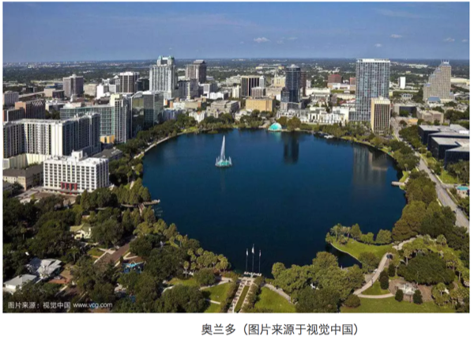
匹斯堡会议有几个显而易见的功能，第一就是评奖，很多分析化学领域的奖项都是在这个会议上颁发；第二则是为了买卖仪器设备，很多仪器公司会选择在这类规模很大的会议上发布新品，而确实也会吸引潜在买家，所以你可以预期这个会议的赞助费到最后是谁掏的；第三则是学术交流，除了学术报告、研讨会与展板外，很多课题组或研究机构会选择在匹斯堡会议上组织为期一两天的短期课程来推广自己的分析技术或理念，我目前所在课题组本来也准备了一组课程，但因为报名人数少而被取消了，不过会议方很大方地免了课程讲师的住宿与注册费用，虽然我不参与课程但也蹭到了很低廉的住宿协议价；第四则是为分析化学方向的学生找工作提供面试机会，学生的注册费只有25刀，可以提前注册提交简历，然后开会时招聘公司会给心仪的学生发面试通知，当场面试；第五则属于带动当地旅游业发展，会议会提供团体票去环球影城且一万多人一来一住一走，留下的都是开支，我从机场打车去酒店，当地司机都很清楚我是来参加哪个会议的并推荐购物中心与游玩景点，整个 international drive 上的酒店都有免费到达会场的大巴，15-25分钟一班，会场也有电视直播且可以在酒店特定频道看到，感觉套路已深，好听了说是服务到位，不好听就是宰客一条龙，因为有天坐 UBER 时司机小哥很直白的说很多地方就是宣传出去让你们外地人消费的，当地人根本不去，听着耳熟吧？
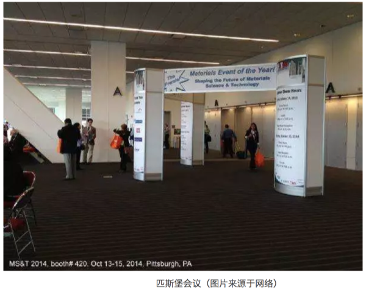
其实国内也有个会议几乎完全借鉴匹斯堡会议，没错，就是北京分析测试学术报告会暨展览会（BCEIA），同样的评奖、展览及学术交流整合于一体，我在北京读博时就参与过，不过真的就是打酱油到展台收集小礼品去的，啥报告也没有。相比原版会议可以发现匹斯堡会议的组织运营更为专业，如果你想到展区买东西已经不需要留名片了，参展人员直接扫你胸前的挂牌，会议结束后垃圾邮件就到了。不过我不确定国内现状，毕竟手机支付目前还是国内更强，只是不知道策展人有没有深度整合。另外会议每天都会印发昨日的焦点内容，会议结束后也会有针对性地回访调查，国内的会则并不太在意这些，其实有时候生意就是这种细节催生的。

这次来奥兰多开会，老板非要求投两个摘要以防万一，结果一个口头报告一个海报报告，还都在一天，我又是刚从国内休假回去加拿大当天就又飞的美国，时差不说报告都是前一天晚上才作出幻灯片，一遍没练就上台讲了（其实之前的报告也都是一遍没练，不过起码都会提前做好）。后果倒也没啥，因为报告在早上，听的人少，主要就跟其他报告人交流了。但我发现海报报告其实更有利于学术交流，因为要立在海报边上两个小时而海报可以放一整天，其实曝光率比口头报告更高也更累，而我以前国内开会都是贴上海报就跑了，没意识到其交流的重要性。
我这次最大失误就是在家过年过懒了，什么也没准备就跑来开会了，其实可以提前下载会议的手机应用标记想听的报告，这样可以省大量闲逛的无用功。不过好在还有个展览，所以闲逛也不那么无用，毕竟可以开开眼界，至少会议方提供了虚拟现实体验区、答题抽奖与盖章等游戏供玩乐。此外，如果有打算联系的合作导师也可以提前邮件约见面，我则完全忘了半年后要失业这茬了。但其实还有个亡羊补牢的方法，我在听完报告后会把问题记下来但不当场问（时间一般不允许），晚上回旅馆写邮件询问，虽然找工作是没啥用，但至少通过邮件交流可以让对方知道你的存在。而且他们也确实会回邮件，毕竟你能提问题就说明去捧场了，在会议这种众星云集的场合有个听众也不错。
然后就是社交了，我这个人比较独，所以一般不会主动去跟人交流，这不是啥优点，不交流谁也不知道谁的。但开会忌只跟一同去的人在一起，那就完全丧失交流意义了，一般要趁会议跟之前认识的人打招呼然后去结识自己认可的人，像我这样端着实际是吃了哑巴亏。不过好在我酒店跟其他同组的人不在一起，所以行动比较自由不用协调，这次会议国内的博士导师、答辩时主席及一些朋友都来了，异地见面更觉亲切。此外也结识了一些新朋友，基本都是做报告认识的，有很多前辈，也有博士生。交朋友这事是这样的，一定要互相认可，否则交流起来会很不舒服，所以姿态是要低一些的，但如果感觉对方不吃这套，也没必要死磕。桃李春风一杯酒，江湖夜雨十年灯，很多人这辈子可能都不会再见到了。
其实来开开会也是了解学科动向的好机会，我观察到很大的仪器公司似乎开始缺席匹斯堡会议了，一方面是可能赞助费要的多而回报反馈不够，另一方面则是分析技术目前似乎到了一个瓶颈。现在分析技术两极化发展很明显，要么就是大到类似光源、冷冻电镜这种根本没法展出，要么就是往模块化、OEM、微型化及便携化发展，大仪器公司在前者上有优势，但会展上更多的却是各种小公司，做的东西也都比较专一。值得一提的是大概有50多家中国公司参展，不过我感觉很多公司显然没啥经验，对于会展中吸引有效客户的手段完全没有，但愿他们能从海外同行那边吸取点商业经验，毕竟仅靠技术是卖不出去东西的。我个人比较感兴趣的是一些微型泵，7号电池或 USB 供电，只有啤酒瓶盖大小，感兴趣的原因则是我一直觉得对于可穿戴分析设备，如果没有稳定的采样结果可重复性就有折扣，而微型泵就很有必要，特别是能跟充电宝等其他日常设备偶联的接口对于野外采样或可穿戴采样非常有利。
其实我15年后就一直没参加会议，一方面是我自己也在转行，另一方面则是我一度觉得学术会议很低效。其实即使参加完匹斯堡会议，我依旧感觉学术会议上的交流是相对低效的，但很多会议模式确实比我之前参加的会议要更好一些，不过我觉得实时在线交流其实更合适，很多学科有着自己的邮件列表几乎每天都在交流，而实验性学科因为属于劳动密集型的所以会议交流可能更多，但伴随技术进步，会有新交流方式出现的。
5.10 十万阅读量的科普

前一阵有新闻说某高校认为科普文阅读量10万+算成果，我觉得还是有点难度的。用美国科普杂志来举个例子，《科学美国人》全美发行量不到60万，加上《发现》跟《新科学家》，整体发行量也就是一百多万，美国人口大概是中国人口的1/4，也就是说中国即便科普发达到美国的程度，日常感兴趣的人数大概五百万封顶。按说国内也有科普期刊，但那个发行量惨不忍睹，倒不是说国人不感兴趣，只是感兴趣比较晚，很多人没形成看杂志习惯而直面了互联网时代。我估计国内微信公号、果壳、知乎、科学网基本已经圈住绝大多数关注科普信息的人了，那么这个人数是多少呢?
不考虑泛知识化的知乎，果壳跟科学网日活用户用一些站长工具去查加起来大概是一百万，我估计这两个网站至少能占总关注流量的20%，所以目前日常对科普感兴趣的人也就是大几百万级别，跟上面那个发行量的估计差不多。这个覆盖面其实应该跟金融、IT等行业差不多，但远不如养生、娱乐八卦和新闻。那么百万量级的圈子产生10万阅读量相当于个位数百分点的人都看到了，这个还是很了不得的，这要求内容足够有趣又恰到好处的专业，太难了看不懂，太简单不值得传播。
用科学网博客来看，其文章周最高点击大概两三万，就算是一天点出来的也都是关于科普的，距离10万+还是有距离。这种量级科普文全国每天能出一篇就很不容易了，而且作者也不可能都是一个高校的老师/学生。而且实话说，很多10万+的文章名义上是科普，实际可能是搞怪或泛娱乐化行文，读者看了并不一定有学到新科学知识的感觉。
5.10.1 改变中的科普大环境

2016年，全国高中升高等教育的升学率从1990年的27.3%提升到了94.5%，一个高等教育学位对未来20年的年青人已经成了标配。《趣味物理学》、《从一到无穷大》、《十万个为什么》等科普经典里的内容对于普遍接受过高等教育的群体吸引力正在下降，一方面多数内容实际都成了通识教育的一部分;另一方面则是搜索引擎其实替代了大量的常识性科普，“你不会网上搜一下”成了年青人的常用语。
其实高中毕业，不论你学的文还是理，知识传授上一般侧重知识或事实本身，或者说学到的是通识。例如地球是圆的、力学有三大定律、元素周期表是按什么排的…这类知识其实就算老师不教，你看看《十万个为什么》什么的也都能知道。科普主要面向知识背景是高中组的，大多数人不进行科研，就算进行科研其很多科学背景知识也是高中的(因为你大学可能学了某个专业，但另外的学科最理想也是停留在高中阶段)。这部分内容基本不用科普，或者说包含在更广泛的知识普及中就好了，需要思考推理的部分不多，主要是了解事实，形成背景概念。这对于本来就关注的人没什么难度，但如果是中小学生科普，重点要关注这部分。
然而，科普的潜在受众并没有减少，打着“养生保健”主题的各类伪科学与阴谋论侵蚀着中老年群体;年青人对科技里技术层面的关注远远超过对科学的关注，实用主义下电脑算命、星座研究等伪科学在技术下获得重生并展示了强大的生命力;流行文化中的成功学虽然不断引入心理学与行为经济学的研究成果，但公众对于得出结论过程的关注显然少于关心结论本身。类比美国科普杂志的发行量与人口比例，科普的主动受众大概是大几百万的级别，占总人口千分之二三，这些人会主动寻找甚至创作科普作品。对其他人而言，在走出校园后，科学知识就成了个“靠谱的黑匣子”，敬而远之，不明觉厉。
5.10.2 知识向科普
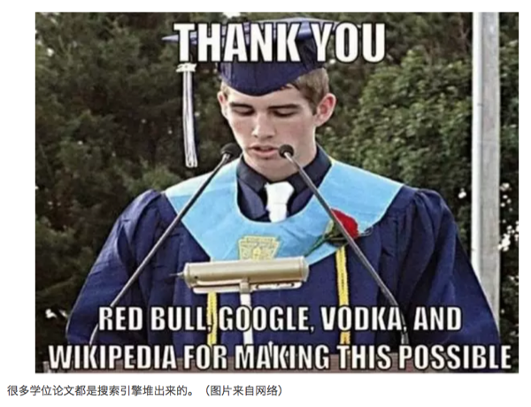
大多数科普文章其实是在做大学教材的通俗版，这类文章普及的是专业知识，例如PM2.5是怎么回事?行星间距离如何测量?端粒长度跟寿命关系…这类文章告诉我们从已知的高中阶段背景知识如何得到专业的背景知识，大都是专业概念普及，这个是社会大多数人科学背景的上限，却是专业职业化要求的下限。目前这个层次的科学知识几乎可以被维基百科覆盖，也就是说你可以用维基百科作为这类科普文的一个主要参考，另一方面就是趣味性了，如果你能加入更多互动跟多媒体，自然比枯燥的维基百科要好很多。如果你本科专业是理工学科，那么此类文章基本不用看，因为拿到学士学位就表明你已经掌握了这部分内容。这部分内容互联网的替代效果比较明显，国内做的也不错。但科学知识是不断更新的，如果过分强调已有观点其实不但不是科普，反而是科黑。例如方舟子的作品就有点过分强调知识的正确性而不考虑科学的发展，他本身其实也远离科研很久了，这个语境下他实际成了已有(甚至是过时)科学知识的卫道士的角色。
5.10.3 前沿科普

这部分的科普是从已知走向未知，目前最容易出问题的就是这一部分，因为在这一阶段是要建立在读者有大学水平知识上的已知，同专业的还好，但很可能读者大多数停留在高中阶段，所以他们会看不懂。
这部分最常见的就是前沿科技成果报道，其实多数人看了后只会产生“高科技”的一个感知，并不能理解掌握其中的知识。在我看来，如果文章只是这样让人不明觉厉，那跟告诉别人我有个魔法箱可以变戏法但不给看内部结构一样，读者跟作者都浪费了时间。这部分写的人最好本身是理工背景且实际进行过至少两个学科以上的科研，同时写作水平也有要求。目前的尴尬在于做科研的不会写，会写的看不懂，然后大家只能很和谐的点下赞，最好的情况就是记住了结论(但要小心记结论并善于操纵读者情感的人，他们通常擅长用海量最新研究把你忽悠得就差跪拜交钱了)。

科学成果的吸引力从来就不如娱乐明星的花边八卦，如果我一天平均有一个小时看书报杂志，那看了花边就不会看科普，注意力总是被竞争的，而且读这类需要有知识背景才能看懂的文章也比较累。从另一个角度看，科普在这个阶段对大众谈不上普及了，但对社会中有求知欲的人而言却很关键，而这部分人很有可能推动科技进一步发展。就国内看，科研工作人员大概也是几百万这个级别，其实面向他们的前沿科普很有必要。遗憾的是，这大几百万从业人员的市场规模非常有限，对他们科普还不如卖成功学鸡汤来的容易，优质内容不能专业化生产，吸引力就很有限。
职业化的科研需要为公众负责，而公众则可通过舆论切割科研经费在不同学科的比例。举例而言，北京的雾霾不仅仅让口罩、空气净化器行业高速发展，也让大气环境化学领域的研究人员瞬间经费充裕起来，充盈的资金会吸引到最新的技术进而推动学科发展。然而当资金总盘口一定时，一家吃饱往往意味着另外好几家要节食了。也许很多一线科研人员没有意识到，科普正是释放学科重要性甚至储备人才的最佳渠道，面向大众的科普不但是公益的，也是符合自身学科发展利益的。只有科学的声音更多更大，公众才会给予更多关注与投入，在这一点上科普跟科研并无区别。
科普的一般套路是先讲个故事但不说结局，引出研究背景跟意义，然后新发现在哪些方面进行了突破，然后是各专家的采访意见，然后是综合观点，最后又把故事收个尾展望下美好未来，通常也有高质量的图片、插画甚至视频进行解释。但科普又不是科研，讲求趣味性与故事性，而这两个特性要是出现在科技论文里基本是开送死模式。
科研成果的报道是N+1的，也就是说看的人知道了N，你告诉他1就够了。但科普往往是从零开始，当然不用到N+1那么远，但这意味着要面对的读者具备的是常识或通识，而你要告诉他的是从那部分知识发展来的新知。职业作家可以很好组织常识或通识的知识但你让他搞前沿，理解能力就有限了;职业科研人员对付的只是审稿人也就是专家，很多默认知识往往是逻辑上清楚明白的，但历史沿革基本不知道，这就导致故事讲得像论文，趣味性也无从谈起。且高度细分的研究领域让科研人员自身也无法对学科形成整体感知，同一专业的人可能互相都听不懂对方的研究，更不用提对公众的科普了。
其实科普对于科研人员自身也是很重要的。北美高校会对研究生与博士后开设基金申请与科研写作的课程与讲座，其中就会特别强调申请基金时一定要跳出自己的研究框架，用平实易懂的语言来阐明研究的意义，因为读申请书的人或者说做决策的人对技术细节关注度有限。而进行学术会议的报告时，前几页一定也是讲背景的，而且最好是一个有着婴儿与母亲的故事。既然无论如何都要学会用平实语言讲故事，科普创作是很有益处的，它可以帮助作者系统总结整合知识实现双赢。
同时，信息技术特别是数据科学也在冲击着科研，自然也冲击了科普。2006年，JoVe(Journal of Visualized Experiments)创刊，2014年被SCIE收录，影响因子达1.325，作为一份实验学科的期刊并不理想，但作为第一份同行评议的以视频形式发表的期刊，这个成绩则标志着学术交流从文字传播的单一形式开始走向多媒体富文本的时代并得到了一定的认可。现在科技论文已经不仅仅是文字传播了，活跃的科研人员正通过社交网络传播着成果，很多期刊都接受用视频、动画甚至幻灯片作为论文的补充材料。而科普也处于这一波技术浪潮之中，科普漫画、短视频、播客及博客都成了科普的阵地。其实借助多媒体互动，很多科普作品开始包含探索式小游戏与在线应用，引导读者自己得出结论。在技术层面科研跟科普的界限不再明显，同样的展示手段既可以用来科研展示，也可以用做科普说明。
5.10.4 科学思想

前沿科普走出“看结论”的现状最需要普及的不是知识，因为知识都是比较前沿的，很可能被后续结果推翻掉。前沿科普更重要的是科学研究的思想，这个其实即便一线科研工作者自己可能都比较迷糊，大部分人是站在前人基础上往前推进，前人的研究结论容易保存，但思想可能早就消散了。
举个例子，我可以找两组高中毕业生，一组让读《审判达尔文》，另一组读《盲眼钟表匠》，完了以后测试其对进化论的认可度，可以预期两个差异会很大。两本书都是从逻辑推理开始的，但结论恰恰相反，如何解释两种思想的冲突?这时候如果没有科学方法论的背景知识，很容易就陷入盲从。可以说，科学思想的科普需要引入这些矛盾而不是结论来让读者进行独立思考判断，并形成存疑并可通过观察与实验验证某个论断的科学素养。
科学思想或者说方法论其实比知识本身更重要，科学知识可以证伪，但方法跑偏了结论就不靠谱了。通过科学思想的普及，我们可以反观审视科研的每一步并诚实的认错换取进步。但现在很多科学向文章过分强调的知识本身的不可动摇，这对科学思想传播没有好处，属于钻牛角尖了。至少我们要给讨论留下可能性而不是一个个论断，如果结论都确定了，那我们还有必要讨论吗?
这里理想的文章应侧重于整合已有知识进行创新得到的新知识，基本上只有经验很丰富的人才能站到一定高度上解说一些原理或技术。开篇是一个主题，然后作者需要把相关知识与方法论进行高度整合最后形成自己的结论与见解，跟学术论文要求也差不多。此时仅仅谈思想谈逻辑就不够了，最好要整合历史，把发展沿革搞清楚。我觉得这类文章一个月甚至几个月能看上一篇就很不错了，消化这种文章也需要很长时间。坦言之这个认识高度出的作品属于简本教科书，内容却是职业或专业教科书才覆盖或根本就覆盖不到的，可以参考卢昌海老师的作品还有刘未鹏的博文。
5.10.5 科学史

当前科普文章的另一问题是过分强调了逻辑主导的故事而忽略了历史发展的真实过程。这就导致很多知识在解释时感觉很生硬，没有上下文，直接从石头里蹦出来了。科普文章趣味性的重要来源是故事，历史沿革是很容易讲故事的，教科书普遍采用学科逻辑框架，所以科学史作为科普对于专业科研人员也是有意义的。这个的代表可参考普利策奖非虚构类的获奖名单，很多时候回顾科学史会发现很多有意思的小故事，比明星八卦要精彩多了。 终极科普可能会走向科幻了，你可以体会其中思考的乐趣，当然知识背景设定就不要管了。自己构建一个逻辑自洽的物理甚至社会运行体制跟历史是非常有挑战性的，但我们终将走向未来。
5.10.6 新的指标
十万阅读量的科普天生是需要知识跟趣味来获取读者的，但更重要的可能是科学思想跟历史的传播，这可以凸显出科学最与众不同的特点，例如不断犯错、重视事实证据、当前存在的不足等等。切不可孤芳自赏，用别人看不懂来作为高深，有些科学知识本身确实不适合普及，但过分用技术名词来包装，然后用泛娱乐的方法来调侃就很没必要了。
普及类文章的难处在于一方面要影响更多人，另一方面却要保障质量。十万阅读量并不是好指标，含有专业信息网文超过一万阅读其实就很优秀了。让我说另一个需要考虑的指标是评论质量，高质量的评论不仅说明正文很好，也说明可以吸引到高水平的读者，此外评论本身也是科学思想的交锋，读者从这个过程可以学到更多。大家可以去围观下海外期刊或预印本文章下面的评论，哪怕匿名也能体会出读者本身的专业性，反观国内基本上还是情绪化的占多。读者跟作者间从来都是双向选择，越是情绪化，理性读者的流失就越多。
这是一个竞争注意力的时代，科学知识与方法论有必要在更多人的心中占有一席之地(本文部分内容已发表在《中国科学报》2017年10月27日第三版)。
作者：yufree 编辑：竹而乐
5.11 无知之幕
最近去加州大学欧文分校交流了两周，听说了欧文分校出现过捐资冠名学院的教授因为被指控性骚扰多名教职人员而一夜除名的事。捐钱对于高校属于重要创收来源，楼名字卖了可以卖教室，甚至校园里的椅子都有冠名纪念校友的状况。但性骚扰这事放到任何一个地方都不仅仅是低端问题了，属于严重的道德甚至法律问题，校方一夜除名并不意外。有些人会讨论是否涉及契约问题，契约有很多种，贩卖人口也讲一手交钱一手交人，但不合理合法的契约就可以判断无效。其实，如果自己本身有问题还要去冠名来树立形象，这其实是一种名誉绑架，高校创收归创收，来源还是要注意的，不做好调查或者当事人不报告就觉得无所谓影响非常坏。校园性骚扰其实是个台面下的问题，能报出来的还是少数，所以出现一个严惩一个没有什么问题。
很多人讨论说会搞得人心惶惶，但我觉得这属于无知之幕。所谓无知之幕，就是说你永远不知道下一个受害人是谁，因此保护措施就一定要按照下一个受害人是自己或自己的亲朋好友来设计。我不清楚这么简单的一个道理为什么很多人不理解，规矩下的自由自由度最高，无序的自由一定造成意见割裂与对立。不过很多人也会去争论度的问题，如果搞不清度的把握，那么保守点就可以了，再或者，你可以问啊。什么都不说就按照自己的自由度聊天是不成熟的表现，尊重别人也会给自己赢得自由空间。我有个师兄已经独立成立课题组，只要跟女生讨论问题，一定把办公室门打开。也许有人会说这是不是过敏，其实不是，因为校园里确实不应该出现师生关系亲密。对于没问题的人而言，开门并不损失，而有问题的人开门的风气就会有威慑效果。当然，学术问题确实存在机密内容，开门讨论可能造成泄密，不过同一院系竞争关系是可以在招人时控制的，单一方向选一个就可以，同系竞争本身就是很多潜在问题的开端。只是现在可能不论异性同性都得注意了，这就是社会伦理需要发展的地方，尽量给所有人最大且不干涉他人的空间，最大是权利，不干涉他人是义务，不可偏废。
不过，眼下的信息时代存在一个隐忧，无知之幕的现实基础正在被技术进步破坏。很多时候，有些人是知道自己不会成为受害者才肆无忌惮地争取利益。例如商品的差异定价，如果商家对你特别了解，它不会给你那个充分竞争的最低价，而是会根据你的消费水平推断出你能承受的最高价来维持自己的最高利润。而且你很有可能完全无法发现，这也是你在固定消费模式后决定的。个性化推荐的背后有着巨大的套利空间，此时游戏规则设计里如不考虑无知之幕或者通过技术与数据追踪突破了无知之幕，那么每个人将可能面临一个看似合理但实际被奴役的未来。在这样的空间里你的价值将被榨取到最后一滴而不自知，很多人则可能面临被侵害但上诉无门或彻底被主流声音所抛弃的境遇。对未来的无知是公平的最后一道保护伞，突破了这个，利益冲突就实质上成了社会伦理问题，这个时候有些人会成为社会的永恒弃子与棋子。但技术也可以用来巩固无知之幕，虽然事实公平很难保证，但起码在社会运行中，原则上给所有人公平自由的制度。
维护无知之幕的技术需要保证个人信息不被追踪，例如现在随便一个网页里就有大量的追踪代码，很多浏览器可以屏蔽掉。但商家可能会用无法提供个性化推荐来抵制用户采用类似技术，其实我觉得从隐私保护角度，个性化推荐可以做，但不能精确到人，算法设计时要强制类似用户不少于200人才能构建算法，同时200人的信息要经过加密，针对个人的算法需要在法律上禁止。也就是对个人自己或第三方知情权有个最低噪音，确保个人与第三方无法准确知道对己方最有利的策略。没错，不仅是第三方，还要包括自己，如果一个人知道自己一定存在或不存在某种风险，那么其就可以依赖这点来突破有无知之幕的游戏规则。举个极端的例子，技术进步后，通过组学技术某人知道自己无大病风险，此时他就不会购买保险，当所有低风险人群都不够买保险时，大病保险的保额一定会提高，这样高风险人群基本从出生就决定了较高的生存成本，这就构成问题了，人人生而平等的根基不存在了。
20世纪的技术进步是普惠的，21世纪的技术进步是优先照顾少数人的，因为技术研发成本越来越高。这就是那个挤公交问题，先上车的人上车后其实并不愿与后面上车的人均摊利益。同时，最新技术造成的不平等也会越来越大，当一项技术无法从成本与资源上实现普惠时，社会割裂的可能性就很大了。所以，技术开发是要讲伦理的，优先开发普惠技术并在制度建设中维护无知之幕，否则弱肉强食的丛林法则会最终吞噬掉人类文明的基础。
作者：yufree 校稿：广播站王站长 编辑：竹而乐
5.12 一城之国
大三做产业实习，带队的李教授找了辆大巴把我们拖到了济宁，溜达一圈后找了个会议室进行分组讨论，主题是济宁的发展。当时有个小组认为，济宁这样的地方资源少，农业衰退，应该重点发展服务业，成为山东的金融中心。李教授眯缝着眼睛笑而不语，不置可否，我却是那时突然意识到城市的发展可能会是个大问题。
5.12.1 城市发展的空间
那个小组的分析逻辑没什么问题，但肯定无法成真。扪心自问，我们学环境的都不会去济宁而更多得去选大城市。那些入学平均成绩本就很高的经管系学生会来吗？他们更多选择出国，退一步也会选北京或上海发展，一个小城市没有任何吸引力的。大学生思考问题比较理想化，就像小孩子对玩具的渴求，不管能否负担得起，反正道理通就是对的，而对的就应该做。
城市的发展是需要发展空间的，这个空间至少要由资源、人口、技术与资本四方自愿推动。工业化初期的城市往往就是资源型企业的支撑，经济好了就能吸引人才，人才带来技术，技术转化为资本，资本开发新资源或产业进行升级。当经济水平很低时，这个空间很大，一波人口红利就可以带来繁荣。然而，城市却不止一个，人都有脚，为什么不去更好的地方？
5.12.2 城市的抢人大战
2017年年末，西安开始了人才引入，到2018年年底就落户了100多万人。如果放在十年前，我对100多万人是没概念的，但现在不一样了，新闻从来都不新，都是更大问题的先兆。整个2018年，全国多个城市相继开始抢人大战，很多要求低到跟没有差不多。不过我并不意外，因为这是典型的人口问题：新中国第三个人口高峰在1990年结束，但应该在2010-2020出现的第四个高峰却在全面二孩放开后不温不火；高考录取人数在2016年出现拐点；2017年北京市人口出现了第一次负增长。
如果你是一个市长，把这些连起来看就有意思了，再加一把火的是经济问题。地方债务离不开土地财政，但是人口下滑意味着买房人可能会减少，这时候棚户区改造会释放一点需求，不过想避免房价过高的系统性风险，最好的方法就是房住不炒，限制有钱人炒房但要让没房的人能安居，前者好理解，后者其实更重要，这涉及了城市活力问题。
上海的老龄化率在2017年达到14.3%，远超老龄化社会的7%，往后再看几十年，老龄化将显著拖累城市发展。对于大城市，吸引年轻人就成了很重要的可持续发展手段，这对于机会丰富的大城市好像也没啥，甚至就算限制重重也总有人过来博一把。但省会城市肯定就要慌了，因为现在的年轻人别说是跑到一线城市，移民也成了很多精英阶层的日常话题。这种马太效应下针对年轻人定向引入，可以同时起到稳房价、稳人口与稳发展的效果，简直是稳赚不陪。然而，如果整体供血不足，局部充血又会发生什么呢？
5.12.3 城市与现代家庭伦理格局
与老龄化齐名的是少子化，目前发达国家单身家庭的比例越来越高，传统的家族解体为核心家庭，而核心家庭又解体成单身家庭。上一波人口高峰的父母突然发现下一波的子女在婚恋上跟自己完全不是一个频道了，单身从人生的过渡期变成了终点，这背后原因自然少不了经济发展。
一个人的经济越独立，其对家庭的要求就会越高，而经济独立的基础又是事业发展，然后人类这个物种还有个最佳生育年龄，再加上专业分工社会不断推迟毕业年龄，都堵到一起就会发现成家成了一件颇有难度的社会义务，理想与现实如果无法一致，最不凑合的策略就是推迟。这个角度去看女权运动与草食男的兴起就会合理很多，女性不必屈从于上一代人的成家意识，而男性也疲于应付婚恋高昂的时间精力成本，那么大家各过各的就好。
城市给了这种想法落地的平台，城市的规模越大，经济效率是会越高的，年轻人聚集到大城市赚取高薪，然后过着养活自己全家不饿的生活是完全可行的。家庭结构对多元化的大城市不是必需品，相反，大城市的聚集效应可以创造出本应消耗给家庭的娱乐项目。一面是维持家庭结构的子女教育与感情投入要求不断走高，一面是个体自身获取娱乐方式的途径增多，都市男女怎么选其实一目了然。说到底，是经济发展打破了现代家庭伦理格局，马尔萨斯的幽灵从未远去。
5.12.4 城市福利的代价
纽约可以算是国际大都市的代表了，走在街头你会明显感觉到这个城市的人口组成是很多元的，但如果你住的时间长一些，又会发现不同族裔其实是生活在城市的不同区域，看似融合，其实分离。大城市有着显著的聚集效应，小众兴趣与流行趋势更容易在大城市找到志趣相投的圈子而进行传播，而这些东西是城市活力的重要来源。如果一种兴趣爱好需要100人才能引起全社会关注而人口中一万个人才有一个人认可这个趋势，那么只有规模100万人口以上的城市才会出现趋势与团体，有团体才会为共同的兴趣或利益发声来进一步壮大。小城市里曲高和寡，有趋势也会自然消亡或不成气候，这样来看小城市的多样性长期肯定是不够的，活力会持续减弱。
不过，更直接的感受可能是，生活成本里有三样是非常高的，一个是停车费，一个是房租，还有一个就是城市税。这三个高成本的东西都有一个共性，那就是仅仅在城市内生效。另一个潜在共性则是游客不容易发现的，那就是如果你是当地常驻居民，上面三项都不那么严重。停车费高但公交系统发达，房租高但常驻居民其实都有房子，城市税其实对应了一系列的居住福利。换句话说，大城市给年轻人的预期生活其实就是坐公交、交房租、交税然后跟同族裔的居住到一起，当你站稳脚跟了，就可以享受城市福利了，这时你的青春基本就留在了这里。
我大学入学时，导员就宣传过一个新加坡的招生计划，学费全免还有奖学金，但要求在新加坡要工作够十年才能回国。这背后的道理很简单，发达国家利用前期优势继续吸引高端人才，而且要通过合同制让你把最有创造力的时光奉献给他们，作为回报，可能给你个公民身份。这也是一种剪刀差，国籍对于高端人才来说转换难度并不大，我国属于相对单一民族的人口大国，没有移民习惯所以感受不深，甚至没觉得精英移民是个需要关注的现象，但其实人才流失是非常可观的。
5.12.5 城市教育
说到人才就要同时看下教育，《经济学人》的一篇报道发现，相比50年前，发达国家父母花在孩子身上的时间几乎翻倍，教育程度越高时间越长，母亲比父亲时间长但父亲的亲子时间也翻了3.5倍（基数低）。如果我们把社会经济地位看作生存压力的指示，那么生活无忧的人事实上倾向于K策略。反观发展中国家，在过去的一个世纪都经历了人口大爆发，当然时间上有先后，例如眼下非洲的尼日利亚的人口结构跟20年前的中国几乎一模一样。收入程度相对高的城市里生育率低也是众所周知的事实，大城市是最好的避孕药。而另一个事实则是2000年后虽然世界人口在涨，但农村人口已经基本不涨了，城市化相当于全球尺度的计划生育。显然，越生越穷，越穷越生这种发展中国家的死循环已经被城市化破解了，少生与不生成了新生存策略。
事实上，《纽约时报》就曾撰文指出，现代化教育对子女与家长都是一种煎熬，可看作军备竞赛，很多教育内容实质上是被很多人宣传出的现实扭曲力场强加给父母与子女的。什么出国游学、非洲支教还有领导力训练都是装点简历的意义大于实际意义的，但是鄙视链下的家长们就是乐此不疲，并事实上形成了筛选机制绑定阶层认知来强化这些东西。当生存压力不大时，总得有其他压力来制造内部差异。物种间出现压倒性优势时，优势物种内部就会以各种形式出现分化，资源从来就没公平分配过，这一点人类创造出的文明其实就是最大的推手。教育会促进经济发展现在看是没问题的，然而人口萎缩下的精英教育不一定促进经济发展，更可能固化社会阶层。在城市的发展过程中，先来的掌握优势资源后总会对后来的进行歧视，后来的族群也多是从底层一步步起来，但城市里的先来后到还是很容易感受到的，因为居高位者可以为后来者设置天花板。
经济发展与教育的关系确实是很强的，但这事实上说的是两个事：识字率提高会显著提高经济发展，高等教育提高会通过技术创新提高竞争力。但目前的情况是这两个群体都在萎缩，不认字的人越来越少，技术精英也并不多。教育创造更多的是认识世界的机会与实现梦想的野心，从普惠教育到精英教育，绝大多数人最终就是螺丝钉，个人实现梦想与整体实现梦想在资源限制下是冲突的，这种情况下已经实现的人不大可能甘心让渡资源，阶层固化就有了个人层面的动力。在《文凭社会：高校扩张与文凭贬值及其他》中，作者认为文凭在美国已经通货膨胀，并不能有效促进个人的价值实现。这种高等教育泡沫注定是要让一些人发现旧有的上升通道好似陪太子读书。不过伦理的变化却可能冲击阶层问题，如果大城市的人不打算为后代谋取资源，那么消费主义实质上可以破解阶层固化，不过这个问题应该远比想象的复杂。
5.12.6 城市的可持续
文明可以让个体脱离物种的生存要求来实现其他诉求或者说高质量的生活，整体后果就是种群数量被内部社会结构限制住了。少而精似乎是人类文明发展的必然，然而少而精是可持续的吗？我对经济学了解有限，但从整体需求角度可以进行另一番解读。每个人的价值需求一体两面，一份是面向他人的而另一份是面向自己的，面向他人的是共同认可价值需求，面向自己的价值由自我评价。一台游戏机对于所有人而言价值可能是300美元，但对于不喜欢玩游戏的人而言是个人价值是0，对于喜欢玩游戏的人而言超过300美元。也就是说只有一件商品对具体个人来说产生的价值大于面向其他所有人的价格后，这个人才会付费，这个需求才会被响应。也就是说，下面这个不等式成立才会有经济行为：
面向个人价值>市场销售价格
长期以来的经济系统里商品市售价格普遍低于面向个体的价值，都是被生存压力限制的，例如大米、衣服、住房等，所以当个体经济实力到位后就会产生购买。但经济增长后，商品种类开始增多，个人需求开始出现差异。例如有些人追求高音质就会买很玄学的音响设备，但对那个人而言，音响设备产生的个人价值还是高于市售价格，他肯定会去买买买。要知道，这样的需求是可以无限制产生的，被响应的需求就会促进经济总量。但同时注意到有些人的所谓生活必需品其实对另外一些人而言个人价值低于市售价格，除非因为某些事件提升了个人价值或市售价格降低了，否则这些人不会去购买。普惠技术是作用在降低市售价格这一端的，而K策略则是作用在提高面向个人价值这一端的。
过去一百年世界经济总量都在增长，这个增长实际上是为了迎合人口增长而出现的总需求增长。“有人就有消费”指的更多是普惠消费品而不是个性化消费品。未来的经济增长在没有普惠技术去降低价格让更多人买上更多商品的前提下，更丰富的商品面对不再增长的人口只能去提高面向个人价值，也就是筛选定位到目标人群然后洗脑让他们掏钱。这条路其实现在来看都是挺成功的，但如果抽离出人口基数增长来看，少而精的人口可以支撑多而杂人口条件下产生的经济系统吗？这样的文明可持续吗？
5.12.7 城市与娱乐
娱乐从未像今天一样如此重要。人的一天就是24小时，抛开工作睡觉，剩下的时间怎么分正在改变。历史上剩下的时间大都会放在经营家庭关系与教育，但当机器解放了家务，教育转嫁给了学校后，娱乐业迅速渗透进入了这部分时间。而且，娱乐业的渗透方式是双向选择的，这样很快娱乐业就会进入专业化市场，而个人耗在娱乐业的时间也会直线上升直到耗完。
现在很多应用的设计都是无限信息流，只要你刷，就会有新内容出来，而内容水平也越来越高。与之同步的问题就是牛津词典2016年的关键词：后真相。对个人而言，真实不再重要，那么重要的是什么？娱乐。所有人都知道相机美颜后看到的是假象，但所有直播的主播都会打开滤镜，甚至粉丝会主动要求打开。娱乐时代的人不关心事实，更关心愉悦的体验，且只要你能迎合这种体验，消费行为与资本风口就会随之而来。倒也没什么好批判的，每个人都只是想活得轻松些，这怎么能去谈对错呢？这也许是虚伪，但你真把没有滤镜的现实展示给自诩文明的现代人，可能会适得其反，很多政策或新闻或行规之所以晦涩难懂，有部分原因是太直白了就没法推行。
也有消失的，在过去，个人更多沉浸于自己的体验无论经济上还是伦理上都说不通，现在都不那么重要了。这里沉浸消耗掉的时间不是凭空产生的，它原本属于的那部分例如经营熟人关系的时间就少了，实话说，很多人愿意跟陌生人打十几局吃鸡游戏都懒得回家人的一句问候。这是一种对上一代人无可奈何而对这一代人可以理解的行为，当家庭不能给予感情支持，年轻人自然而然就来到了大城市，在这里，大家都是对方的过客，互相取暖。
5.12.8 城市与人口流动
20世纪其实有个让人忽视的进步，那就是交通便利所带来的流动人口。一直到近代，历史上都有逃荒的说法，但新世纪的流动人口情况更微妙，因为有个大背景出现了变化，没错，还是人口。同一个国家内的流动人口会偏爱大城市，而老龄化不是只发生在几个国家，而是全球，到2050年，全球平均年龄将提高到40岁。与之同步的另一个问题平均寿命的延长，延伸的一个问题也是显而易见的：老年人的生活质量需要青年人的持续涌入才能保证。
难民问题的难点不在于是否是圣母，而是转化难民为劳动力是国家发展的保障，这一点城市早就进行了缩微版演示。一个城市不可能都是富人，越是大城市，贫富差距就越悬殊，但你要真把底层人给清除了，城市的脏活累活就没人做了，到头来只会助长非法劳工，因为需求不会减少。《大国大城》里认为，在城市尺度每引入一个精英，就必须配一个低收入的人来维系住城市的总生活成本，全是精英经济会崩盘，除非配套服务全部机器人化，而低收入人群过多会造成社会治安难题，例如巴西里约热内卢，这会是个管理困境。同理，可以想见发达国家会越来越欢迎移民或难民，而发展中国家会被进一步抽血。
20世纪经济持续发展的动力背后有着人类历史上最大的一次人口红利，如果起步够早进入发达国家行列，后面哪怕老龄化也可以用高福利来持续吸引移民。君不见连单一民族的日本都开始招海外劳工了，而发达国家良好健全的生活体制有着天然的人才吸引力。发展中国家如果越过了中等收入陷阱，进而产生国家吸引力，那么未来可以持续发达。但是，如果国家留不住人才，无法产生国家层面的核心竞争力，那么政治经济上就可能被大国操控，这时要是人口又进入了老龄化，衰退几乎是必然的。
在全球人口红利的消退上，留给发展水平弱国家的选择空间其实只有普惠技术。
5.12.9 城市与技术
前面所说的交通就是一种普惠技术，这类技术可以让几乎所有人的生活成本下降。然而现在资本追逐的技术更多的是个性化技术，例如精准医疗，脑科学啥的。这类技术会在出现时将人群进行切割，掌握技术的优势会显著高于不掌握技术的，而且为了维护优势，技术普惠化就变得不现实。打个比方，就健康而言，新技术不再是让病人恢复正常，而是让正常人更强，这类技术的出发点就是分化人群而制造不公平，而普惠技术却更多的是让人恢复正常。
这个趋势有很多表现形式，但教育应该是最直接的。全球范围内父母对子女教育的时间与精力投入都在升高，与之能抗衡的只有中国的房价。教育的实现方式不再是普惠的，更多时候是区域的，只有你到了某个高中，才有可能上好大学，这种情况下必然出现金字塔结构的体制，所有人都会去追赶个性化技术，例如补课与实践经历来保证自己的优势长存。从少部分人获益推广到全体获益是需要时间的，但如果有些益处只有少数人获益才有意义那么就不可能最后走向普惠技术，这是技术伦理需要解决的问题。
城市或国家也一样，他们也不用追求普惠技术，在人口老龄化与分布不均的大前提下，城市的首要任务自然就是想尽一切办法让繁荣永续。那么，你见过整体衰老局部繁荣的先例吗？当然有，肿瘤。
5.12.10 城市的吸引力
如果说发达国家是在全球尺度吸引人才，那么城市就是在全国尺度吸引人才，而且城市之间是有竞争关系的。这样我们从外面看就会发现一个国家的人口会逐渐集中到大城市群中，而城市吸完了周边农村的资源后自然要去抢其他小城市的资源，在大城市眼里，小城市跟乡村没有区别。而中等城市则要跟其他中等城市去抢人，否则也会乡村化、老龄化，这是人才争夺背后的原因。而乡镇则要做好附庸化功能化的准备，不然被大中城市抽干了血，几乎没有发展前景。
而且可能很多人也体会到了，大城市户口正在起到发达国家护照的功能，很多使馆或保险公司是通过居住地来判断是否给予通行或保险的。同一个国家不同城市的福利也差距很远，但大的国际都市反而差距不大，你可以从任何一个大都市里找到顶级奢饰品的专柜。然而，在发达国家的大农村，你却可能找不到一个常见的连锁品牌。城市实质上正在执行原来国家的功能，他们的税收会高，福利也会高，经济上也会从国家获得更多自治权与豁免权。国家概念自然还会存在，但大的国际都市会不断提高市民待遇与福利来吸引人才的。
乡村会衰落，小镇会衰落，中小城市会衰落或成为大城市的功能性卫星城，而人的流动不会停止。
5.12.11 人才的选择
国家有国家利益，城市有城市利益，那么人才也有自己的利益。正如大学选专业一样，热门专业会吸引到高分考生，有活力的城市也会吸引到更多的精英。优势精英的流动其实并不会受到国籍限制，很多时候是意愿问题。而且社会信用分的出现会更巩固这个问题，一个高信用的人可以享受技术进步带来的最大便利，而非精英则只能享受普惠技术的便利。
如果每个人的社会信用档案可以借助芯片实时读取，那么对于有些人而言就相当于实现了最大化的自由，但对另一些人而言，几乎寸步难行，只能按照信用分的指示去做那些维持生计或贡献税收养老龄人口的工作。事实上，发达国家的永久居民制度就是一个信用分制度，取得永久居民是没有投票权的，但税还是要老老实实去交的，当永久居民战战兢兢成为公民时，他会投票让永久居民得到选举权吗？
说到底能防止个人成为精致利己主义的人与防止城市成为周边吸血肿瘤是一回事，跟发达国家通过移民政策占发展中国家便宜也是一回事，他们都在为了自己的生存做着最大的努力。不过，除非出现新的普惠技术可抵消城市的聚集优势，城市将越来越像国家一样自治，你来自北京与来自济宁享受到的福利差距将会越来越大，正如北京大学与济宁学院的差距一样。
文明会繁荣也会衰落，而原因可能是一样的，就是挥之不去的生存压力。
5.12.12 结语
上面说的是问题吗？这取决于你的价值认同，有些就是不可逆的趋势，有些就是这几年会出现的临时现象。我觉得这些对个人而言可能真的是无关痛痒的，但从整体考虑又确实是老祖宗那套不适用的新情况。忙着催婚占据公园相亲角的父母可能有个为从内心就拒斥婚姻怕麻烦的子女，担心城市活力的市长总是被投机的游资惦记，明明是自己国家倒卖军火搞的小国内乱不断难民四起的发达国家又担心本来应该成为低端劳动者的移民抢了自己的饭碗……国家的边界会不会退化到城郊结合部？城郊结合部的边界会不会退化为个人智能手机与虚拟现实游戏？太多科幻作品与新闻热点报道都做出了猜想，当我们把这些猜想重叠后，未来的轮廓就会逐渐清晰，这个图景人类历史上没有太多的参考，自然也不能开倒车用过去的模型来解释，个人之于历史进程还是太渺小了。
校稿：广播站王站长 编辑：Lisa小姐
5.13 闲谈日本东京游学
近年来，国内生态环境保护越来越受到重视，不论是政策的导向，还是技术的突破，都是我国生态环境治理的一个爆发上升期。仅仅从治水方面来说，前有海绵城市建设大规模推进，后有城市黑臭水体治理、长江大保护等重量级的大手笔。从国外治水的情况来看，会给我们很多的启发与经验，结合日本东京游学的经历，闲谈下我们邻国日本东京的治水发展历程、实地考察所见所感以及自己的一些感受等。
5.13.1 东京都的历史进程
东京作为日本的首都，全称东京都，为日本的政治、经济、文化中心，是日本的海陆空交通的枢纽，扩张相连的繁华都市区是全球规模最大的巨型都会区。东京都是由23个特别行政区和26个市、5个町、8个村所组成的自治体，面积约为2188平方公里，是世界人口密度最高的大都市之一。
说到东京，不由自主地想到我们的首都北京，北京是一座有着三千多年历史的古都，为我国的七朝古都。现为我国的政治中心、文化中心、国际交往中心、科技创新中心，是我国重要的陆空交通枢纽，是国家中心城市、超大城市。北京市下辖东城区、西城区等16个市辖区，市域面积约为16410平方公里。
提起东京与北京，不得不提其历史发展进程，正如下的时间轴所展示一样，在1860年左右，日本与当时我国（清政府）对外政策是一样的，都是闭关锁国的政策，不愿意对外开放，但有时候历史往往前半段是惊人的相似，后半段却走向截然相反的轨迹与路径。日本从1860年正式确定东京作为首都，开始走向对外开放、富国强兵之路，生产力开始得到极大释放，而北京城却多灾多难，不断受到西方列强的侵扰，最终出现的不同历史结局，相信历史教科书都已给我们清晰的答案。
5.13.2 东京治水发展历程
东京都地域范围内的水系特别发达，境内大小河川上千条（见下图），在城市发展过程中也经历污水横流，河川臭气熏天的脏、乱、差阶段，自从1983年东京都成立综合治水调查委员会，东京都算是开启全面河川整治的新阶段，至2015年，经过近四十年的整治，东京都河川整治基本上取得非常显著的成效，大小河川基本恢复到正常的设计功能需求，改善周边的人居环境。
与我国治水比较来看，部分城市比如上海，1998年开始上海苏州河一期治理工作，至今仍在开展苏州河三期治理工程，取得一定的效果，但目前仍然面临着严峻挑战与污染风险。近年来，不论是国家生态文明建设的政治任务，还是百姓对周围生态环境改善的诉求，国家接连下发政策红利，提出打好污染防治攻坚战，出台“水十条”，直接带动水污染治理市场呈现出爆炸式发展需求。
水污染治理本身是属于政策驱动性行业，与政府制定出台政策与法规要求有着密切关系，但现实却出现“九龙治水”的局面，比如住建部牵头，先后提出海绵城市建设、城市黑臭水体治理、排水管网提质增效等治理需求，又如水利部牵头，又提出河长制、湖长制的管控要求，在治水过程中，出现明显边界切割，无法形成一个系统完整的治理闭环，也就不太容易实现水污染防治的目标任务。
我们似乎总是想要在有限的时间充分发挥我们“集体力量办大事”的优势，快速去解决我们当前复杂性的环境问题，实现还百姓一个干净、舒心的生活环境的美好愿望！
但对比下来，我们会发现我国的治水与日本相差整整四十年左右，结合日本治水的历程来看，其实他们走过的路，我们也正在走，只有充分吸收与借鉴别人的成功经验与做法，其成功的经验给我们一个重要的启示是水污染治理不是一蹴而就的，不但需要顶层设计的精心规划与布局，而且也需要时间与耐心方才能完成与实现的。
5.13.3 实地考察所见所感
在去东京之前，对日本河川治理只停留在查阅的资料或者素材介绍里，没有非常直接的印象或感受，实地考察后才有了更直接的感受与体会，结合检索资料与现场调研，整体梳理下日本河川治理的思路及启发。
首先，河川整治基本上是一河一策，对每一条河川都要编制流域综合治水对策计划，并且在计划确定后严格执行整治计划，整治具有连贯性、延续性。
其次，对于具体的一条河川，制定分区规划与整治策略，充分利用周边的地上、地下空间，最大限度使用周边空间，保证整治效率与效果。
再者，人工与自然方式结合，工程与非工程措施并举，不仅仅是政府的事，还是与普通老百姓息息相关的，公众教育与参与也是值得学习与借鉴的。
5.13.4 其他感受与体会
在去邻国日本之前，我对日本的认识和了解仅仅停留在教科书与抗日影视剧里，到了实地现场以后，发现有些情况确实与想象的不太一样，也给我带来一定的冲击与不一样的感受：首先东京是一个非常干净的城市，而且道路上基本没有或者很少见到垃圾桶，公众都是把垃圾装入随身携带的方便袋中带回家分类处理；其次，东京是一个非常安静明亮的城市，比如在公共区域或地铁上很少听到有人大声喧哗，还有东京的普通老百姓，总体上感觉都是比较友好和善，而且很有礼貌，服务周到热情。
从另一个角度看，国内的氛围与现场的感受给我不一样的感觉，自己细细琢磨，发现两点值得我们去思考：一方面，可能是历史上日本对我国和我国人民造成极大的伤害，一直呈现着“政冷经热”的局面，导致民众对彼此认识不够深入，另一方面，日本又有很多值得我们学习技术与借鉴经验，我们如何破除壁垒，学习其先进的经验也是一个比较大的命题。在以后发展过程中，如何才能化解双方的敌对与仇恨，实现双方的共赢发展，避免再次出现历史悲剧是需要一代代人去不懈去努力！
作者：王宇 校稿：次要男主角 编辑：天枫
5.14 当北京遇上罗马
飞机降落时，天已近黄昏，等到过关，天色已黑，于是打消了坐在车上一览罗马风光的念头，在高速路上还未走出很远，便远远看到了华为手机的广告牌，听着司机师傅带着口音的英语，对于年轻时迷恋《教父》、《美国往事》的我，莫名有了亲切感。出行前一个月，意大利与我国签署备忘录，支持“一带一路”建设，成为首个正式支持中国“一带一路”的G7国家，也让我对意大利好感倍增，此次罗马的公务之行，让我对交流的内容也充满了期待。
5.14.1 罗马的年轻人都去哪了？
在交流过程中，我们去了政府部门、科研机构和周边街道以及餐厅，见到的大部分都是中年甚至老年人，却很少看到年轻人。我好奇地问了下意方的工作人员，罗马的年轻人都去哪了？对方说，年轻人要么是在学校，要么就是在家里，像政府部门单位很少录用新人，一来编制有限，二来现在退休延迟，很多老人仍旧奋斗在岗位上，年轻人的机会并不多，很多年轻人找不到合适的工作，甚至就宅在家里。
这让我想起了日本的死宅群体，网上查询一下，发现原来意大利的老龄化程度仅次于日本，高居全球第二。意大利国家统计局2018年度的数据显示，意大利总人口继续呈下降趋势，老龄化人口持续增加，65岁以上占总人口22.8%。
反观我国，老龄化进程正在加速。截止2018年底，全国65岁以上人口占人口总数的比例达到11.9%。预计到2030年，65岁以上人口占比将上升至15%。可见，再过几十年，我们的年轻人同样会面临这些问题，而如何激活社会活力可能也会成为一个问题。为避免这种现象的发生，鼓励生育是一个方面，同时应该鼓励工作单位合理安排人员的年龄结构，尽量不要出现断层的现象。一来为年轻人多些机会，二来不要为养老增加太多负担。
5.14.2 罗马的大车都去哪了？
早就听闻欧洲盛行小型的经济适用性车辆，来了意大利，这种感触很深刻。从机场到酒店的路上，时不时就有一辆类似本田飞度大小的车辆从旁而过，当时就来了兴致，后来在城中发现，这种大小的车辆都算是比较大的了，类似smart的两座车非常之多，很多车形走复古风，形成了罗马街道一种独特的风景。
由于是古城，且人们对城市原貌保护的较好，城中的街道大多比较窄，因此小型车辆进出和停车会方便一些；此外，意大利石油全依赖进口，油价相对较高，因此小型车更为流行。在和罗马工作人员的交谈中，她说罗马百姓经济也是较为紧张的（不知是否玩笑），体积小、排量小的汽车可以节省不少开支。反观我国，大国风范在哪都体现的淋漓尽致，追求场面、追求豪华似乎是骨子里的特征。
再一个有意思的事情就是，你会看到很多汽车身上很多剐蹭变形，但是依然悠然出门，同行的同事告诉我这也算是这边一个特色，汽车之于他们就是一种工具。给人的感觉，这就像是一辆便宜的自行车一样，车身上掉块儿漆也没人在意，一是因为便宜，二是因为没人去计较。说他们汽车小吧，他们有的公交车比我们的两节公交车还长，就像照片中的那样，这样有利于增加大众交通的承载力。
说了几个不同，说说相同的现象，这里堵车的情况也非常明显，加塞现象也屡有发生，并不是我之前认为的西方人文明排队。负责我们此次交流的意方工作人员有位同志，70多岁了，开车操作依然猛如虎，遇到一个大妈开车加塞，这位大爷除了像王站长一样路怒外，还毅然的竖起了中指，看来在某些方面，天下皆同啊。
此次罗马之行的主要目的是就PM2.5（细颗粒物）监测技术、环境空气质量预报预警及控制措施、VOC监测技术等内容等和意方进行交流。
尽管早在1997年，WHO（世界卫生组织）就在《空气质量准则》中增加了PM2.5（细颗粒物）的准则，但在2006年，才由美国率先实施PM2.5标准，日均浓度限值为35微克/立方米；2008年，欧盟紧跟其后，规定到2010年PM2.5年均浓度限值为25微克/立方米；而我国到2012年2月，才在新修订的《环境空气质量标准》中，规定我国PM2.5的日均浓度标准限值为75微克/立方米、年均浓度35微克/立方米，但限值还是跟欧美有一定差距。正因为欧盟PM2.5的监测早于我国，有许多先进经验值得我们去学习。
- 监测网络
罗马市1285平方公里，人口300万，现在有大型空气监测点位13个，北京市16412平方千米，人口2100万，现有大型市级固定监测站71个，从站点密度上来说，差别不大。意大利监测站点数量的选择及监测项目的种类取决于区域内的人口数量及污染程度，污染程度高，人口多的地方，建设的站点数据就相应多；而北京市站点的选择主要是看服务功能，有背景站、区域传输站点、农村站点、交通站点等等，除了说明空气状况外还进行污染源解析。因此我们可以看出站点建设的出发点略有不同，意方更注重人们的感受，我们更注重说清情况、找出问题。这里没有谁比谁好，最终目的都是改善状况。
值得一提的是，北京市在空气监测网络尤其是PM2.5监测网络方面，已经进入卓越的行列，目前北京市一共布设了1300多个高密度监测点，并利用物联网和认知计算、大数据等新技术，实现对每个传感器、点位的有效管理，能够快速识别出哪个时段、哪些热点网格污染相对严重，目前该网络已经运用于北京市街乡镇的考核工作。就这项工作来说，我们已经领先于罗马。
密度高与找问题是呈正相关关系的，但同时与成本也正相关，这种模式短平快，但是长期维护起来成本很高，没有一定财力的政府压力是很大的，能否真正推广值得思考。这方面，罗马也考虑较多，力争用最少的站点发挥最大的作用，他们建立一种方法，当污染物浓度通常高于排放限值60-70%的区域采用自动监测结合建模技术分析。如果污染物浓度低于40-50%的限值或目标值的评估下限，则可采用建模技术进行客观估计（2012年后，意大利消减了部分监测点位）。模型在意大利被广泛使用，意大利当局也经常使用统计方法或流动手段来开展短期监测。
搞加法看腰包，做减法才体现水平，对于北京市长期较低浓度的站点，是否可以进行转移或者移除，适当频次的开展手工监测，移除站点的经费是否可以用于有争议或者对环境评价、机理研究更重要的站点？
- 信息公开
对于PM2.5质量浓度，目前我国已经实时公布190个城市的数据，并且可以查看过去24小时的浓度变化数值，每月，在中国环境监测总站网站上还会公布全国168个主要城市的浓度排名；意大利呢，在公布实时数据的同时，能够查看过去6天的浓度变化数值，并且可以下载从2001年至今的历史数据报告，相较而言，意大利的信息公开更为彻底。对于科研工作者来说，历史数据的价值还是比较高的，希望我国在信息公开方面能够再大胆一些。
在交流时，明显能够感觉出意方政府很关注民众意见，比如说意方要在某城建造机场第三跑道，但当地民众质疑飞机会产生大量空气污染物造成健康损害，因此抗议项目建设。在当地选举的时候，一位代表民意反对建设跑道的被选举人成功当选。但是比较尴尬的是，这位被选举人当选后，立即违背初衷着手推进该项目的进行……
因此我们可以看出，民众的意见足以左右政局，在我国，各级政府目前极为关注空气质量，是因为空气质量是作为政府的一项绩效考核指标。所以，无论是国外还是国内，官员们更加畏惧的是职位的变化，只是国外民众能够直接参与考核，我国是通过政府机构组织考核，民众的参与程度稍显不足。
对于空气质量预报预警，目前我国对京津冀、长三角、汾渭平原等重点区域和城市发布未来三天的空气质量预报，而意大利目前并未做到全国范围的预报，只在个别城市如米兰开展预报预警。不过对比预报界面，米兰的预报信息量更多一些，除了空气质量，还有天气预报及可采取的预警措施等内容。
北京和罗马，东方和西方两大文明古国的首都，都饱含文化神韵，即使在现代社会他们的文化依旧熠熠生辉，仍是世人向往的观光和学习圣地。就环境管理工作而言，各具特点，谁也没有复制谁的路，一些成功的、好的经验值得我们学习，朋友来了，我们有美酒，共同进步。
作者：次要男主角 校稿：广播站王站长 编辑：元宝大人
5.15 我们一无所知
科学总给人一种我知道真相的感觉，但其实更多情况下的感觉应该是我知道我不知道真相。现在的知识经济快餐式地将一些研究成果灌输给了大众，而大众也并不挑食照单全收。只是多数情况下自己以为理解的那部分只是个结论，推导被当成了细枝末节，殊不知结论对研究而言是保质期最短的。
今天介绍的《We Have No Idea》的作者有两位，一位是画PhD Comics并拍了两部大电影的 Jorge Cham，另一位则是加州大学欧文分校的物理学家 Daniel Whiteson。我曾有幸去 Daniel 家里做客，除了聊《银河系漫游指南》外，他烤的面包还是很有水平的，而且他儿子的数学习题是他自己出的，摊上这么个爹不知道是幸运还是不幸。不过更让我惊喜的则是这本书，非常符合我心中科普书的核心价值：不要告诉读者我们知道什么，而是告诉他们，我们不知道的那部分等待探索。
我们对宇宙了解多少？其实只有5%，剩下的27%是暗物质，另外那68%则完全没头绪，我们称之为暗能量。也就是说，课本里教给我们的客观规律最多作用在宇宙里5%的东西上，另外那些服从什么规律我们不知道。
好了，我上面说的是结论，你应该问：这比例是怎么算出来的？简单回答就是观察与实验。先说暗物质，我们能观察到一些星系，按照观察的旋转速度，边缘的恒星会被甩出去，但实际并没有，这暗示存在观察不到的物质在提供引力。同时，当天文学家夜观星象时发现在不同方向上会看到同样的星系，这不是说看到了平行宇宙，而是观测时的光路中间出现了引力透镜，弯曲了光路，这样同一个物体会从两个方向传递影像。然而，我们看不到光路中间那个引力来源，这就是暗物质的名字来源。另一个证据是观察两个星系碰撞时我们发现光路被改变了，这个改变不能用观测质量来解释，也就是存在暗物质，有意思的是物质撞出了爆炸但暗物质似乎没啥影响，互相打个招呼就穿过去了。所谓暗物质，就是那些看不见，有质量，存在于星系中，与物质无法发生作用，相互之间也无法发生作用的物质。暗物质是已知物质量的大概六倍，四种基本作用力里只有引力，别的性质都没有或被发现。你可能问，这是啥规律？对不起，我们现在不知道。事实上，现在研究暗物质有三条路，一条是希望暗物质能跟物质产生某种未知作用力，现在没有实验证据；另一条就是高能粒子对撞看能不能撞出一些暗物质出来；还有一个办法就是对银河系中心进行观测，看能不能看到中心暗物质互相作用，说不定能看到暗物质产生物质的过程，当然就算是银河系中心，我们也是啥都不知道。搞清楚暗物质对于研究新物理规律很重要，因为5%物质的规律实在解释不了现状。
然而，解释不了的现象并没那么少。爱因斯坦的广义相对论里为了防止宇宙膨胀他设定了个宇宙常数，但天文学家哈勃发现宇宙正在膨胀，速度与距离成正比，倒推回去就成了我们耳熟能详的大爆炸假说。但这里有个问题，膨胀归膨胀，我们还有引力啊，涨到一定程度是不是要缩回去？然后天文学家一通观测，发现不但没缩，还在加速膨胀，前面爱因斯坦的那个宇宙常数不但不能去掉，反而还要变成加速膨胀的参数。曾经有个星空假说，认为如果恒星遍布宇宙，那么发出的光无论如何都会传到地球，而地球的黑夜应该不是看到星空，而是无死角的一片星光。事实（超新星爆发）告诉我们，所有的星系都在远离我们而去，而且是加速远去，特别远的地方超光速了（空间膨胀，不是运动速度），甚至若干年后由于距离太远，很多光将脱离我们的时间光锥，结果就是星空将是一片黑暗。那么一定有什么东西不但抵抗了引力，还造成了这个加速膨胀结果，对这个东西我们啥都不知道，可以叫暗能量，也可以叫原力，随意。
那么最终问题来了，这个比例怎么出来的？刚才我们说宇宙在膨胀，那么我们现在应该能看到宇宙刚诞生时传来的图像，其实就是个背景图，这个图是有一定模式的且对物质、暗物质与暗能量的比例有关，通过模拟我们发现，5:27:68就是产生我们现在宇宙背景图的那个比例，多了少了都不对。另一计算是通过计算加速膨胀所需能量得到的，这两种计算方式的答案都是这个比例。然后我们大概知道了：我们所不知道运行方式的宇宙有95%，这么看来物质规律倒是有显著差异的那个小概率事件。
那么这5%我们又了解多少呢？似乎也不多。基本粒子有12种，6种夸克，6种轻子，但我们天天打交道的就三种：上夸克、下夸克跟电子。有意思的是夸克构成的质子电荷数与电子正好互补，这保证了物质的电中性，看似理所应当但也是个巧合。基本粒子分为三代，至于说第四代，因为希格斯玻色子的发现被认为不存在了。另外，基本粒子之间的作用力需要玻色子来传递，电磁力需要光子、强作用力需要胶子、弱作用力需要W，Z玻色子，而引力则需要质量，而形成质量需要希格斯场。
有没有发现引力挺特殊的？的确。在那之前我们先看看物质，物质是什么？是部分的集合？严格说是错的，一个物质的质量等于各部分质量与结合能的总和，虽然结合能只有0.005%。不过如果我们深入去看一个质子，我们会发现夸克质量只占1%，剩下99%全是结合能。而且现在问题来了，究竟质量是什么？一大堆结合能？基本粒子的质量近乎为零，那么为啥物质有质量？其实质量有点类似电荷，都是个标签，赋予质量的是一个场，也就是希格斯场，而基本粒子通过希格斯玻色子来赋予质量。那么为什么有的质量多，有的质量少？对不起，我们不知道。另外就是这个赋予的内生质量与产生引力的质量也是恰巧相等的，一个描述物质含量，一个描述作用力，这两个的一致也是很神奇的。
好了，接着说引力，引力到现在也算是个谜，四种作用力里最弱的一个，但因为电磁力总是相互抵消而成为最常见的力。不过引力却造成了量子力学与广义相对论无法统一，在广义相对论里，重力造成空间弯曲但量子力学里却需要一个引力子来在标准模型里解释同样的事。不过，伴随引力波的证实，广义相对论的解释似乎更靠谱。量子力学要想实现，需要很多奇奇怪怪的假设，例如多出一个维度之类，当然弦论与圈量子场论也在尝试统一这两套理论。可以看出，如果我们能搞清楚引力的特殊性，上面那些问题都有可能解决，不过真实情况可能是就算数学上解决了，科学上却无法验证。
除了物质或者说基本粒子，宇宙里还有空间与时间。空间里如果没有物质，是不是就什么也没有？实验证据并不支持，事实上，我们发现空间不但可以被物质扭曲，还有因扭曲出现的涟漪，也就是前面说的引力波。那么问题来了，空间究竟是什么？物理上看，空间也是个跟基本粒子差不多对应的概念或东西，但我们对其物理性质了解有限。不过，从宇宙背景辐射里我们发现，宇宙的空间是平坦的。什么意思呢？就是说空间没有曲率，既不往外凸，也不往里凹。二维凹凸会涉及三维，但三维空间却恰好没有凹凸（物质的影响暂且不论），这催生了人择原理。也就是说，也许曾诞生过无数宇宙，但物理性质都比较诡异，当前这个宇宙不诡异也仅仅是因为我们就是这样物理规律下诞生的，对其他宇宙，我们可能完全不合理。宇宙是平坦的并不妨碍我们问下个问题：宇宙有形状或边界吗？我们的宇宙是更高阶宇宙的产物吗？现在并不知道，有可能边界是连续的，有可能边界上物理规律非常特殊，想象下我们玩的游戏，有时候可以从屏幕一边进去然后另一边出来，然后想象个空间版。我知道这有点烧脑，还是那句话，我们并不知道答案。更有意思的是，量子力学认为万物都是不连续的或者量子化的，普朗克长度就是最小值，那么空间是不是也符合这个规律，那么使空间连续的又是什么？这些都是谜。
那么时间又如何？研究时间的物理性质是非常困难的，因为我们就处在时间之中，事实上，从物理视角给时间做定义的共识还没达成，相信这也会是个诺贝尔奖级别的成果。时间看上去最特殊的地方是单向的，很多物理规律就构筑在时间之中，时间可能也是量子化的，这意味着我们也要解释时间的片段连接问题。实际上，人们发现如果把时间看成跟空间差不多的东西数学上是说得通的，但说不通的地方就是单向性与其伴随的因果关系。不过，虽然很多物理规律不受时间影响，但有一种规律的影响是根植于单向性的，那就是热力学第二定律。宇宙只能单向走向热寂，这个熵与时间共相关趋势能否用来从根本上解释因果律，我们也没啥头绪。另一个相关概念发生在夸克水平，当一对夸克在强作用力下排列时，有时候会因弱作用力出现另一种排列，但前一种的排列用时更长，这会不会是时间单向性来源，我们还是啥都不知道。在时间游戏里最神奇的一块就是狭义相对论里光速不变所带来的每个人流逝时间不一样的问题，倒不是说越运动越年轻（那你得动的飞快），而是确实会发生这个情况，不然GPS就无法精确报时。另一个跟时间有关的问题是，当宇宙走向了热寂，时间会不会停止？总之，研究时间不是个可以按时毕业的课题，其中我们不了解的物理性质实在太多。
大爆炸认为宇宙起源于137亿年前，普朗克时间之后，先出现引力，后出现强力，然后弱力与电磁力分开。之后出现夸克与轻子，物质正反湮灭，每十亿次湮灭出现一个正夸克，其余是光。1秒后降温，出现原子核，光子激发出正负电子，每十亿次剩下一个电子。38万年出现电中性原子，引力下结合为恒星，收缩后高温高压会出现重元素，宇宙中几乎全是氢和氦。人出生需要一亿精子中的一个，物质却要十亿分之一。空间膨胀超过光速，留下了宇宙微波背景辐射。广义相对论认为引力是时空扭曲，但如果宇宙静态会最终收缩到一个点，观察却发现在膨胀，光谱是红移的，所以应该有个起点。刚开始计算宇宙年龄低于地球年龄，后来技术精度提高，并且通过计算氢氦比例与核反应证实大爆炸的存在，恒星坩锅制造了重元素。同时初期的光会遗留一些背景辐射，这就是宇宙背景辐射。
时间与空间是宇宙的基本描述，那么宇宙有多少维度呢？这里的维度跟平行宇宙没啥关系，就是运动方向，三维宇宙里的方向指的是前后左右上下，如果存在更多维度，那么这个维度上是可以描述运动的。我们能感知到的维度应该就是三维，更多维度是可以存在的，但想象下中微子，虽然很多但我们也极难观察到。不过四维是可以通过加入时间来想象的，三维时空在不同时间点上的单向运动，但人只能同时观察一个空间，在这个思路下，学历史或地质其实就相当于研究四维空间。不过如果考虑的是空间维度，那么四维空间是不存在的，或者说观察不到，一个可能的解释就是多余的维度蜷缩成环，而现在的三维空间可能也是蜷缩成环的。不过物理学家认为存在更多维度的一个合理起点就是前面所说的引力问题，引力太弱，衰减太快，衰减掉的那部分很可能作用在更高维度的震动上了。如果这是真的，那么引力应该比现在测到的更大，也就是我们有可能在高能粒子对撞机里发现不同震动状态的基本粒子给出不同的引力。进一步说，我们应该可以更轻松的制造出小黑洞出来。有意思的是，弦理论正是引入了更多维度才数学上成立，但真实情况我们依旧一无所知。
超光速是另一个常见科幻素材，不过这个速度限制也是挺莫名其妙的，为什么是那个数？但其实光速如果没有限制是会违法因果律的。举个例子，你在一个房间的中央向左右同时开灯，对你而言两边墙的光是同时到达的，但如果你的房间相对我在向左运动，我看到的就是左边先接触到光，因为相对速度左边应该超光速了。但如果另一个人相对你是在往左边走的，那么他看到的就是右边先接触到光。也就是如果不存在光速限制，你我他的观察都应该成立，这样一个原因就出了三个互斥结果，观察本身影响了结果。但如果存在光速限制，那因果律就唯一。光速限制还保证了宇宙的局部性，也就是可观察界限，大爆炸初期空间扩展速度是超光速的，甚至当前空间也在加速膨胀，现在我们能看到满天繁星，但若干年后天空可能空空如也，我们与外界被光速隔离成了局部。不过，另一个可能则是我们已经处在一个光速局部宇宙里了，在宇宙的其他部分，光速限制跟我们不一样，很遗憾，我们当前的观测不能排除这个可能。也就是说，我们的物理规律也可能是局部的。那么这是不是意味着我们无法进行星际旅游了呢？毕竟人生太短。是也不是，光速不可改变但空间是可以压缩的，只是所需要的能量太过可怕，实现起来不实际。另一个类似的途径就是制造虫洞，不过算出来的结果发现虫洞特别不稳定，可以说瞬间坍缩。但这个问题在物理学家看来已经从不可能变成了不实际，也就是说可能性还是有的。当然，其实上限是光在真空中的速度，如果只是字面上超光速，其实是可以通过让光通过介质减速来实现的。正如超音速后会出现音爆，超光速后会出现光爆，高能物理里其实就是通过观察光爆来确定基本粒子的速度的，听说是淡淡的蓝光。
宇宙里除了微波背景辐射与光子外还有高能射线，当然我们对于高能射线的来源也是一无所知的（当然远的会在路上被撞飞，我们能观测到的都不会太近）。这些射线有些是类似中微子这种量大但几乎畅通无阻的粒子，也有质子等重粒子，高能射线流携带能量非常强大，要不是地表那层大气层，万箭穿心是很正常的。而且更神秘的是有些高能粒子的能量非常非常高，比粒子加速器里制造出的高能粒子还要高，更夸张的是比空间里计算出的最大粒子能量也要高，也就是说我们现有的物理规律对这个现象毫无解释。那么高能粒子如何观测呢？基本靠其碰撞其他粒子导致的级联反应，不过论及检测器，智能手机摄像头就够用了。至于说这些高能粒子来源，可能是超级黑洞，可能是外星科学家实验，还有可能是因为我们就是别人跑的模拟游戏，高能粒子就是模拟器运行噪音，或者我们需要定义一种新的力。不论如何高能射线眼下还是个谜，虽然他们每天大摇大摆地穿过我们身体。
还有个物理现象看起来很正常但实际也奇怪，那就是反物质。狄拉克注意到自己推导的公式实际上对正负不敏感，进而认为所有基本粒子都应该有反粒子，这种对称的想法后来被实验证明。反物质跟暗物质还不一样，暗物质我们是啥都不知道但反物质按照现在的研究结果除了电荷不一样其他的物理性质完全一致。甚至现在我们都能合成出反氢原子并保持一段时间，也就是是很可能我们看到的星空来自于反物质。那么另一个问题来了，正负电荷会湮灭为光子，那为什么宇宙里会不会有反物质星球？毕竟我们太阳系应该是物质的，不然流星雨就不是烧出来的了，而是湮灭出来的了。同理推导，似乎全宇宙都应该是物质的，否则我们应该能观测到很多湮灭事件。一个解释是大爆炸初期的不对称造成了物质比反物质多了一点点，这点物质凝聚了能量构成了现在的星空，然而另一个解释却认为最初物质与反物质是等量的，但之后的物理规律导致反物质比物质寿命短，第二个解释似乎更合理，眼下的实验也发现了这种轻微的不对称，不过似乎还解释不了现在这么大的差距，也就是理论还需要进步。另一个问题是虽然眼下所有带电基本粒子都找到了对应反物质，中性粒子有没有反物质却还是个谜，中性粒子可能有反物质超电荷，但眼下我们制造反物质的能力还不足回答这个问题。
宇宙大爆炸是个我们耳熟能详的起源理论，但其实最初这个理论并不美好。试想一下，加入宇宙来源于一个点，那么最初的状态就需要统一量子力学跟广义相对论，眼下验证起来没戏。另一个问题是宇宙太大了，大到我们无论从哪个方向看都看不到头，如果是来自大爆炸，那么除非我们就是宇宙的中心，否则不应该出现各方向光都一样，与之相关的就是微波背景辐射太均匀了，也没有方向性。我们很清楚大爆炸初期是等离子体，之后才出现的各种物质，这里面有个冷却过程，然而为何冷却半天空间里各处温度一样？后一个现象目前认可的解释方法就是前面提到的早期膨胀论。在大爆炸初期有短暂的时间里空间进行了超光速膨胀，因为这个膨胀眼下还在继续，所以空间里每一段都会相对均匀，也因此光的起点比较接近留下了微波背景辐射。这解决问题了吗？没有，因为你马上会问问什么会出现膨胀，收缩是靠重力，那么膨胀靠的是不是反重力？这个就没啥公认答案了，也超出了科学可检验的范围。哲学或形而上的说还有个问题，大爆炸之前是什么？有人说这就好比问北极的北面是什么一样毫无意义，有些人则认为黑洞的某种特性导致了大爆炸，还有人认为早晚会出现大收缩或者存在一个超宇宙里面囊括了几个暴涨但永不接触的小宇宙。总之这些问题当下都还不是物理问题或科学问题而更多是哲学或数学问题，但说不定以后我们就有手段研究并进行实验了。但仅作为科幻题材的背景也够了。
由于大爆炸，我们现在可以看到的一大片星空，但我们地球存在本身也成了一个问题。我们已知的宇宙结构是卫星-行星-恒星-星系-星系团-超星系团，然而到了超星系团就没有更上一层的结构了，而且神奇的是星系团是片状分布的，很长很宽但很薄，其中星系团又叫做长城，银河系不过是长城上众多星系的一个，而太阳系还正好躲在了银河系隐匿带上，而隐匿带恰好是长城的方向，所以我们不能直接看到长城。那么问题来了，超星系团为什么长这个样？超星系团之间是什么？前一个问题可能跟暗物质性质有关，后一个问题则很简单，是空间。前面说过宇宙早期是暴涨，现在在加速膨胀，空间膨胀出来的部分就是啥也没有。那么为什么又会出现星系呢？现在主流观点认为这是量子涨落出现的必然事件，而且存在级联反应。恒星依据大小可以不断演化，有可能演化出中间是个黑洞的星系，不过这里面暗物质的戏份我们还不太清楚。至于说为什么没有更大的结构，很可能是时间不够引力起作用产生那样的结构，光速乘时间就是我们宇宙限定的演化尺度，虽然看着挺长，但可能也就刚刚够用。这里有个观测宇宙的概念，光速与宇宙背景辐射帮我们计算出了宇宙年龄，然而宇宙的大小却不是光速乘年龄就可以的，得加上空间持续膨胀的影响，打比方我现在看到了一颗星，明年看不到了，那么这颗星的位置很可能就在可观测宇宙的边缘，由于一年的空间膨胀，我们再也看不到了。说的夸张点，古人的星空可能比我们看到的更丰富，而我们的星空也比后人看到的丰富，我们的视野其实在这个意义上超了光速，只要你小时候观过星。那么宇宙究竟多大其实我们也只能瞎猜，因为我们的观测范围根本就看不到边。是否存在多宇宙？是否存在克莱因瓶结构？眼下都还不好说。
说白了物理学的终极目的就是大一统模型，从时间、空间、物质与力这些基本元素出发，解释并预测事件万物在时间尺度上的一切。世间万物就像洋葱，一层层堆砌，从基本粒子到原子，从原子到分子，从分子到生物体（细胞-组织-器官-个体），从生物体到种群，从种群到生态系统，从生态系统到星球，从星球到星系，从星系到宇宙万物。目前物理学研究正好跨越了两极，最微观的基本粒子与天体物理正好来了个包圆。从这个角度看，化学、生物学、医学、社会学、生态学、地质学、天文学都可以算是物理大一统理论的一层层洋葱皮。至于数学与哲学，那属于终极答案体系，而且也没法验证是否符合我们宇宙5%物质那些规律。而且我们可以看出物理学知识体系是自下而上层层演绎，这就要求基础层越简洁越好，这里的好可能仅仅是美学意义上的，换成物理学术语就是大一统模型里常数与参数尽量的少，然后靠规律演绎出世间万物，最好基础上只有一种力与一种粒子。这样的理论数学上已经有了，一套是弦理论，另一套是圈量子场论，但参数实在称不上少，反而一大把。
那么阻碍大一统理论的究竟是什么？很简单，广义相对论与量子力学这两个可验证体系在理论假设上是矛盾的。量子力学假设一个平坦且量子化的宇宙，所有的力都是通过量子化粒子来传递，这很好解释了电磁作用力与强力弱力，但却解释不了引力。广义相对论认为引力会扭曲空间且通过场来传递，这也解释了很多观察数据。然而，当物理学家试图统一这两个理论时发现弯曲空间会出现一大坨无穷数，为此他们发明了重整化的数学工具，结果却发现是按下葫芦瓢起来，其他地方依然会出现无穷数。另一个难题是如果引力也是某种量子力学里的基本力，传递引力就需要引力子，这货到现在也没能被观测到。实验数据搞不到，数学模型太复杂，看起来理论物理学家与实验物理学家的日子都挺难过的。然而我们目前认知水平还是大致搞清楚了最小长度应该是普朗克长度，基本粒子都是拿粒子加速器去对撞，然而就算这样我们能看到的最小距离距离普朗克长度还有10的15次方这么个数量级的差距，而要实现这个尺度的实验，我们得把太阳系改装成粒子对撞机。至于四种基本作用力，自麦克斯韦以来捷报频传，然后卡在引力上了。这就是21世纪初我们的物理学的大致认知水平，而这还仅仅是解释5%宇宙的物质，不过相比过去几千年，最近几十年上百年倒可以说是突飞猛进了。听起来我们现在活着的人就像是处在一个模拟游戏的关键时间点上，新的突破有可能让我们也具备制造宇宙的知识，当然能不能用那是另一个话题了。总结下，还原论视角下我们大概知道：
- 12个夸克与轻子的质量参数
- 4个描述夸克转换的混合角参数
- 3个决定强力弱力的参数
- 希格斯理论的两个参数
就这21个参数就可以构成标准模型，然而还是解释不了引力、暗物质与暗能量。我觉得假设民科要起步，至少先搞明白这些。
除了我们人类搞物理，外星人是否搞物理？我们能否从外星科技中实现跨越式发展？根据德雷克公式，这个答案可能空间非常大。我们既有可能是所有智慧生命中最早的那一批，也可能我们本来就是外星人，毕竟地球上都能找到火星陨石。从我们有能力把天线指向太阳系之外到今天也没过多少年，我们的外星朋友可能有类似的情况，也可能我们就是他们设计的诸多模拟中的一个，为了研究生命发展历程。光速等限制条件可能让我们之间交流起来非常费劲，而地球也没有义务一直适合人类居住，生命是如此偶然又是如此多彩且我们现在就在感受，而且我们还发展了物理学。很多科幻描述的未来里人类只能在太空飞船里流浪，另一些科幻则认为没等技术发展到冲出太阳系文明自身就会崩溃，最终地球回归原始，还有一些则去关注了生命自身，当生命的意义脱离了生存压力，最后可能都要脱离肉体而以意识体形式在星际永生…无论如何，不管之前我们是否孤独，现在我们似乎很好，处在能问想答有资源的状态，单纯看人类历史，这个状态也就刚刚开始没多久。
宇宙的终极问题是什么？为什么它存在？为什么它要符合规律演绎？作者在最后提出了科学可检测宇宙的概念。这是一个伴随人类认知而不断扩展的宇宙，我们可检验的宇宙尺度会因为科学的进步而变得更大，也许我们会不断减少哲学问题的总数，也许我们最终发现当前物理规律相比那不知道的95%只是一个特定环境。眼下我们知道我们不知道的东西还有很多很多，而不知道不知道的东西可能更多，我们的认知在野蛮生长，但可能还不够揭开哪怕一个原子的秘密，然而这正是科学探索的迷人之处。宇宙没有义务让人类理解，地球没有义务让人类宜居，人类也没有义务去回答终极问题，然而科学家就是这样一伙人，他们努力理解着自身与外界，这本身也是生命的美。
整体而言这本书写的非常好，配的插图也非常有趣，听说这本书的中文版已经在制作了，但我建议有机会可以读下英文版，里面有很多梗我觉得中文非常难翻译。此书可作为《从一到无穷大》、《物理世界奇遇记》或《时间简史》的更新版，加入了很多很硬核的新发现与思路简析。虽然人类的知识是累积的，但总要给好奇的人一条可以走的通的知识路径，否则太多的术语会毁了学科的发展前景。
校稿：广播站王站长 编辑：智公子
5.16 科研编程思维
可编程是计算机科学的核心概念，当一件事可编程时，我们就可以设计出相对的硬件与软件来自动化这个过程。对于科研人员，硬件方面一般较少涉及，软件编程却是日趋日常化。因此，我们有必要了解编程语言的一些基本概念与思想。
程序是编程的结果，一般包含一条或一组执行运算的指令，这里运算并不仅仅指数学运算，也包括所有可通过电子电路完成的运算。要实现一次运算，我们至少需要输入值、运算与输出值。运算至少要能实现数值运算、顺序执行、条件执行与循环。因此，如果你打算进行编程，你就需要通过计算机语言让计算机知道输入输出与运算过程。
计算机语言不同于日常交流的自然语言（虽然可以处理自然语言），其核心特质在于描述上的准确性。不论操作符、数据类型还是函数定义，不同的计算机语言都有自己的规范来确保人要求的抽象化与机器能听懂人的要求之间达到平衡。底层语言例如汇编语言机器非常容易懂，但人不容易将需求转化为汇编语言。高级语言需要编译成底层语言来执行，不过人相对容易将需求进行编程。这个编译过程会损失效率，所以一般学习的语言越容易，效率与准确性往往会相应降低，主要是自然语言中无处不在的多义与冗余造成的。
科研里一般用程序来处理数据，所以科研编程的语言选择往往是实现效率、处理方法与编程难度的平衡。一般来说，数据处理方法源于统计学知识，编程难度取决于学科现实问题的抽象模型而实现效率属于纯计算机科学问题，科研人员可根据自己知识背景进行选择。对于非计算机科学专业的科研人员，建议关注学科内主流编程语言，否则后期会有很多交流上的困难，或者一步到位实现程序的应用化，让用户在少量编程知识的背景下就可以应用。
学习编程语言一般首先要掌握变量类型、赋值、表达式语法、保留词、注释等基本概念，然后就是大量的交互式案例训练来熟悉用法。编程语言一般会自带 REPL (Read–Eval–Print Loop；读取 - 执行 - 打印循环) 程序，在这个程序下会识别该编程语言的语法与操作符，互动地输入输出数据与结果。在编写程序代码时，最基础的要求是搞清楚编程语言的优先级，例如括号 > 指数 > 乘除法 > 加减法，一般执行顺序是从左到右。
另一种使用编程语言的方式是通过独立程序实现特定功能来完成的，运行程序可以直接得到输出，人机互动是在应用层上的。 REPL 方式其实比较符合数据分析的需求，后一种方式则反映了软件工程，涉及了程序的设计、构架与封装。目前科研应用中侧重交互式数据分析而业界则更看重程序编写与功能实现，前者存在试错且探索为主，后者则更侧重目标。这个区别专业程序员或软件工程师经常体会不到，觉得用 REPL 的科研数据分析是初学者，不能算编程。但其实科研数据分析的核心就是计算与需求的互动，REPL 只是其中一种，将需求从 REPL 过度成程序也是很重要。
也就是说，交互式与独立程序之间往往还有一个中间态，可以是脚本，也可以是自定义函数。一段代码一般是以输入为始，以输出为终，中间有函数来处理数据。在固定模式的数据处理中，一个函数的输出往往可以是另一个函数的输入，将输入输出代码按顺序、条件、循环排好就可以产生一个新的组合函数。事实上很多高级语言就在逻辑上抽象出一些常用函数来方便程序员直接调用。
同时，为了实现具体的功能，函数的输入除了数据外还有一些参数，有些是经验值，有些则可能要来自于功能本身定义。在输出上，有些函数的输出可以返回数值，有的可能就是打印到屏幕上就结束了，根据实际需求来。此外，多数语言的函数内部变量是只在内部可生产或可调用的，内部没有就可能从当前环境里找，最好不要设计这样的程序。函数或脚本对数据分析最大的意义在于减少重复工作与理清分析思路，对于软件工程则属于搭建工程部件，无论如何都是件功在当代利在千秋的事。
如果程序设计有问题，编程语言也会有对应 debug 的过程，大多数情况下是编程者的需求与机器的执行不对应导致，可以从这里入手思考修改代码。常见的错误包括但不限于语法错误、语义错误与异常。
下面重点讨论下编程思维中一些常见现象与术语，侧重理解并最好通过联系来强化理解。
5.16.1 条件分支
函数中出现需要对数据子分类进行不同运算时的设计，不同子分类用不同条件语句进行逻辑判断，例如数值求绝对值要先判断正负。
5.16.2 循环
同样的操作要对不同的可索引或满足特定条件的数据进行运算，这种情况要设计循环结构，例如按数据行 / 列求值。有些循环结构的循环数是知道的，有些则要对数据运行结果进行判断，满足特定条件时可跳出或继续循环。
5.16.3 递归
比较特殊的条件与循环结构，当数据不满足某条件时就执行函数本身直到满足条件，例如求解斐波那契数列之和就可以设计递归结构循环执行本身直到数据可计算的起点。递归的效率一般不高，但递归结构有助于简化思考问题的步骤。
5.16.4 正则表达式
正则表达式是字符串处理时常用的模式识别工具，灵活使用正则表达式与条件分支可以有效处理真实数据中的混杂，强烈推荐学习掌握。
5.16.5 数据结构
通常不同数据按照实际需求会有不同的格式，不同格式的数据处理方式会不一样，一般函数都会先验证数据结构，如果不能处理则返回错误。
5.16.6 数据表
常见的数据处理格式，一般不同行表示不同样品，不同列表示不同样品属性且数据类型一致，数据值可以是数值、字符或逻辑值但不能是数据表。由于数据处理算法大都基于数据表开发，这类格式数据比较容易找到现成的算法函数 / 库 / 扩展包来进行处理。
5.16.7 字典
很多程序语言支持字典，字典是一种对应关系，字典中的元素是键值 - 数值对，通过键值索引数值，也可以反查。数据表中搜索元素是按照数值索引顺序索引的，字典则可以用哈希表快速索引。字典可以在编程中用来构建基于输入的数据库，方便进一步查询。
5.16.8 列表
列表属于数据表与字典的泛化，列表元素可以是数据表或列表，因此列表的数据结构不是平行的而是具备层级，有的元素可以进一步展开。列表常用来表示一组关联概念且可以数值索引，例如在回归分析的返回值中，就会包括拟合值、回归系数、残差等数据表或数值。
5.16.9 类型
通常列表可被定义成一种新通用类型，算法可基于这个类型进行开发或泛化，例如当你调用画图程序时，其程序会首先判断你输入数据的类型，如果有对应方法则直接调用，没有则用通用方法或返回错误。有些语言中列表是不能直接操作的，这样设计就是为了防止类型不兼容而强制定义格式。
其他一些概念例如并行运算、云计算、单元测试、集成测试、GPU 加速、功能模块化、环境容器化、接口调用、功能移植、数据库检索、前端设计、数据加密、移动端兼容等都很有了解的必要，但这是建立在牢靠的基础上的。一个简单的判断标准就是根据你的需求你会觉得存在某种设计，然后一搜索发现果然有这样的领域，从需求出发回到需求中去是编程思维的要诀，不要在屠龙之术上花费太多时间。
校稿人：木易杨 编辑：智公子
5.17 当梦想透进窗
小时候我们总被问起，你长大想做什么？其实四五岁的小孩哪有什么概念。每当被问起，我脑子会闪现出佩戴红领巾的少年，然后仰起头笑呵呵地说道：“我要做科学家！”大人们一般会对我的回答笑笑，却并没有人夸赞过这个答案。现在想想他们大抵知道，八十年代的乡镇里，科学家是我们梦想的标准答案，这小丫头并不清楚自己未来想做什么。
等读了高中，远离家乡，文学与我的距离变得越来越近。在那时，村上春树的《挪威的森林》，玛格丽特都拉斯的《情人》最让我品的有味儿。大概是因为它们满足了我少女时期对爱恋与性的懵懂幻想。对于经典作品如卡夫卡的《变形记》我内心反倒是不解的：为什么一部描写人变成甲虫的短篇能成为经典。我那时是全然不知社会的黑暗的。当我又从闻一多和徐志摩的诗集，读到列夫托尔斯泰的长篇《安娜卡列尼娜》，再到川端康成的《伊豆舞女》，JD·赛林格《麦田里的守望者》等等几十部作品的时候，我逐渐发现自己对意识流手法的文学作品尤其钟情。因为思维在文字间流转如画的美妙能使阅读成为一场视觉恋爱。你坐在桌前，听文字在耳边喃喃细语，任由一片静谧将自己淹没。一刹那，周遭似乎淡然的像不存在一般了。我想，有着浪漫主义情怀的少女是很难抵抗这种美的。热爱与文字为友，我想，就是从这种阅读体验中生出的吧！
幻想着自己也能用笔触传达脑中的天马行空，我开始不断地尝试写作。每当看到一个触发我情感的场景，我都会下意识地想如何用文字呈现它。上课时，放学后，睡觉前，有一段时间我仿佛活成了两个人。一个在现实里，另一个存在于文字间。现实里局促的那个人在文字中肆意又洒脱。未来做个作家！这怕是我那时对自己最有把握的一件事了。为了验证这个想法，高二的时候我给新概念作文大赛投了稿子。我想，如果能拿到名次，这设想许是对的。等待的日子里，我常跑到学校门口，隔着大铁门吆喝某个摊位买点儿什么。趁等着，我会望向旁边的收发室。戴着花镜的老头儿在里面一口一口地嘬着茶，看着报。他时不时抬起眼皮扫视一遍铁门内的学生们，然后又继续读回他的报。我知道，那里没有我的信。渐渐地，我不再去那里白白地等了。那些美妙的、凄绝的、残酷或讽刺的各种作品都被我束之高阁。改过许多次的文章们也被我不知道扔到了哪个角落。渐渐地，做作家这事被我遗忘了。然而，待我读了大学，却依旧没能和文字脱开干系。大三那年，我莫名其妙地做上了系记者团团长。说莫名其妙并不是因为谁看上了我的文笔，很大一部分原因是我大一大二做部员比较勤奋。实际上，因为惯于写散文，我的新闻稿甚至还被院里的领导批评过。

以上种种，阅读也好，写作也罢，并不曾成为过我生活的主旋律。它们多是我生活中的点缀。有时候写一写，也是一种发泄。毕业以后，我很少再像过去那样写一篇精致的文章，我不再对文章的布局斤斤计较，或对一个词的用法斟酌再三。写作只在两个场合中出现，一是我的工作，作为留学咨询师帮助学生写申请文书。二是每年除夕，我会坐在电脑前安静的写篇小文，总结这一年来的收获。在北京的每一天，我都被忙碌与忙碌之外的焦灼侵占着。后来几次，我和热爱文学的人讨论起一些作品，我发现自己中学曾熟读的内容居然忘了很多。脑子里只记得谁的文笔清丽，谁的文风比较冷峻了。我不禁感叹，心里那个热爱文学的少年只是我人生的一个剪影罢了！
一直到两年前的一天，有一个学生给我发微信感谢文书写作帮她争取到了名校的录取。我突然才想到，自己能够被学生和家长认可，全然归功于文字。因为在学生的申请文章中，我依然在坚持好的文章布局和精巧的故事主线。明白过来的时候，我内心是复杂的。自己居然这么后知后觉，误以为文字早已远离了我的生活。我也庆幸，它帮我讨了口饭，而且还做的十分开心。于是我开始安慰自己：“你哪有丢掉自己的梦，现在不也算是个“作家”嘛，只不过你写的是他人的故事，不是自己的罢了。“你不要问我，是否写他人的故事有些可惜？恰恰是写他们的故事，我才有机会阅读那么多人的生平，又满足了自己写作的爱好。天下哪还有比这份工作更适合我的？
总以为梦想要么在一往无前的光明里，要么湮灭在暗无天日的黑暗中，可每当星光悄然透入窗，梦总是在触手可及的地方。
作者：王玥 编辑：丫头晚安
5.18 写在总决赛前
5.18.1 1
在我开始能打好一点篮球，并能理解一点篮球战术的时候，我曾被一个队伍惊艳过：05-06赛季的太阳。在那个充斥着防守赢得总冠军，比赛被马刺、活塞这样的队伍分割得丑陋无比的时候，七秒进攻的太阳仿佛为我打开了篮球世界的另一扇窗：纳什甩开一头飘逸的长发，在长人林立的内线引线穿花；小斯内线跟进各种力劈华山；法国魔术师大迪奥开始向世人展现梦幻舞步；骇客每场都能用丑陋到不忍直视的动作出手好几次三分，而每当拉加贝尔进一个球，菲利克斯主场就会应他的名字Bell而敲响一次钟声的时候，我才震撼地发现，篮球还可以这样玩：不遗余力的奔跑、轰炸并享受其中。
但那个时候的德安东尼是离经叛道的，炮轰再华丽也赢不了总冠军。十年后，当小球战术风靡联盟的时候，我们才能理解这位战术大师的伟大。什么叫做宿命？宿命就是火箭急需追分的时候，哈登造克莱的那个“3+1”因为“哈登规则”而被判无效；宿命就是德安东尼率队杀入西决的时候，面对的正是把自己炮轰理念发挥到极致的队伍。
5.18.2 2
今年的总冠军本应该是属于德安东尼和克里斯保罗的。回看这两个人的过往简直就是一幕幕悲剧史。
当G3中段库里命中那记超远三分的时候，属于他的西决才真正开始，而在之前虽然他也得分，但那不是典型的库里。我本以为，西决在那个三分之后就已经结束了，如果火箭没有顶住G4，比赛可能5场就结束了。但保罗的表现，真的是逆天改命。詹姆斯那不叫逆天改命，他本就是命轮里的强者，更何况对手是步行者和伤兵满营的凯子。所谓之逆天改命，是在挑战几乎不可战胜的强者。
G4，G5保罗的神奇已经不用多说，而G6，G7保罗缺阵的影响更是有目共睹。有没有保罗，就是优秀与卓越的区别，而打勇士，优秀远远不够。保罗最厉害的地方在于他的球商，他特别清楚自己在一场比赛的什么时间去扮演什么样的角色，这样的队友实在太舒服了。曾有人问波波维奇，当年联盟为什么会否决保罗和科比的联手，波波维奇说，因为即使是现在的勇士，你也能想到办法去击败他们，但是如果保罗和科比联手，他们是几乎不可能被击败的。以前我以为这只是老爷子在恭维保罗，但直到看到保罗对哈登的加持，我真的无法想象更年轻的他去加持科比。
5.18.3 3
火箭最后败在了七人轮换下，七人轮换本就是一种搏命打法，火箭最大程度地保持了最强的防守。如果想学防守，看看保罗+阿里扎+塔克对海啸兄弟的限制吧，用身体把库里逼到死角、用下盘抵住阿杜、碎步式移动同时兼顾外扩和收缩，火箭在G4和G5第四节的防守简直就是窒息。恕我直言，说西詹比不上东詹的，应该需要反思一下，毕竟面对的对手级别不同，防守和进攻端面临的压力和强度都不在一个层次上，要知道面对一般的对手，登哥还打出过60+三双呢。
如果比赛在六场内结束，德帅就赌赢了，但一旦比赛被拖入抢七，体能的短板就会被暴露无遗。保罗的伤在打爵士的第五场就埋下了隐患，当大比分3：1领先，对面伤停主力，全靠一个rookie挺着的时候，保罗是没有必要那样发力的。但是他太想挑战命运了，在米切尔单节22分抹平分差的时候，保罗坐不住了，他疯狂地攻击篮筐，狂砍41分，收割了比赛。保罗太好胜了，这已经不是他第一次在季后赛里因为伤病而连带球队出局了，保罗已经33岁了，留给他的时间不多了，当他在场下拍打椅子的时候，你只能说，命运其实永远都是不公的。
5.18.4 4
勇士的强表现在他的牌多，这是整个赛季多人轮换的结果。他们在第一轮把麦基摆上首发，一哥出任控卫，摆出了一套“五大”阵容，结果场上五个位置都是单防强点。第二轮针对鹈鹕内线戴维斯这个大bug，直接换五小提速度，打追身。即便到了刺刀见红的第三轮，两边内线大个子完全被弃用的情况下，勇士依旧能找到鲁尼、贝尔这样的年轻人顶一顶。勇士和火箭的对决最震撼的地方在于，篮球真的在革新了，看看唐斯、戈贝尔被火箭打的灰头土脸，安德森上了三分钟被库里打的团团转，传统意义上的中锋在这种打法下几乎没法生存了。我在想无论这支火箭或者勇士，打巅峰的时候的奥尼尔，一上来就各种砍鲨考验罚球，进攻端就内线上提让奥尼尔对位哈登或者库里，如果鲨鱼不出来，就直接三分，一出来就突破上篮或者突破喂饼，奥尼尔该怎么破？简直不能更酸爽。
勇士虽然赢了西决，但是勇士的整体表现实在是让我很失望。不仅仅是他们缺少了上个赛季那种复仇的专注，也在于他们的懈怠。懈怠表现在哪里呢？G4和G5最后时刻，只落后两分，还有大约10s的时间，他们一次没有叫暂停，并没有形成一次出机会的投篮；另一次干脆直接失误，这说明勇士在平时训练里甚至都没有演练过最后时刻比分胶着时的战术，因为他们太自大，他们自认为不会被逼迫到这个地步，或者说输了一场还可以在后面赢回来，但是他们没想到被逼到了悬崖边。但勇士这个赛季的运气实在是太好了。打马刺，莱昂纳德不打；打鹈鹕，考辛斯伤停；打火箭，保罗受伤。还是那句话，命运并不总是公平的。
话说回来，勇士还是太强，除了G2火箭角色球员三分大爆发外，你会发现，勇士赢都是大胜，火箭赢都是拼小分，当然，这更凸显了火箭这赛季的伟大。对骑士不利的消息是，随着火箭的当头棒喝，G6和G7的勇士总算是找回了一点自己的样子。真正的勇士是我前文提到的，不遗余力的炮轰并享受其中，是库里投完三分转身调戏一下场下的哈登，是贝尔胯下回传库里张手三分命中。他们连续在落后17分和15分的劣势中挽救赛点，又开始有一种你是想被库里一波弄死还是想被阿杜慢慢收割的感觉。当然，汤神如果开了，那就直接别打了吧。火箭一巴掌拍散了勇士的懒散，逼出了最强的勇士……然后把他们送给了骑士。
5.18.5 5
再说说凯子和老詹。凯子像极了湘北，两位新人王当家，去挑战神奈川县的王者，最后功亏一篑。身边的人都知道我对塔图姆的喜爱溢于言表，我感觉他的下限是保罗乔治，至于上限，那就看他的努力程度了。塔图姆有运球，有飘逸的投篮，还有一股劲。据说打76人的时候，塔图姆隔扣恩比德未遂，指着恩比德说：“u r lucky”。后来我们知道，他在最后一场隔扣了老詹。但凯子还是太年轻了，G7最后时刻表现的很慌乱。一年级的塔图姆，二年级的杰伦，三年级的罗齐尔，慢慢成长吧，毕竟你们还有一张王牌老大哥。
而老詹则颠覆了我对于一个运动员的认知，老詹和C罗是一类人，他们的成功不仅仅得益于上天恩赐的身体，更重要的是他们对于训练的态度和十几年如一日的自律。这一点来讲，你可以黑他们，但你不得不服。
我预测错了骑士和凯子的抢七。我当时觉得老詹的极限时间是45-46min，而这剩下的2-3min会成为凯子赢球的关键。但是老詹偏偏打满了48min，还在最后时刻挂人上篮，这实在是太强了。
我曾多么喜欢没转会到热火之前的詹姆斯啊，怼翻奇才，跨过活塞，挑战三巨头的凯子。英雄年少，平筐骑扣，追风补帽。小前的身高、大前的体重、中锋的力量、分位的手感、控卫的速度，这简直就是每一个篮球爱好者的终极偶像。
我又曾多么厌恶做决定1和决定2的老詹啊，三巨头被诺维斯基单核挑落；关键时刻甩锅；绝境下靠的是阿伦一剑封喉；骚德刚刚老去就立即选择了欧文年轻的肉体……
但这并不能质疑老詹的强，也不能丝毫影响老詹在G6和G7两场带给我的震撼。没有甩锅，没有畏惧，没有质疑，有的只有一往无前，有的只有血帽、三分和突破。“自古美人如名将，人间不许见白头！”老詹是不服老的。
我一直不能理解现在的老詹和跟腱断裂那个赛季的科比。即便他们都在这个时间退役，也丝毫不会影响他们的历史地位。但是他们就是在挑战自己的极限。所以当科比在没有碰撞的情况下跟腱断裂的时候，你就知道，他是真的不能再进一步了。同样，老詹现在也处于同样的境界，这究竟是为了什么？是对于职业的认真？是在百尺竿头，更渴求再次突破自我？是荣耀还是决心？我不知道。
但同时，也要看到，老詹之所能独霸东部，还是因为两个原因，一是东部球队整体进攻水平偏低，最强的三支球队，奇才被猛龙干掉，猛龙又有恐詹阴影，最强的凯子少了两位主将，骑士最弱的是防守的持续性，但对付东部还是足够了；二是东部没有能跟老詹对上位的小前，所以无论进攻和防守，老詹都打的很自如。这样看，步行者的斯蒂芬森已经算是不错的对位者了。
但如果骑士在西部呢，我觉得骑士能干掉开拓者、爵士以及雷霆，过程可能和步行者、凯子差不多，但是打鹈鹕可能就够呛了。鹈鹕的首发，内线一阵的戴维斯，外线打疯了的霍乐迪，三分手米罗蒂奇，还有隆执导掌控全场，没打勇士之前，我还以为是冠军阵容的。
骑士的球员在经历了两次换血以后，真的是一次不如一次。就拿湖人来讲吧，为什么他们放走小南斯，留下兰德尔；为什么放走克拉克森留下库兹马呢？一对比，就能知道骑士球员的成色。当然这也跟老詹的打法有关系，老詹在自己技术越发纯熟以后，开始大包大揽，其他球员只需要退化成三分手和篮板手，球权大量减少，参与感其实很低。这其实和威少很像，他们都能助攻上双，但都改变不了他们并没有让队友变得更好的事实，只不过老詹比威少又强出一个等级而已。老詹在职业生涯后几年，如果还想继续冲击总冠军而不是总亚军，其实是需要做出一点反思和改变的。最近看势头，老詹可能要去76人。无所谓了，也不用多加评价吧，我还是希望能再看看老詹打球，毕竟这是属于历史第一小前的传奇。
5.18.6 7
最后，谈谈总决赛吧……算了，不谈了，一群人围殴老詹，实在是不忍心，心疼。考虑到老詹现在处于灭霸状态，阿杜可能不能像去年那么风光，所以库里努努力抢一个Fmvp回家吧。
作者：广播站王站长 编辑：次要男主角
5.19 看《我不是药神》有感
《我不是药神》的暴火成了国产电影一个现象级的表现。细品之下，有取材、有演技、有深度、有思考，确实是国产电影里难得的好片，由此可见，一部好的电影，用心远比成本更重要。
5.19.1 你有没有被代进去
作为一个油腻中年男的代表，徐峥的出场，代入感实在太强。三十而立，上有老，下有小，夫妻矛盾，事业无成，嘴上虽然满不在乎，却依旧卑微的活着。是家里的孝子，是孩子的慈父，还有一颗没有被冥灭的良心。如果没有父亲的重病，他可能一开始就不会选择行走在法律的边缘。这个三四十岁之间的男人，被捆绑在家庭的巨轮上，除了背负着前行，别无他法。
没有钱被赶出出租屋的窘迫；有了钱开始打脸各种看不上的人那种快意；想和舞娘间发生些什么却又止步于不愿乘人之危的纠结；成了大家心目中的勇哥却其实没有那么高尚的扭捏；在假药贩子找上门来，思想斗争后，决定把自己摘除在外，觉得理所应当却又于心有愧，只能以发火骂人以掩盖良心上的不安。让人感觉到他就是那个真实的自己。
他有幸的地方在于，最终他依然成为了自己梦里的盖世英雄，而我们又能何去何从？
5.19.2 电影的落脚狠不狠
说一点遗憾的吧，药厂成为本部影片里最后的替罪羊，药厂的赵代表更是被塑造成了一个上蹿下跳的小丑。但其实，药厂研制出有疗效的新药是能够让人活命的先决条件。想研制出一款新药，难度之大，其实是超出我们想象的。且不说能活命的人药，就是农药，我们国内都没有自主研制出的高效低毒能全球推广的产品。
开发新药，首先靶向定位的治疗本身就是一个难点；其次机体作为一个复杂的环境，分子上的修饰能否实现预期的疗效也未可知；而药物可能带来的副作用用现在的理论并不能完全预测；哪怕前面一帆风顺，最后上临床更是一笔非常可怕的开销。
举几个例子来讲，反应停，一个用于治疗孕妇呕吐的药物，结果造成了一万多例胎儿畸形，因为反应停是一个消旋体化合物，具有两个手性单体，它的一个单体具有安胎作用，另一个单体则具有致畸效应。而当时对手性药物的认知并不完善，最终酿成了悲剧。而日本山之内制药公司开发的帕金森综合症的治疗药物FK3453，则因为在不同物种体内醛氧化酶AOX代谢产物的不同而造成在鼠类实验效果良好，但最终人临床试验的失败。
因此药厂投入了巨大的人力、财力还有时间，最终得到的产出理应得到相应的利润回报。如果刻意以生命来道德绑架，最终只会造成新药的研发无人问津。毕竟不能要求所有企业都能像沃尔沃那样把安全带这样救人的专利无偿提供给所有汽车厂家。
如何解决药价高，黑板报小成员开了药方！
- 羽青空之蓝
经济学里总说每个人都是理性的经济人，我觉得放在药品购买上，这句话特别对。每一个药品公司和患者都是非常理性的：药品公司想收回前期投资成本并获取收益，这道理不错，也应被保护；患者在购买几乎等同效果的药品时，肯定也会选择价格更低的药品，患者也很理性也应该被理解。那么如果保证这两方的利益呢？我有个自己的设想，就是充分发挥社会主义国家的制度优势，集中力量办大事：药品研发的专利区别于一般专利，药品具有巨大的正外部性，国家应给予保护；国家也要降低药品价格，普惠百姓。所以国家有关部门在指导某些药品价格制定时，可以学习电价的设定方法。电价中非常多项的附加价格，用于支持某些具体工程什么的，这些附加每年收上来也是上千亿元。有关部门制定药价时针对新研发的药品制定一个相对低的价格，让老百姓能快速使用该药。但是国家同时需要在所有药品价格中加入一个专利保护附加价格，收上来的这个附加钱成立专门账户用于支付药品研发公司的成本及可能的利润，这样虽然使一部分药价略微增加，但是可以将消除特别高药价的存在。总的来说，改变现在的药品公司的利润来源，利润来源由特定患者改为所有人群，药品专利附加价格完全可以实现这一目标。
- yufree
这情况只能国家二次分配或国家公益研发，但国家这样做效率一定高不了，到最后还是得靠技术进步降低通用制药成本。不过专利过期了仿制还这么慢就说不过去了，审批可以直接用那些已经用过非法药的人做安全评价，从头走太慢，这事得靠灰色地带来运作。其实也是有一些利益集团在里面瞎折腾。类似程序正义跟实际正义吧。另外，也没必要替药厂找借口，他们一直在做该做的事，都为自己行业代言而已，社保、审批、技术进步这些是可以解决问题的方向，讲道德是没用的。
- XH Wang
终端药价包含药品出厂价、关税、增值税、流通费、利益攸关方费用以及医院15%的加成，层层加价，导致了中国特色的畸高药价。买方市场没有话语权。现在，两票制加上省级集中采购，把流通环节的费用砍掉不少；政府的零关税低增值税、CDE队伍建设和审评效率加速、国家医保局的设立都是好消息。
电影可能是考虑到过审的必要性，毕竟政府、医生、警察都不能为天价药买单。同时格列宁事件上，药厂确实做的太过，最终成了反派的丑恶嘴脸。但其实，参考韩国那些引人反思的电影，电影里其实没有必要去出现这样的反面，以及最后相对圆满的结局。相反，没有事物是非黑即白，如何处理好利润和情怀，处理好政府在这个过程中的作用，处理好生命与金钱，留给整个社会去思考就好了。
5.19.3 题外
我非常非常喜欢本片的女主角，不仅仅因为人家身材不错。
一个已经不再年轻的单亲妈妈，人前的贪欢赔笑，脱衣献舞，背后却带着一个患病的孩子。
我喜欢她的原因，因为她能抗事、不做作、懂风情。还会跳舞。
有没有想过为什么后来药断了的时候，是吕身体恶化？而牧师和舞娘孩子却依然无恙，因为他们挣得多。
每当我戏谑地在班长朋友圈下留言大宝剑的时候，他都避之不及，现在想想，其实我们有什么理由去嘲笑别人？
有人说她们大多虚情假意，那人间哪怕夫妻间有几个坦诚相向？
有人说她们只看重来钱快，那世间几个人不是为了来钱快奔波？
有人说她们很懒，不愿意去……我班长可能会大耳刮子抽你，人家可能比你辛苦多了。
人生如逆旅，你我亦行人。众生皆苦的世界里，高尚不在于对比，善良不挂于嘴边。
女主养活了家庭，称得上道义。这就足以让人起敬。
最后，吕自杀的时候，程勇刚好在印度目睹了宗教的游街，那诡异的氛围真的让人沉思。人，还是要有点敬畏的。
作者：广播站王站长 校稿：yufree 编辑：次要男主角
5.20 听花杂记之晚清四名臣
作者按：在中国历史上有两个思想动荡的年代，一个是随着分封制瓦解，国家向帝制过渡，整个社会礼坏乐崩的春秋时期；另一个就是晚清。要说来，晚清时代的动荡要远远大于以往任何一个朝代。延绵了几千年的封建制度已经日薄西山，那些祖祖辈辈相传的至理竟然在列强的纷争中无从适用，而新的思想还没有开始萌芽。那无尽的黑暗，给晚清人物的性格烙上了复杂而深刻的两面性，每每读起，都唏嘘不已。
5.20.1 胡林翼
挥金如土、杀人如麻、惜才如命
胡林翼的才华有多大呢？他有一个号，叫润芝，是的，太祖后来取了一个和他一样的字（后因太祖不想被人称作草头司令，去掉了“芝”的草字头——小编按）。这位晚清的中兴之臣是曾国藩最忠实的盟友，也是曾国藩二次出仕前最大的润滑剂。尤其他开创的“夫人外交”极大地缓解了新兴汉人将领和满清贵族之间的矛盾。
胡林翼是湘军将领中最有人情味的人，但他又是镇压太平天国最无情的刽子手。不论流连花间，还是重赏将士，他挥金如土；而面对敌人和对手，他杀人如麻；遇到才华出众的人物时，他又倾心相交，惜才如命。“挥金如土、杀人如麻、惜才如命”胡林翼以此“三如”名动天下，为曾国荃所膜拜，真是好一个屠夫手段、菩萨心肠！
1861年的时候，常年的征战和纵情声色极大地损伤了胡林翼的身体，然而谁也不会想到这位不到五十岁的封疆大吏甚至没能熬过这个秋天。时值九月，岁在三秋，身体有所好转的胡林翼在曾国藩、彭玉麟的送行下由安庆乘船返回武昌，长江上本来一派祥和的气象，忽然一声汽笛声破空而入，抬眼望去，洋人的巨船逆江而上，转瞬间便已经去远。胡林翼悲从心生，竟生生咯出了一口血来。“洋船其快如斯，如若开战，我辈如何能敌？”这一咯，竟就断送了胡林翼的性命。

这个故事当然可能是杜撰，而我却宁肯相信这个故事是真的，因为洋务和国家一直是胡林翼的一块心病。这是一种无比深切的怅恨，是一种亲眼所见又知道终其一生甚至往后百年都无法赶超的悲哀。正所谓，哀莫大于心死！这一咯，咯出了多少仁人志士的心声，不管他们有这样或那样的缺点，他们前赴后继，就能顶起中国的脊梁。
5.20.2 左宗棠
天下不可一日无湖南 湖南不可一日无左宗棠
四名臣里，左宗棠的才华是最高的，也是自视最高的，他在给友人的信里，常常署名叫今亮，也就是当今时代的诸葛亮。他一生未中功名，后来以幕僚出道。普通幕僚的命运都是和提携他们的人紧紧捆绑在一起，明朝有一位很出名的文人，叫徐渭，也叫徐文长，他是浙闽总督胡宗宪的幕僚，在擒拿倭寇上曾风光无限，后来胡宗宪下狱，徐文长便开始了潦倒的后半生，成了“南腔北调人”。
然而左宗棠却摆脱了这一命运，他才高不可一世，以举人身份怒斥总兵樊燮的怠慢，却反被恼羞成怒的樊燮弹劾，以至于被定罪下狱，上谕“有不法事，就地正法”。然而，历史并没有放弃这个真正有才华的人。
左宗棠被下狱的事情犹如一石激起千层浪，不仅郭嵩焘、胡林翼、曾国藩等多方保举，探花郎潘祖荫更是写下了足以流传百世的奏折：
“以本省之饷，用本省之兵，不数月肃清四境，其时贼纵横数千里，皆在宗棠规画之中。设使易地而观，有溃裂不可收拾者。是国家不可一日无湖南，湖南不可一日无左宗棠也。”
这段话奠定了左宗棠一生的基调。
19世纪五十年代末，沙俄开始了他们疯狂的领土扩张，他们先后在我国东北部割占了大约100多万平方公里的土地，以至于时到如今，我们还要靠放养大马哈鱼来维持图们江的出海权。然后，沙俄又罪恶地将手伸向了伊犁。
沧海横流，大厦将倾，世需英雄！1876年，已经64岁的左宗棠抬棺出兵，成就了他一生最大的功绩。壮士长歌、老当益壮，能在那个积贫积弱、边防海防争论不休的年代，为祖国守卫住西北广袤的土地，左宗棠是理应流芳千古的。

左宗棠一定还能记起，26年前，一位即将走到生命尽头的老人与他舟中长谈，这位遍行西域三万里的老人曾大声呼吁西北边防的重要和沙俄的强烈隐患。然而，直到那晚，这位老人才在精明强干的左宗棠身上看到了可以托付边防思想的希望。
1850年11月，66岁的林则徐不甘地离开了人世。26年后，66岁的左宗棠收复了伊犁。
如果有东西可以谓之为传承，这想必便是了。
5.20.3 曾国藩
萃六州之铁，不能铸此一错
曾国藩是一个以善写挽联著称的人，他曾经有一个侍妾，后来这位侍妾过世后，曾国藩写过一个挽联，里面有两句：“未必有情，对帐冷灯昏，一别竟伤春去了。”
这世间绝大多数最后没有走到一起的感情，都适用于这句话吧。未必有情，两人之间未必真的有那么深的感情，否则就可以越过世俗的一切。然而呢，一别竟伤春去了，这一别未必是生离死别，却也足够令回忆时，伤感不已。
曾国藩早年时以儒学出道，后来二次再起时兼用庄老，为官为人都到了化境。然而，却不想在天津教案上，遭遇了人生的滑铁卢。
天津教案上到底谁有错在先，已经很难分辨了，但分析史料，我们的责任恐怕还要居多。教会不管有没有错，都成为了中国人民发泄对洋人愤恨的窗口。政府的无力和国家的贫弱，成了压在人民心口挥之不去的阴影，于是捕风捉影便让20余位法国人和30余位中国信徒命丧黄泉。如果说那些持枪威胁，飞扬跋扈的外国领事死不足惜，可是剩下几十位无辜人的性命又该如何说清？
身为直隶总督的曾国藩，力排主战派的意见，首先以死囚替换成凶手，为这起事件买单；然后和天津知府张光藻、知县刘杰谈心，先行流放平息舆论，将来留做后用；最后赔偿法国损失：46万两白银（对比庚子赔款4亿五千万两）。曾国藩的处理不得当吗？不，处理的合情合理，也恰到好处。然而他却忽略了最重要的一件事情，那就是中国人民的魂。
是的，中国几千年历史沉淀下来，就像一个大染缸，谁进去都很难独善其身；是的，中国人喜欢窝里斗，喜欢贪小便宜，还麻木不仁；可是这个泱泱大国矗立在东方几千年间始终未曾间断它的历史，就一定有他的原因。这个民族的人有魂，他们在大部分时间里沉默，也终会在一个瞬间爆发出来，这足以去改变历史。虽然天津教案爆发的方式不对，但这件事情已经折射出那个时代背景下人们迫切想要去打破封建和外来殖民双重压迫的意愿，而这样的历史潮流是无法阻挡的。
所以当张光藻和刘杰被发配的时候，天津人民自发相送，人山人海，宛如送别自己的英雄。此时，即将被舆论扣上卖国贼帽子的曾国藩已经预感到自己一生的清誉将尽毁于此，不禁一声叹息：
“萃六州之铁，不能铸此一错！”
初读此句时，曾隔越时空，给我以强烈的震撼。这一句话也改观了我对曾国藩一生的看法。
他原名叫曾子城，后来自己改为国藩，号涤生。为国藩篱、涤尽众生！也许今天我们跳出在历史之外看他们当时做的努力似乎都无关痛痒，但局限于特定历史格局里的曾国藩却的确在用一生实践着他的名和号。天津案后两年，曾国藩与世长辞。
那位曾经不可一世且后来与曾国藩交恶到无以复加的左宗棠赠挽联写道：
知人之明，谋国之忠，自愧不如元辅
同心若金，攻错若石，相期无负平生
这一刻，是失去惺惺相惜之人的落寞吧，不管是曾经的朋友还是后来的对手。
5.20.4 李鸿章
秋风宝剑孤臣泪，落日旌旗大将坛
太祖曾说：余于近人，独服曾文正。但我总觉得这中间少不了出自湖南的同乡之嫌；因此身为安徽人，我一直都试图去理解这位“合肥”宰相。
李鸿章在征讨捻军时实现了自己的独当一面，后来天津教案事件后，接任老师出任直隶总督，完成了权力上的接替，同时接替的，还有后来那无数的外交事宜。李鸿章一生大大小小的条约签了三十几个，如果说胡林翼留下的是虚名；左宗棠留下的是美名；曾国藩留下的是盛名；李鸿章却是实实在在背负了后来所有的骂名。
在我小的时候一直不能想明白一件事情，有一个叫美利坚合众国的国家，他们建国了两百多年，是一个从殖民地独立的国家，因此特别地强调民主与自由。在晚清时候，美国正从世界的另一端兴起，一个如此民主的国度，也有能力左右世界格局，为什么不能像春秋时候的霸主那样来维持正义呢？如果说鞭长莫及，那为什么还要加入到侵略者的队伍里去呢？后来我明白，无论是国家、家庭还是个人，不自己努力而把希望寄托于他人身上，永远是一件很可悲的事情。因为嘴上标榜的和实际去做的，常常相去甚远。
李鸿章就犯了这个错误，他过度相信了和伊藤博文这个一生之敌的友情，也错误地低估了沙俄喂不饱的野心。
北洋水师是命运跟李鸿章开的一个笑话，他像爱惜自己的孩子一样爱惜着这支队伍，可是过度的溺爱却最终导致了它的覆亡。当他让自己的心腹、不懂水军的丁汝昌作为水师提督的时候，北洋水师在很多人眼中便成为了另一个淮军。于是翁同龢老师傅在后来的过程中，对北洋水师的供给百般刁难：颐和园要翻修了，哪有那么多的钱再给到你李鸿章的水师里？于是这支建造时属于世界先进水准的水师，在七年后的甲午中日战争中已然全面落后于对手。技术的革新是一种无形的力量，一旦被淘汰，就再也追赶不上了。李鸿章太了解后来的现状，不忍心这支队伍损失太大，寄希望于调停，尽量避免主力对决，龟缩于港口，却给了对手合围全歼的机会……不论如何，1895年，李鸿章创办北洋水师的功与过都已经在血与火中灰飞烟灭了。但我们仍然需要记住的是，水师提督丁汝昌、管带邓世昌以及北洋的那些将士们，他们仍然奋战到了生命的最后一刻。

那以后的李鸿章，像他的老师一样，舆论成为朝廷制衡他们的最好的工具，需要时就重新启用，不用时，便顺应民意罢免。后来舆论压力太大，李鸿章只好借出访海外暂避风头，想不到他在国外竟然享有比在国内更高的名誉，这不能不说是一种悲哀。然而现在就好了吗，一个已经被诺贝尔奖认可的科学家，在国内还混不到一个某某学者或者院士，这就是进步了吗？历史从来都不会消失，它们只是换了一个面孔，不停地上演。
1901年，俄国人还在步步紧逼，这位即将年满80岁的老人却已然行将就木，人之将死，其言也善，弥留之际，老人喃喃道：
劳劳车马未离鞍，临事方知一死难。
三百年来伤国步，八千里外吊民残。
秋风宝剑孤臣泪，落日旌旗大将坛。
海外尘氛犹未息，诸君莫作等闲看。
切莫管宰相合肥天下瘦，李鸿章是想为这个国家做出一些改变的，只是无法触及到根本，结果一生都在跟内外妥协。跟左宗棠相比，他性格中少了一些刚强；跟曾国藩相比，他头顶上少了一些神明。在李鸿章死后的第十年，清王朝连同两千多年的封建帝制一起轰然倒塌。
我最喜欢的词人辛弃疾有名句：“道男儿到死心如铁，看试手，补天裂！”当封建势力和帝国列强两头撞向不周山时，中国的天已然千疮百孔。
这天，很多人去补过，李中堂一定是其中之一。
然而中堂失败了，中正也失败了，太祖却成功了。
李鸿章曾在面对伊藤博文的嘲讽时，问道，倘若我们易地而处会如何？伊藤博文回答道，倘若易地而处，你不会比我差，而我却未必能如你。是时耶？运耶？命耶？
唉，时来天地皆同力，运去英雄不自由！
站长自述
科研时候搬砖，闲来无事读史，兴有所致填词。偶有“花开本无声，花落亦无痕，无可寻迹处，谁解听花人？”四句，乃谓书房听花榭。有逸闻趣事、论史谈词，入归听花杂记。又因喜闻乐见，好传八卦，人送外号广播站站长。
作者：广播站王站长 编辑：栟
5.21 听花杂记之初唐四杰
初唐推开了唐朝辉煌艺术的大门，四杰是透出的一缕光。四杰虽不是唐朝艺术的巅峰，却也足以让我们细细品味，娓娓道来。
先说杨炯，因为他“愧在卢前，耻居王后”，说一可以引三。初唐四杰开始以文著称，后来以诗文传世。但杨、卢文的成就显然低于王、骆，并不是说他们的文不好，而是没有能够千古流传的名作，因此逐渐淹没在历史的长河里。
从诗上来讲，杨炯是有独到之处的，他是唐朝最早并有一定成就的边塞诗人。这里不得不说一句，诗人中，“田园诗人不田园，边塞诗人不边塞”。怎么说呢，那些隐居田园的人并不真的就是农民了，他们很多时候只是把锄头当拐杖用而已。要是“草盛豆苗稀”是会饿死人的，要是面朝黄土背朝天劳作了一天，晚上是不会有精力跑出去看“明月松间照”的。
同样那些写边塞的诗人并不一定真正经历过战争，很多时候只是去任个职，出个使，旅个游，面对边境就开始展开无尽的幻想。那真正经历过战争的人写出的诗是什么样子呢？一根齐眉棍，打平天下四百州郡的赵匡胤：“一轮顷刻上天衢，逐退群星与残月！”；战斗损伤比小到是历史奇迹的戚继光：“一年三百六十日，多是横戈马上行！”；而我曾读到惨烈到极致的战争诗是明朝万历年间的抗倭英雄陈麟的：“绝发结绳拉战马，拆袍抽线补军旗！”而诗因为体裁短小，因此绝大多数名篇都是以意境取胜。边塞诗的开篇和压卷之作：“秦时明月汉时关，万里长征人未还！”“黄河远上白云间，一片孤城万仞山！”莫不如此。

因此从这两个角度来讲，杨炯的诗都达不到边塞诗的绝佳之作。既没有深入一线的切身体会，也没有广阔震撼的时空隔绝感。那杨炯的诗大概是一个什么地位呢？他最著名的是那首《从军行》，名句是“宁为百夫长，胜做一书生！”一个满身书卷气的才子依旧有一腔男儿的志气，这无疑是很容易引起共鸣的。每每读起，我都会想到曹植的《白马篇》：“捐躯赴国难，视死忽如归！”虽然曹子建一生不曾真的动过刀枪，但这个才高八斗的才子，在除了“洛神嫂子；煮豆兄弟”之外，还能借幽并游侠之口，说出这两句豪气冲天的诗，真的是让我刮目相看。杨炯和曹植大概在一个水平线上。但其实杨炯这首诗的前两句“雪暗凋旗画，风多杂鼓声。”写的异常精彩，每当有暴雪狂风的时候，我都会不自主想到这两句，画面感扑面而来。
杨炯说他“愧居卢前”并不是没有原因的。卢照邻是一个长者，他患有“风疾”大概是小儿麻痹症一类，有说他四肢萎缩，也有说他因误食丹药终至手足残废。我总觉得他身上有点脱俗的感觉，不仅仅因为他身体的伤病，更因为他的老师，药王孙思邈。人们常常去寻仙，寻不到时，便把一些长者当成寄托。这在魏晋时，是葛洪，唐初的时候，孙思邈也有点这个意味。在我读来，卢照邻的诗歌成就在四杰中是最高的，后人说他的诗不让子山，子山就是庾信。杜甫评价李白，说他“清新庾开府，俊逸鲍参军！”大意就是李白诗清新的一面就像庾信，这样一对比，足以见到卢照邻诗的造诣。
一个身患病痛的人，依旧可以写出如此清新雅致的诗，卢照邻一定是爱过生活的，虽然在孙思邈过世的那一年，他追随了老师的脚步。与其他三杰特点鲜明对比，卢照邻的诗更加的温和，也更加值得品味。“常恐秋风早，飘零君不知。”“雪处疑花满，花边似雪回。”“云疑作赋客，月似听琴人。”“别有千金笑，来映九枝前。”更不要说：“得成比目何辞死，愿作鸳鸯不羡仙。”了。他的才和杨炯不相上下，可是他一生折于病痛，又于四十岁左右自杀身亡，这让杨炯深深的惋惜，他在给卢照邻集序中称赞其为：“人间才杰”。人在自己欣赏的人没有达到自己的高度时，总是不吝于去给予赞美。因为再愧居，可还是排在了前面。
但杨炯说自己“耻居王后”其实就有点意思了，因为王勃毕竟是天纵奇才。这个世界上有一类人是“学胜于才”，例如历朝历代的大儒，博古通今，满腹经纶，写的东西可称佳作，但总少了一些灵性。还有一类人是“才胜于学”，这句话我最早是在一篇写徐志摩的文章中看到，毕竟，不是读再多的书就能写出那低头一瞬的温柔，而王勃则是“才胜于学”的典型代表。一篇《滕王阁序》，几乎古文的巅峰，文笔优美、对仗工整、起笔不俗、立意高远；典故频引，有述己之感伤；名句迭出，兼叙怀之豪情！更难得最后的滕王阁诗，依旧能写出时空变换的情怀。仔细读《春江花月夜》的前半段，借月抒发时空无垠的情境，很难讲张若虚没有受到滕王阁诗的影响。
王勃这么大才气，那为何杨炯会“耻居王后”呢？其实杨炯的文大都写的很平常，他写的最神采飞扬的文恰恰是《王子安序》，杨炯是认可王勃的才，但作为一个写边塞的诗人，他看不上王勃的“气”。
孟子说：“吾善养吾浩然之气！”这气究竟是什么？后来，苏轼写道：“一点浩然气，千里快哉风！”这气，就是你站在峰顶，张开双臂让风从你肋下穿过的感觉；这气，就是快哉，就是爽。这气，哪怕柔弱如易安，也有：“九万里风鹏正举，风休住，蓬州吹取三山去！”；这气，哪怕抑郁如纳兰，也有：“不恨天涯行役苦，恨西风，吹梦成今古！”正是因为有气在，李清照可以直面不纯粹的感情，毅然地离婚；纳兰可以与友纵酒，潇洒地死去。王勃身上有没有气呢？有！“老当益壮，宁移白首之心？穷且益坚，不坠青云之志。”但可惜的是，王勃身上的气终究太狭窄，当他写出《斗鸡赋》的时候，已然无法融于“不为五斗米而折腰”的清流了。而后来，他收留又杀害家奴，反反复复，在回乡途中落水受到惊吓而亡，一个须眉男儿竟然以如此结局收场，实在是有点让人大跌眼镜。这，你让志在边塞的杨炯如何能服气？

我曾看过一篇文章，大意是说，如果王勃没有死的那么早，那么唐诗中，李白就要退居次席了。这实在有点太抬高王勃了，因为王勃差李白的可不仅仅是少活了几十年而已。王勃的诗整体来讲，有点两极分化的感觉，他的滕王阁诗、落花落、“海内存知己，天涯若比邻”、“寂寂离亭掩，江山此夜寒”、“况属高风晚，山山黄叶飞”等都是难得的上乘之作，可是其他的诗呢，就显得很一般了。而反观李白，从开元写到天宝；从洛阳写到咸阳；写将进酒也写行路难；写清平调也写秋风词。才气之绵长实在让人叹为观止！如果要找一个人来对比李白，那就是乔丹之于篮球，职业生涯一直行走在巅峰的男人，阉割了一个时代的篮球。
那如果王勃能继续创作下去，最终能达到什么高度呢？坦然来讲，我觉得可能和李商隐不相上下。要知道，虽然我不怎么爱读李商隐，但他在我心目中可是排在唐代前五的诗人。不爱读并不是因为不爱，而是读李商隐常常会有猝不及防的感觉。李商隐的诗带着点魅的味道，空灵、惊艳、疏离、伤感。而王勃的才也有类似的意味，足以让人感伤和惊叹，当然，前提是王勃可以看开他那狭小的格局。
最后写骆宾王，最爱的人总是留到最后。
他是骆宾王，是“鹅、鹅、鹅，曲项向天歌”的无邪稚子；是“此地别燕丹，壮士发冲冠。昔时人已没，今日水犹寒”的潇洒少年；是“喑呜则山岳崩颓，叱咤则风云变色”的无畏将军。后来，一说他捐躯在自己选择的事业上，一说他隐居世外，多一位得道僧人。无论那种，留下盛名，拂身而去，世间只留有传说，这是如何不让人喜爱的格调？
四杰的排名其实有很多种说法，骆宾王有被排到过第一位，但大部分的时候，他都安静地排在最后。但其实不论是排在第一还是排在最后，他和王勃都有很多相似的地方。
他们都盛名于一篇骈文。王勃的是《滕王阁序》，骆宾王的是《为徐敬业讨武曌檄》；两人各有一句神来之笔，王勃的是“落霞与孤鹜齐飞，秋水共长天一色”，骆宾王的是“一抔之土未干，六尺之孤何托？”；两人都曾让天子叹息，王勃引得高宗三声长叹；骆宾王则让武则天叹息宰相的失职。这两篇文章所达到的高度，不要说唐朝，放之中国几千年的历史里，都是名篇中的名篇。
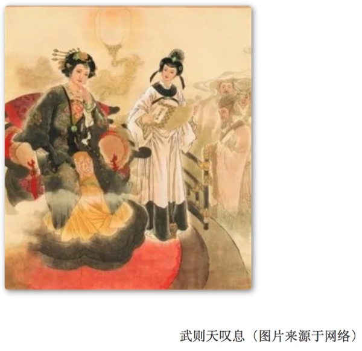
单论才华，骆宾王比王勃似有不及，但骆宾王诗文里流露出的豪气，是纯才子类的杨炯所无法比拟的。他的诗艺术成就最高的莫过于《帝京篇》，卢照邻的《长安古意》对仗严谨，是一位端庄的姑娘；而骆宾王的《帝京篇》五七言夹杂，律动性上则有点长短句的味道了。有唐一代，长篇诗自此二人始。骆宾王非常善于去发觉生活中的小细节，进而展开到一个大的境界。他看到萤火虫，写“类君子之有道，入暗室而不欺”；他看到尘埃，写“光飘神女袜，影落羽人衣”；他在狱中听到蝉鸣，写“露重飞难进，风多响易沉。”一个在作品中常常不自主就流露出一腔豪气的人竟然还能有如此细腻而敏感的触觉，实在是难能可贵。
初唐只是在唐代辉煌的艺术成就中推开了一扇门，四杰只是透出的一缕光，这光不足以耀眼，却足以惊艳。艺术总是在规则和突破之中来回摇摆，诗歌、字画莫不如此。没有规则，大家率性而发，则近于荒诞；没有突破，大家泥古不化，则近于死寂。在经历了魏晋五石散的燥热以及六朝歌舞的靡靡，唐朝恰恰是一个定规则的朝代，律诗和楷书都盛名于唐。但不能忘记的是，在老杜集大成之前，有一批人凭借才华先行突破，扩展了诗文的体裁和境界，挽救了六朝几乎死掉的诗。而这，则是我觉得四杰最值得称道的地方。
最后，杜甫说“尔曹身与名俱灭，不废江河万古流！”
但其实，这虚名的灭与不灭，又有谁能废这江河的万古流？
作者：广播站王站长 校稿：广播站王站长 编辑：泽水之岸
5.22 真实的谎言——“何不食肉糜？”
5.22.1 引言
及天下荒乱，百姓饿死，帝曰：“何不食肉糜？”其蒙蔽皆此类也。——《晋书·帝纪四惠帝》
每个人都生活在特定的圈子里，这个圈子会塑造我们的世界观、人生观和价值观，进而决定了我们对事物的认知。正如王国维先生说的“以我观物，万物皆着我之色彩”。
“何不食肉糜？”是西晋晋惠帝的名言，也是长期以来大家认为他是一个白痴的铁证。但是当我们将王国维先生的观点作为一种方法论去认识晋惠帝时，也许会看到另一番图景。
5.22.2 晋惠帝——活在另一个世界的帝王
首先来分析晋惠帝的圈子和人生观，晋惠帝九岁时被正式立为太子， “（泰始）三年春正月丁卯，立皇子衷为皇太子”。晋惠帝所处的圈子是达官显贵。而当时晋国的达官显贵们过着怎样的生活？
晋武帝每天坐着羊车找妹子，“多内宠，平吴后，复纳吴王孙皓宫人数千，自此掖庭殆将万人，而并宠者甚众，帝莫知所适，常乘羊车，恣其所之，至使宴寝。”大臣何曾每天吃饭用一万钱，还“无处下箸”；何劭一定要吃四方畛异，一天膳费二万钱；“王恺以饴澳釜”；“石崇以蜡代薪”。虽然用现在的眼光看，这是一种奢侈，可是对于一个从小生活在这样环境里的人而言，这就是生活，这就是整个世界：到处美女如云，河水里都是美酒，满山遍野都是珍馐美味，这样的世界里怎么可能有饿殍遍野？吃不上饭时“何不食肉糜？”有什么问题呢？所以他不是白痴，只是天真，只是和我们生活在不同的不同的世界。

5.22.3 皇位——黄金牢笼
建立在九品中正制之上的西晋，世家大族成为了西晋政府的实际支配者，在一个已经专制了六百多年的国家，皇权与大族之间存在着天然的矛盾，二者无法并存。世家大族为了维护自身的利益，必须限制皇权，限制皇权最好的办法莫过于打造一个对自己有利的皇帝，完成这一点必须为皇帝打造一个虚幻世界，在潜移默化中将皇帝变成自己的傀儡，这种方法在现代被称为打造文化软实力。
皇帝是几千年来中国最有权势的人，但是他们也是最可怜的人，正如钱穆先生所言，专制体制使看似高高在上的帝王落入恐惧的深渊。他们不敢与臣民直接接触，只能通过大臣来联系世界，大臣成了皇帝的耳朵和眼睛。在掌握了皇帝的耳朵和眼睛之后，大臣们可以很轻松的为皇帝打造一个楚门的世界。
回到晋惠帝的例子，晋惠帝虽然不傻，但是毕竟太天真，世界观与正常人不同，绝对不符合一个帝王的要求。对于这一点他的父亲——晋武帝很明白，至少在最初很明白，“（惠）帝之为太子也，朝廷咸知不堪政事，武帝亦疑焉。”一个“不堪政事”的太子对于皇权是一种灾难，但是对于世家大族来说是一种福音。所以“朝廷”开启了拯救“天真太子”的行动。晋书记载了一次晋武帝对太子的考核：
尝悉召东宫官属，使以尚书事令太子决之，帝不能对。贾妃遣左右代对，多引古义。给事张泓曰：「太子不学，陛下所知，今宜以事断，不可引书。」妃从之。泓乃具草，令帝书之。武帝览而大悦，太子遂安。
虽然《晋书》里只是寥寥数语，但是这几个字却透露出阵阵寒意。既然是考核，而且是“以尚书事”即处理正常公务来考核，晋武帝就不可能将题目提前交给晋惠帝，根据这段记录很明显晋惠帝事先获得考题。这表明晋惠帝身后的利益集团可以掌握晋武帝现在的想法（拿到考题）；未来的想法（不能临时加题）；对事物的判断（回答的分寸拿捏必须准确，既要不能完美到让晋武帝起疑又不能太差），能同时做到以上几点，无疑表明大臣们已经成功将皇帝至于自己精心打造的世界里。
虽然史料里只记载了一次考核，但是我们有理由相信，对于皇位继承人，考核一定不只一次。每一次通过都很困难，但是晋惠帝都通过了，只能表明这个世界的禁锢是多么严密。连平吴代魏的晋武帝都无法逃脱楚门的世界，更不用说晋惠帝。所以从体制上晋惠帝只能生活在自己的世界里，无法与正常人有相同的世界观。
5.22.4 枕边人——妻管严的悲哀还是家有贤妻的明智
史书都是由后人书写，人们往往倾向于做事后诸葛亮。正如做题一样，一道题我们百思不得其解，但是当我们看过答案之后，再来审视这道题，我们就会发现题目里处处是线索。明确了这一点之后，我们就又可以回到晋惠帝的故事了。《晋书》对晋惠帝的评价是“不才之子，则天称大，权非帝出，政迩宵人。”认为晋惠帝不仅本身能力有问题，还管不住自己的老婆，所有的坏事都是他的皇后干的。
这个观点貌似似曾相识，周幽王是昏庸，但是西周灭亡的直接责任人是褒姒；纣王是无道，但是主要原因是妲己；李自成是能力欠佳，但是快速败亡和陈圆圆脱不了干系。女人真是史学家的真爱，隔不多时就要被拿出来当挡箭牌。
鉴于此，不得不好好说一说晋惠帝的皇后——贾南风，西晋功臣贾充之女。贾南风其人，貌似对她的记载几乎都落在了如下几个批语上“妒而少子、丑而短黑、荒淫放恣。”首先说这个丑字，不太好考证，但是我看到了如下关于她妹妹的记录：
（贾午）婢后往寿家，具说女意，并言其女光丽艳逸，端美绝伦。寿闻而心动，便令为通殷勤。婢以白女，女遂潜修音好，厚相赠结，呼寿夕入。
大意是说贾午看上了一个自己父亲的属官叫韩寿，然后让婢女去和他表达了希望交往的意愿，并且说自己有多好看，然后他们就幸福的在一起了。这个韩寿不太可能是贪图贾氏的权力，因为他本身也是达官显贵之后，曾祖父做过魏国高官，同时采用私通长官女儿的方式获得权力，怎么看都有点作死，要是直接私通贾充还可以理解。所以这个故事表明，贾午至少不难看，作为同父同母的姐姐，我觉得上帝不会太不公平吧。

从政治角度而言，贾南风在晋惠帝即位后联络司马玮、司马亮杀杨骏，废杨太后；然后又让司马玮杀司马亮和卫瓘；最后又杀掉了司马玮。杨骏何许人也？杨骏的妹妹是当时的皇太后，对于外朝，杨骏“为太傅、大都督、假黄钺，录朝政，百官总己” 可谓权倾朝野；对于内朝，“虑左右间己，乃以其甥段广、张劭为近侍之职”，安插自己人为“近侍之臣”，宋太祖有句话叫“卧榻之旁岂容他人酣睡”，杨骏的做法已经是要看着晋惠帝入睡了。
这样的权臣想必晋惠帝和贾南风都不会陌生，已经安躺在司马家祖庙里的几位先人可不比杨骏差。所以无论新登基的是谁，杨骏都是必然会被清理的政治力量。这样来看这个故事是不是似曾相识?
东汉末年，大将军何进让董卓铲除宦官。结果没想到自己先被宦官狗带了，真是自己驱虎吞狼却先被狼吃了。这样一对比，晋惠帝和贾南风驱虎吞狼，最后把狼和虎一起给炖了，这样的政治手腕腻不腻害，高不高明？
就私生活而言，她的父亲出过轨，妹妹出过轨，所以在这样的家庭长大，她出轨的概率确实高于常人，但是这并不是她是一个坏的政治家的理由。但其实，纵看几千年的历史，你以为皇帝后宫里能有几个贞节牌坊么？
综上来看，对于一个这样的皇后，晋惠帝让她放手做一些事情好像并没有太大的问题。
5.22.5 结语
怀疑论者曰：晋惠帝是一个生活天真的，与大众生活在不同世界的帝王，他的工作特点使他没机会与大众生活在同一个世界。婚后，对爱人的工作能力予以充分的肯定，取得了一定的工作成绩，但是由于工作能力不足最终导致了工作单位倒闭。
作者简介
初以科研为业，现守朱门。喜忆往昔风云人物，多有异见，然无意见。欲起一笔名，思虑万千，终觉yy最为妥帖。
作者：yy 校稿：广播站王站长 编辑：智公子 图片：柴胡半夏苏
5.23 “行天的守望”系列游记
5.23.1 序章
5.23.1.1 游记的缘起
这部游记缘起于2013年清明我在人人网上所建立的同名相册，当时仅仅是为了记录下身边的一些发展变化，讲述给也许再也看不到这一切的故友。但在之后的两年里，在北京宅了十年的我突然有了一些机会，去到了世界上许多向往已久的地方，也让这个相册多少加入了些“带你看世界”的意味。2014年十一，在寄出“第四年的守望”之后，我决定把相册扩充为文章，不仅把风景装进照片带回来，也把所思所想记录下来，作为一年年的足迹，讲给她，也讲给大家。然而，世事繁杂加之慵懒过度，一直没有将这些只言片语整理发表出来；恰巧2017年末，和几位研究生的好哥们一起共创了“环境黑板报”，大家听说王站长有“听花杂记”，我有“天枫游记”之后，纷纷表示应该开个版块展现环境小爬虫们的风采，所以就有了“那些花儿——朝花夕拾”，也有了这部游记的整理和发表。
“行天的守望”这个名字来自我非常喜欢的两篇科幻小说：苏学军《沉寂的喷泉》和刘慈欣《带上她的眼睛》。前者讲述了一段跨越四十年的旅行与守望，也是“行天”这个名字的由来；后者则描述了一个被困在地心的年轻女孩通过主人公携带的全息眼镜进行的旅行，可以算是我提笔的初衷——既然你被关在地下那一方窄小的空间，就让还能“行走”的“天枫”为你讲述万安之外的世界吧。
从此用我双眼，替你看这世界； 云万里，山千叠，天尽头，城不夜。 ——《风起天阑》河图
- 巴塞罗那圣母大教堂
这不是长明的烛火，
在这里我也仅仅是名过客；
当圣乐和钟声响起，
我和章北海一样，
为所有的无神论者感到了一些遗憾。
- 罗卡角
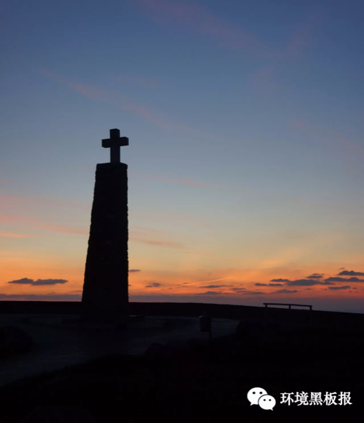
世人皆看过你阳光下的壮美，
也有人在落日的余晖中落泪；
而我愿化作这块守望的石碑，
在夜色中陪着你沉睡。
5.23.1.2 游记的组成
游记将以近些年来走过的地方为主体撰写，比如伊比利亚、日本、新西兰，也可能加入一些历史相关的私货。在未来很长一段时间内更新的应该是第一部“走进伊比利亚”的部分，按照时间划分可能包括：古罗马时期的巴塞罗那古城区，塔拉戈纳，塞戈维亚；维斯哥特时期的托雷多；摩尔时期的格兰纳达，科尔多瓦；王朝/大航海时期的塞维利亚，里斯本；近现代的马德里，巴塞罗那高迪街，法国拿破仑专题，弗朗哥专题等等。
严格来说，计划所写的这些地方，都不是以自然风光蜚声世界的；就算是在天涯海角的罗卡角，看着亚欧大陆的那最后一抹阳光消失的时候，耳边也依然回荡着卡蒙斯的诗句，心中装满了对面对着“死亡绿海”仍敢于不懈前行的先驱者们的敬意。在欧洲旅行，脱开了历史容易凭空失掉一半的乐趣；曾听到一个朋友讲，在欧洲看教堂都看的审美疲劳了，的确，除了像科尔多瓦那样风格迥异的教堂外，现今多数欧洲教堂多少都采用了传统哥特式大拱顶的结构和被人津津乐道的彩绘玻璃，那些时代间建筑风格的差别和雕工的变化一般不学建筑或者艺术的人怕也看不太懂；但每一个教堂中那段生动的历史，和里面沉睡的曾经书写历史的伟人，却赋予了他们不同的意义。
记得一次办公室里讨论说出去玩最看重的是什么，大家从食、住、行、买，说的不一而同，然后被我一句“情怀”语惊四座。我的出行最看重的的确就是“情怀”，这倒真不是妄言；似乎我决定出发前往每一个地方，不是为了“朝拜”，就是为了“最美的体验”。我会在樱花盛开的季节去日本，在枫叶始红的日子造访枫丹白露；我会在冬天刺骨的海风中看完罗卡角的日落，在一整天车程的寂寞中朝拜恩里克墓；造访格兰纳达，似乎更是为了见证伊莎贝拉和费尔南德这对真爱双王的长眠，而游览凡尔赛，我会舍弃参观路易十四后花园的时间，走进旁边小镇上那个并不算宽敞的网球场大厅，重新感受国民议会成立，大革命爆发的喧嚣。——而这一切“情怀”的必要背景，其实就是历史。追随着文明的足迹行走，即使是为了体验旅行发现、探索的乐趣，你也完全无法脱开历史；没有了那段波澜壮阔的岁月的生动注脚，城堡只是城堡，教堂只是教堂，索然无味。
所以，我会在游记中尽我所能地讲述我造访的每个景点的背景知识，让大家了解为什么我会选择这里出行，和此地带给我的感受；也即是说，在旅行的内容之外，我估计会有90%的概率强行加上自己的私货，希望不会引来太多的板砖。如果非要给这篇文章加个和旅行相关的副标题的话，“大龄文艺男青年的情怀历史之旅”可能是个比较合适的名字，那些盼着看艺术的，美食的亲们，可能要失望了（笑）。
5.23.1.3 预告 第一章：走进伊比利亚
最后给大家预告几张美图~都是第一部“走进伊比利亚”未来更新的部分，敬请期待。


5.23.1.4 作者简介
天枫，诞于秋日，幼时自取芦秋盛景为名，无比中二。后偶得益友语云：“天”做气度高远，“枫”取优雅从容；深以为然，遂以此为号自勉，沿用至今。闲来好舞文弄墨，但自读博搬砖开始少来得闲，愈发抬不得笔，常自嘲曰“十年古风圈，卅载北京城，诗无百篇熟，不敢谈国风”。而立之年痛感无为，乃与损友同创黑板报，以小编之便抢阅佳作无数，不免手痒，遂督促自己恢复笔耕，望与各位同好共勉。
5.23.2 走进伊比利亚（一）
5.23.2.1 走进伊比利亚
在13年9月飞往西班牙之前，神秘的伊比利亚半岛对我而言只是一个遥远的向往，我对她的了解几乎和大家一样的有限：《大国崛起》里面那个海洋帝国的兴衰起落，西甲那几只耳熟能详的球队，斗牛士和弗拉明戈，《卡门》和《堂吉•诃德》…而更多的近乎“野史”的知识，则是来自游戏，《大航海时代》中里斯本到波尔图的首航，《帝国时代2：征服者》里面“熙德”和瓦伦西亚的传奇，虽然是断断续续，也多少填补了一些知识的空白。
然而，在踏上那片土地之后才发现，她的历史几乎和华夏文明一样的源远流长。从B.C.6世纪的希腊，到B.C.2世纪的腓尼基-罗马，到A.D.47世纪的维斯哥特（西哥特人），到A.D.712世纪的摩尔人，再到A.D.15世纪的基督教光复战争和大航海，千年来这片土地一直纷争不断。无论是西欧的拉丁/蛮族文明，还是北非的阿拉伯文明，每一次扩张，兵锋所指就是这里；长期以来，不同的文明在这里战争、妥协，风格迥异的民族在这里争斗、融合。
而这一切，带给了西班牙人仿佛根植于血液中的热情、开放、爱冒险的特性。在我到达的第三天，UB课题组里面的colleague们就拉着我去了巴塞罗那近郊的Port Aventura（类似于北京欢乐谷，以过山车闻名），让我见识了一下什么叫“热情、爱冒险”。

在这群人当中，你不会感受到任何英美白人对待你时的那种矜持与礼貌（其实就是隐藏起来的种族歧视啦），只要你想，可以很容易的和他们打成一片。经历了千年的融合与改变，无论是狂热的柏柏尔穆斯林，还是以宗教裁判著称的西班牙天主教会，都已悄然淡出了视野；即便在宗教/文明冲突愈演愈烈的今天，我们似乎也很少见到这个天主教-伊斯兰教交锋最前沿的地区中爆发什么宗教冲突；也许，就像见证了无数王朝兴衰起落的华夏文明，可以对高喊着要“再主导世界一百年”的美国幽幽抛出一句《左传》般，历经了无数文明冲突的伊比利亚，也早已看淡了这般无谓的闹剧，宁愿把更多的精力，放在体验生活、感受人生上了吧。今天在那里，你能更多的感受到一种惬意与悠然，不管世人如何评价名列“欧猪五国”的西、葡是如何“懒散、不上进”，人家反正就那样波澜不惊的生活着，平和而美好；我想，这也是很多奋斗着的亲们向往的归宿吧~

5.23.2.2 从希腊到罗马
其实，我开始关注伊比利亚半岛的古代史，完全是一个巧合；在此之前，我对古伊比利亚除了“汉尼拔”之外也差不多一无所知。落脚巴塞罗那后不久，就被房东大哥安利说“如果对历史感兴趣可以去下加泰的历史博物馆，就在海边，周日免费”，然后欣然成行，结果仿佛打开了一扇宝库的大门，花掉了好几个周末。博物馆的设计很有意思，大厅四周是历史解说和地图，中间区域会还原一些当时的建筑、农业、工商业情况（比如下面图中这个反映古伊比利亚人生活的小角落）。大概就是在这里，我被科普了伊比利亚从上古到罗马时期的很多历史。
抛开漫长的远古时期不说，伊比利亚早在罗马人登陆之前，就已经搭上了文明的航船。B.C.6世纪，希腊人和腓尼基人先后向此地扩张，希腊人从意大利—法国一线南下建立了滨海的城邦Empuries。
腓尼基人则是从非洲北进建立了诸多沿海商站，但都没有留下文字记载。真正有记载的从北非向伊比利亚的第一次扩张，来自第一次布匿战争后的迦太基人的北进。B.C.3世纪，在第一次布匿战争后期崭露头角的迦太基将领哈密尔卡•巴卡（Hamilcar Barca，汉尼拔的父亲）来到加泰罗尼亚地区，并用自己家族的名字称那里为Barconi，这个名字随后被罗马人使用的拉丁语沿用，并最终流传下来成为了今天的Barcelona。在今天的瓦伦西亚地区，迦太基人还建立了新迦太基城，也是第二次布匿战争双方反复争夺的据点和著名的“汉尼拔远征罗马”的起点。
布匿战争(Punic War)是罗马文明和腓尼基人建立的迦太基文明之间爆发的一场前后达百年的争夺地中海霸权的战争，从B.C.3世纪中期开始，共进行了三次。历史上最著名的便是第二次。
B.C. 219年，哈米尔卡的儿子，著名的“战神”汉尼拔率军围攻伊比利亚半岛上与罗马结盟的城市萨贡托(Sagunto)，成为第二次布匿战争的导火索。战斗力爆表的汉尼拔没等罗马人发难，率先于B.C.218年4月开始了对罗马的远征。他的军队在五个半月的时间内行军1600余公里，在隆冬翻越了冰雪覆盖的阿尔卑斯山进入意大利，一路所向披靡。然而，一支罗马舰队走海路登陆，直接抄了汉尼拔的老家0.0。
B.C.211年，萨贡托被罗马收复，B.C.209年，伊比利亚最重要的据点新迦太基城被罗马攻陷， B.C.204年，大西庇阿在迦太基本土登陆并于B.C.202年在扎马会战中击败了回救的汉尼拔，结束了其不败的战绩，迦太基也就此崩盘。
在击败迦太基人后，罗马人在伊比利亚半岛建立了行政区划并实行了统治，B.C.2世纪开始，各聚居区的人口开始增长，拉丁语和罗马文化开始大规模进入伊比利亚。罗马人在伊比利亚东部的各个河口地区修建了很多城邦，并在之后的数百年间将其不断扩大，这其中就包括巴塞罗那和塔拉戈纳，后者还是罗马帝国开国皇帝奥古斯都远征伊比利亚北部山区时在西班牙的治所。之后，随着河流入海带来的填海效应，曾经的罗马古城逐渐被埋入地底，成为了久远的记忆。但今天，我们仍可以跟随考古工作者的脚步，深入到地下，去探访那些两千年前的古迹，寻找那个逝去的罗马的荣光。
5.23.2.3 寻找逝去的罗马
不管迦太基的巴卡家族的故事是如何的传奇，以他们家族名字命名的巴塞罗那最早的痕迹还是只能追溯到罗马，这可能要归功于罗马人传奇的石工技术吧。与大爱木制建筑的东方不同，罗马人在运用石头的方面可谓是技能树点满，笨重的巨石，精美的大理石，在《建筑十书》的指导下，在两千年前的上古岁月里，便构筑出了可以伫立千年的丰碑，留下了在之后千年的岁月里无论风吹日晒、战火侵袭都无法磨灭的罗马的痕迹（对比东方，“楚人一炬，可怜焦土”）；也使得我们在今天，仍有机会触摸这个上千年前的文明所留下的真实。说来也可笑，身处古老文明发源地中国的我，甚至还没有到过长安，碰触过“汉”的光辉，倒是先跑到了这千里之外，曾经罗马帝国的边陲，计划起瞻仰别的文明的遗迹来了。
不过，巴塞罗那在罗马时期实际上只是一个不大的小镇，并没有留下像塔拉戈纳那样恢弘的遗迹，时至今日，那个曾经的小镇早已被埋入地下，上面坐着一整座巴塞罗那的老城区，这个寻找又从何开始呢？
林达的《西班牙旅行笔记》里曾有提过一座考古罗马遗迹的历史博物馆，似乎是一个好的选择，但这个“巴塞罗那历史博物馆”隐没在老城区的千街万巷间，地图上的标注也模模糊糊，找到它也绝非一件易事。不过，也许是罗马的石头有种奇怪的魔力（对历史控的吸引力吧0.0），在一次以造访巴塞罗那主教堂为目的的周末“转悠”中，居然让我意外的发现了它。至于具体的入口么，我只能说今天已经记不大清楚了。只记得是先抵达了下图中这个著名的主教堂（在流浪者大街附近），从教堂左手边的小路进去，经过教堂之后左转到达Placa del Rei（国王广场，就是下图中这个广场），广场四周的建筑很多都是历史博物馆的可参观项目，罗马古城的入口也在广场四周的某个我已经记不得的门里，就留给大家自行去发掘吧。实际上，站在广场上你就已经站在罗马古城的上面了，那薄薄的一层土，几块石砖，便是你和罗马几千年的距离。

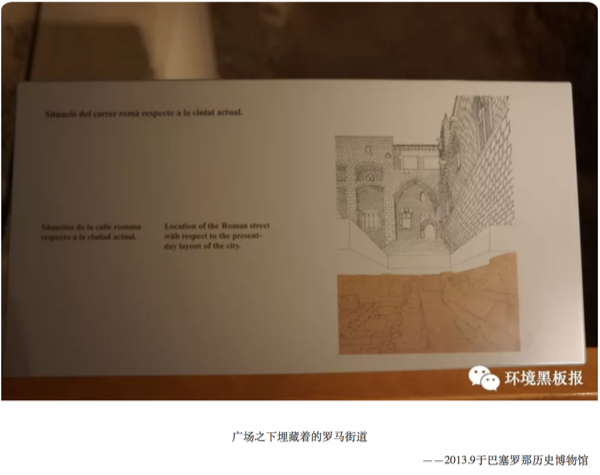
在买票进入博物馆的地方，是有多国语言的讲解器可以租的，如果有时间仔细逛的同学建议还是租一个中文或者英文的，因为可爱的加泰人经常是先写了加泰语，然后想了想在下面补上一段西班牙语的翻译，然后就把英语忘了0.0。在博物馆地面层展出的主要是一些各时期巴塞罗那城的复原模型和发掘的文物，地面建筑还包括了A.D.14-16世纪阿拉贡王国的王宫建筑，不过都不算是本次寻访的重点啦。
走过地上部分，会有一个非常窄小的单向下行的电梯带你深入地层，有意思的是，这个电梯并不显示层数，而是从现在的年份一路追溯回B.C.215；电梯门打开，你会发现自己已经赫然立于千年前的罗马遗迹之间。为了避免参观者影响开掘工作，博物馆在遗迹之上修了一些悬空的巷道，供大家穿行于遗迹之间，而遗迹的复原图、开掘出来的谷物、器皿就装进展柜点缀在巷道两旁。

目前开掘出来的范围其实并不大，主要就包括A.D.2-5世纪镇上主大街两侧的一些建筑，包括教堂、商店、洗衣房、酒厂、咸鱼作坊（0.0），值得注意的是，这里并没有兵营、执政官住所、市政厅这样象征罗马统治的地方，估计巴塞罗那在罗马时期的地位，应该远比不上南面的塔拉戈纳（今天却完全反了过来，塔拉戈纳变成了小镇）。
不过即便在这样一个小镇上，也能看到罗马逆天的建筑技能：很多房屋都有两层，拥有牢靠的石头地基和承重墙，在主干道上还有可辨识的下水系统！而在同时期，欧洲很多地方的人们还在住茅草和黄泥糊起来的房子里吧。
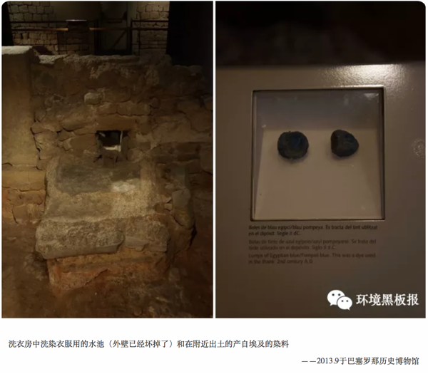

用盐来腌制捕获的鱼可能是香料传入欧洲前最为常用的长时间保存食物的方法了，但是为了不腐坏而放进大量的海盐，想必那鱼不会是什么珍馐美味0.0；值得一提的是，图中那些陶罐本体真的非常大，估计能钻进去一个人，并且在作坊里和酿酒厂里都大量被使用，罗马人智慧地在地上挖出半圆型的坑，这样可以把陶罐直接座进坑里面，之后可以引水进来降温或者在底下架设加热装置，这也许是最早的控温发酵措施了。
穿过这几个建筑，再走过一条暗仄的城墙巷道，在地底的旅行也将告一段落，不过，下图中的这条巷道可能是你为数不多可以碰触到城墙石砖的地方，而这一段城墙，将会穿透地层，和我们在下一节中继续相遇。

5.23.2.4 历经千年的城墙
重新回到地面，找到下面的这座高塔，便是巴塞罗那寻古之行的最后一站“老城墙”了。穿过高塔下的拱门，是一方不大的广场（Placa del Ramon，以中世纪时加泰罗尼亚伯爵拉蒙•贝伦戈命名），广场的另一侧，便是车水马龙的大街和18世纪之后的建筑了。
这段罗马的城墙，便是巴塞罗那古城东侧的尽头。说来也巧，两次走到这方广场，都是傍晚时候；太阳已经落到楼宇后面很久，走的人困马乏之后，能坐在小广场的长椅上掏出带着的Sangria（西班牙果酒）喝上两口，静静的看着面前街道上的人来人往，等到华灯初上去坐地铁回住处（边上就是1号线Jaume站），颇有一种走过千年沧桑看淡一切的悲凉。
在城墙的最底部，罗马人留下的刻字依稀可辨，再往上，中世纪的城墙就垒在罗马古城墙的上面，似乎是也不在乎根基是否够牢靠；再往上，便是王朝时期的建筑和高塔，就这样一层层，硬是在地面上垒出了年代地层的感觉。只可惜，这面前后砌了上千年的城墙并不能走得太近，所以更多的人，只是在这里停下，喂喂鸽子，喝杯咖啡，瞻仰下贝伦戈的铜像（不得不说，从雕像上看贝伦戈家族的人长得比帝国2里面画的帅多了），然后重又返回车水马龙的大街，去过千年后的生活了。
走过整个巴塞罗那的老城区，回头想想其实地方也不大，从南侧的尽头平行线大街（Ave. Parallel）走到北侧城墙这里，大概用不到半个小时，不过，也许是中间引人逗留的地方太多，似乎每次从Parallel走过来，都花掉了整整一个下午。罗马的，中世纪的，王朝的，太多的历史纠葛在一起，让人眼花缭乱；然而，真正属于罗马的，其实只有很小的一块。
或许，寻找那个逝去的罗马，巴塞罗那并不是一个最佳的选择（那个说得去意大利的，就是你，出去！别让我看见你！），从巴塞罗那的Nord车站出发，坐火车南行一个小时，便是寻访罗马的下一站，奥古斯都时期西班牙的治所——塔拉戈纳。

5.23.2.5 预告 塔拉戈纳
塔拉戈纳，一座现今人口只有16万的海边小城，却是当年奥古斯都时期整个伊比利亚的治所，甚至一度成为整个罗马的政治中心。竞技场、战车赛道、古城墙、神庙遗迹点缀在山坡之上，诉说着流传千年的传奇。说实话，去之前真的没有预料到，一场说走就走的旅行，能让我遇到了堪称近年来走过的最美小镇之一。

5.23.3 走进伊比利亚（二）
5.23.3.1 说走就走的旅行
老实说，对塔拉戈纳的拜访是一场“说走就走的旅行”。
虽然在上一篇里说到塔拉戈纳是寻访古罗马的好去处，一副看过加泰历史博物馆后早已计划好的样子，但实际上伊比利亚半岛上我造访的众多景点中，唯独塔拉戈纳是完•全•没•有•计•划•过•的。
这个地中海边的小城，人口只有16万多(巴塞罗那300多万)，一般出现在“巴塞罗那周边可去的景点”这样的条目里，中文的介绍少的可怜;不过，只能说是非常幸运地，十一月的一个周六，在我缩在住处包饺子炖肉储备粮食的时候，紫慧妹子突然到访;当谈起我寻访罗马古迹的计划的时候，妹子推荐了她读书的塔拉戈纳，并自荐作为导游，于是约了第二天欣然成行，并成功地在完全没有准备的情况下进行了一次对这个地中海小城的“深度探访”。
周日的早上是巴塞罗那惯例的蓝天白云，风风火火地赶到Nord车站，在妹子的电话遥控下买了区间城际上车出发(往返只要15欧的，比小火车或者SNCF的列车便宜好多);从巴塞罗那到塔拉戈纳的铁路基本完全靠海而行，所以果断选择了运行方向左侧靠窗的位置欣赏风景，沿途的地中海沿岸风景还是很不错的，但为了给相机省电就没有照相了(这个时候已经经历过去枫丹白露时相机半截没电的尴尬了，长记性了)。
塔拉戈纳是从加泰南下格兰纳达等南部城市的必经之路，车行只要1个小时左右。到达的时候导游小同学还没到，所以得空在车站周围转了转。
虽说是个重要的铁路站点(好歹也是塔拉戈纳大区首府)，但车站真的不大;月台就设置在海边，下了车穿过一个小小的车站厅就是大街。因为已经是11月初，小镇的游客相当稀少，每一趟车过来，只有寥寥十几人下来，很快便消失在附近的道路尽头;靠在车站的外墙上，看看对面卖烤红薯的小哥(没错，是卖烤红薯的，我还走上前去确认了一下，不过人家不愿意让我照相，估计是无照经营吧，笑)，看看来往的车流、高大的棕榈树，有一种逛欧洲小镇的特有的惬意。
沿着海边的公路向北，爬上一个小山坡，便可以看到海边的铁路和公路，以及绵延的海滩。
因为天气已入深秋，此行的主要目的又是罗马古迹，所以也没有在海滩上花费时间，紫慧妹子到了之后，便径直前往罗马古迹，开始一天的探寻。


5.23.3.2 行走在遗迹间
塔拉戈纳依山傍河而建，从海边开始往内陆，地势是依次升高的，由于公交和租自行车都不太方便，所以我们选择了“行走”，老实说，一天下来还是蛮辛苦的，脚力差的亲们要做好思想准备。塔拉戈纳的所有罗马遗迹可以买一张通票(包含了2000年纳入世界文化遗产的4~5个地方)，具体价格已经不记得了，反正当时蹭紫慧妹子的学生证买到了优惠学生票:P。
从车站出发，向北步行不到一刻钟，便是塔拉戈纳最著名的罗马古迹——古竞技场;说到这里要咬文嚼字一下，圆形竞技场(amphitheater)，不是那种非常有名的的古罗马斗兽场(colosseum);两者的直观差别嘛，你要问一个玩《文明》的小伙伴，他会告诉你前者是加文化的，后者是加快乐的0.0;其实我觉得这样解释还是蛮到位的:P，因为说到底就是前者还有些theater的作用，后者则完全是角斗士堵上性命取悦“公民”主子的场所了。具体到建筑外形上，实际并没有太大的差别，一样的拱形外墙，一样的阶梯式看台，一样的比赛场地。
不过，颇为可惜的是，塔拉戈纳的竞技场原貌保存的并不是非常的完整，四周的拱形结构已经基本亡失殆尽，中间场地又在维斯哥特人时期垒起过一个教堂(大概石材就取自周围的拱形外墙吧，柏柏尔人入侵的时候又给拆了)，所以站在场地中央体验角斗士视角的机会怕是没有了。
参观路线大部分是在搭建起来的行人通道上，沿着外圈绕场半周后，再通过原来角斗士入场的拱门进入竞技场中间的比赛场地。除了细沙铺成的地面外，比赛场地中央还可以看到一个十字形的沟，据说是原来的“员工通道”，方便奴隶们在底下穿梭清理场地，比赛时会加盖木板。
坐落于场地中央的教堂严格来说并不算大，修建在一圈围墙的中间显得有些逼仄，不得不感叹一下后世的“野蛮人”们相比于罗马，建筑技能还是差了太多。在教堂的一侧，一些石棺结构清晰可见，应该是天主教夺回西班牙后重修教堂时用作了墓地，不过也没有听说里面葬了什么有名望的人就是了。看过教堂，对竞技场的参观便也算告一段落了。
从场地中间向北，便可离开竞技场。值得一提的是，加泰地区对于历史遗迹的处理，基本都是“考古挖掘-原位展示”，通常不会进行任何形式的修复，所以遗迹看上去真的只是断壁残垣的遗迹，这一点我其实是蛮喜欢的，特别是独行探寻的时候，闭眼想象原貌的雄伟壮丽，睁眼面对现世的沧桑凄凉，也算是“历史之旅”中最值得体会回味的一点了吧。
离开竞技场往北，路过一个罗马人留下的葡萄种植园，向着小镇方向连攀两层台阶，便可到达半山腰的位置。一路上，凉亭和棚架上都装饰着许是茉莉的紫红色的小花，一团团一簇簇甚是繁茂。到了半山腰，穿过一个环岛，便是罗马古迹的第二站——环形赛道了;相传是奥古斯都时期开始用来赛战车的。
宽阔的赛道完全由石块垒成，宽度至少可以并排跑4匹高头大马。14世纪，住民在原有罗马赛道的拱顶之上，又建立起警戒塔，要塞等建筑，从而把赛道大部分埋入了地下，变成了供士兵转移的地下通道。看到这里，便又想起了巴塞罗那老城区那段叠起来建的城墙。而和巴塞罗那同样相似的，这里你也可以走入地层之下的罗马遗迹间，触摸千年的历史;而攀援到上面的要塞里，则能欣赏到绝佳的海景。

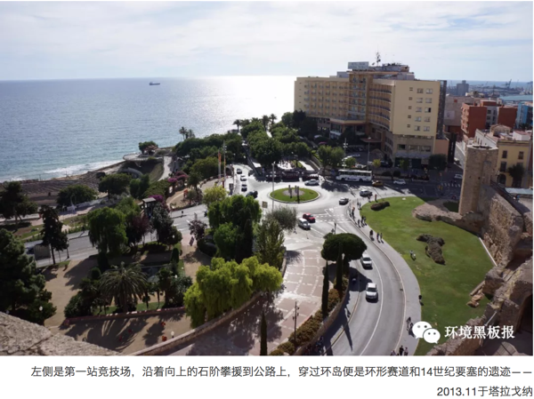

离开赛道的遗迹，第三站是罗马古城墙。作为奥古斯都时期西班牙的治所，罗马时期的塔拉戈纳城市规模很大。从海边起，城墙绵延延伸，将执政官邸、兵营、港口等建筑悉数围在墙内(除了竞技场是在城外)。和巴塞罗那一样，后世的城墙沿用了罗马时期的地基，如今我们看到的，已经多是14世纪的砖石了，然而伫立在城门口的青铜雕像，仍提醒着我们这座治所之城曾经的归属。
半是环城的城墙绵延数里，想要全走完是不大现实的，我们走了大概一半便开始折返。路边，一侧是矮墙，可以算是outer ring，一侧则是高耸的内墙和戍塔。城墙外，是塔拉戈纳的新城，靠近城墙处还有一个战争博物馆，但时间原因就没有造访了。

5.23.3.3 最早的领袖崇拜
从西城门回来后，小导游同学已经不太走的动了，两个人有点挣扎的走到最后一站——中心大教堂——的旁边后，决定坐下来吃点东西。
得益于紫慧的西语能力，我算是吃到了西班牙旅行中唯一一次西式正餐：塔拉戈纳的特色沙拉，起司焗鳕鱼，烤面包，果酒，别的就不大记得了(在巴塞罗那还是去下过馆子的，但出去玩的时候一般都是三明治之类的解决)。
餐馆就在教堂前的广场边，没有什么游客，一边吃一边看着广场上的小朋友玩闹，有一种逛历史小镇所独有的惬意。城市中心的这个大教堂并不是罗马时期的建筑，但却是坐落在原来奥古斯都神殿的遗址上。在教堂花园周围环廊的房间内，陈列着出土的神殿石柱碎片，通过还原图，还依稀可见当年的恢宏。

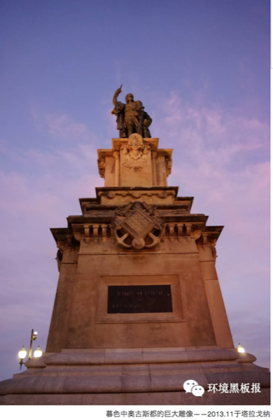
私货预警
说到奥古斯都的神殿，可能有人会奇怪为什么要把一个皇帝供到神殿里面去祭拜。然而，在“上帝”出现前的漫长岁月中，将人物神化的“领袖崇拜”(ruler cult)其实一直是支撑人类信仰体系的重要组成部分之一。如德·库朗热所说：维持罗马帝国的根本不是武力，而是它所激发出的一种虔诚的赞美之情。
在民众中受到憎恶的统治方式，竟能维持五个世纪之久，让整个欧洲一亿人俯首帖耳，这仅仅依靠帝国的区区三十个军团是无法做到的。更多人服从的原因，是对罗马帝国荣光的向往与敬畏。而皇帝，便是罗马伟业的人格化象征，他就像神一样受到全体人民的一直崇拜，在他的疆域之内，即使最小的城镇也设有膜拜皇帝的祭坛。
在基督教以前的许多年里，几乎整个罗马-高卢地区，都建起了纪念奥古斯都皇帝的神殿。在将神祗虚化的一神教产生之后的岁月中，这种信仰仍在民众中大行其道。虽然今天大多数支配着人们头脑的大人物已经不再设立圣坛，但他们的雕像或者画像也曾一度广泛地存在于他们的赞美者手中。
纵观历史，无数的政治领袖、艺术高人都曾让自己雕像撒遍全国;到了二战前后，很多专制政权的崛起，都依托于对本国领袖人物的狂热崇拜。马列，希特勒/斯大林，本子的天皇都是个中翘楚，而今天，你在三胖那里看到的朝鲜人民对金家王朝不可理解的狂热追捧，不过是这一已经随着时代慢慢退环境的信仰模式的另类写照罢了。
我想，今天已经不大会有人在家中供奉某个人物的画像/雕像了，但人们头脑中的偶像仍然占据着不可撼动的地位。说来，出游葡萄牙的第一天，我便忍受了一整天车程的寂寞造访了巴塔利亚修道院，只是为了恩里克墓前的那一拜，这可能也算是一种对偶像的执着吧。
私货结束
本章有关罗马的部分也结束了。
5.23.3.4 地中海边的小城
走出教堂环廊，结束了最后有关的罗马参观之后，已是斜阳西挂。其实，若是抛开罗马的部分不谈，塔拉戈纳本身也是一座非常恬静的海边小城。老城的石墙、戍塔、教堂，新城的宽阔街道和多彩的房屋，在11月清冷的海风中，诉说的是一种别样的韵味。
记得我们进入教堂的时候，已是下午，上午弥撒的人流早已散尽，教堂的大厅和环廊里格外的静，听着自己的脚步叩响在空旷的大厅和庭院里，感受阳光逝去后的阴冷和空灵，对内心的冲击的确是巨大的。我想，若非身边还有个带一抹亮色、不时活跃一下气氛的小导游，而是一个人走在这样的厅廊里，听到前世之人的呢喃我也是不会感到惊奇的。
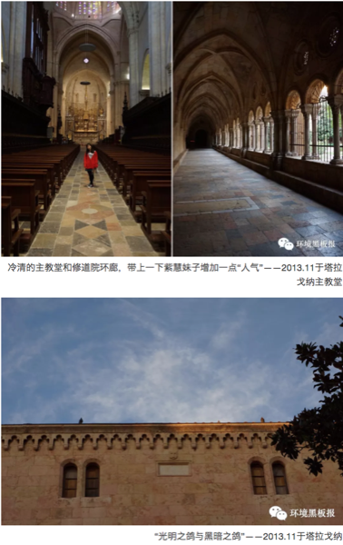
在秋冬之交的时节，地中海日落后天色暗的格外迅速，离开教堂沿着大路返回海边时，身边已是华灯初上。然而，远处海边的晚霞与彤云却格外地绚丽，给我留下了难以磨灭的记忆。下面这张照片曾长久地作为我笔记本电脑的桌面背景(而罗卡角的日落则长久地作为我手机的背景，看来我对“暖阳与深海的重逢”还是格外的偏爱啊，笑)，记述着当时混杂了惊叹、苍凉与宁和的奇特感受。
有人说，诗是穿越千年的心灵相通;当你面对某个景色，回想起一句诗时，感觉突然就对了;而我想说，虽然搜遍脑海，也不能给这个景色配一句诗(古人好像没谁有机会看到海边的落日好吧…)，但所幸有照片，留住了那个时刻内心最“对”的触动。有时候，白天的小镇、阳光、海浪和沙滩，快乐的心情与亮丽的风景，并不是旅游的全部;日暮、长夜、萧萧落木，反而更像是历史之行的深刻注脚吧。
5.23.4 走进伊比利亚（三）
5.23.4.1 路过马德里
虽然是“寻找逝去的罗马”的终章，但塞哥维亚其实是我2013年圣诞假期旅行的第一站——我想这也许是一种对罗马传奇石工的向往吧。林达在《西班牙旅行笔记》曾打趣说，看过塞哥维亚的水道桥，飞往西班牙的机票便值回了票价，也不免让人对这座被纳入世界文化遗产的小城憧憬连连。
塞哥维亚坐落于马德里西北约80公里，我当时从巴塞罗那出发，坐的是去往马德里的夜巴士（B-Nord→M-Principe Pio，大概8个多小时，中间停两次），抵达马德里后就在车站里转乘北上的巴士，票价大概十几欧的样子（不过听说2015年之后赴塞哥维亚的巴士换了始发站，可能没有那么方便了）。夜巴抵达马德里是早上7点半，12月底天亮的格外晚，马德里又是小雨，整个城市仿佛都在沉睡。Principe Pio是个很大交通枢纽，火车站、地铁站、长途车站建在不同楼层，好在我只是巴士换巴士，紧赶慢赶买上了8点北上的车票，跳上另一趟车便又沉沉睡去了。
再次醒来已经是临近目的地，然后登时为清朗的天气惊呼了一声。雨云应该是刚刚离开塞城，留下的是云淡风轻的清爽和一片醉人的蓝色。跳下车子的时候还不到9点，太阳也只是刚刚爬过了屋顶，对于10点上班1点吃午饭的西班牙人来说还是刚刚起床的时间。走出车站，空旷的大街格外冷清，冬季本来就是旅行的淡季，一般最早的旅行团要在10点之后才会到达，在那之前，街道和水道桥仿佛都是属于我一个人的，想到这里，便裹紧大衣加快了脚步。
5.23.4.2 伫立千年的水道桥
沿着干道走上不到500米，巨大的罗马水道桥便映入了眼帘。不得不说，第一眼看到它所带来的震撼时至今日依然记忆犹新。远远看去，塞城的老城区像一枚橄榄，坐落于一个岩石山上，而水道桥便从橄榄的一端，横亘过整个山谷，延伸向远处的山坡。其实，Aqueduct在中文翻译里面一般是“高架渠”或者“输水道”，“水道桥”是标准的日语；只不过碰巧三个字都是汉字，而“桥”这个字又恰如其分的描绘出横越山间的那种气势，便被我借来做了名字。
水道桥最高的地方有28米，大概十层楼那么高。当然，仅仅用宏伟两字并不足以形容它的全貌。他是建筑，更是艺术；上下两层的拱顶结构，线条柔和，比例适度，既充满的你的视野，又为远景加了足够的“透明度”，使得它远看上去，优雅而空灵。
水道桥的下方是炮兵广场，被水道桥分成了两侧。一侧可以走车，游客中心和象征罗马统治的狼雕像便立于道路两侧。另一侧则是步行广场，广场的角落里有一家米其林三星餐厅Condido，售卖蜚声世界的“塞哥维亚烤乳猪”。餐厅自 1786 年开业至今已两百多年，曾接待过西班牙国王卡洛斯以及众多大牌明星和要员。餐厅里面是典型的西班牙装饰风格，即便不吃饭，光是欣赏一下内部装潢，其实也算是视觉上的盛宴了（然而是听说的，我并没有进去>.<）。
走到近处仔细端详，可以发现水道桥完全由巨石垒成。之所以说垒而不是砌，是因为罗马人在石块之间没有使用任何的粘合剂，就这样一层层，一块块，严丝合缝，堆到了十层楼的高度，伫立了两千年！据说，这条下水道一直使用到19世纪，直到压力自来水系统接通，才被放弃。想想从远处雪山上汇下的清流，就这样在28米高的水道桥中哗哗流淌了两千年，这样的“良心工程”，怕是要叫任何一个做市政工程的人汗颜。
塞哥维亚最早的定居记录可以追溯到B.C.75年，而到公元元年前后的奥古斯都征讨伊比利亚时期，也只能算是罗马帝国在伊比利亚的边陲。而就在这片边陲的土地上，全长813米，由148个拱组成的水道桥拔地而起，不由得让人感叹，罗马人真的是把伊比利亚当成了帝国的疆域在建设，并且是手把手的，把西班牙领进了文明的殿堂。在罗马人维特鲁威的《建筑十书》中，对水道桥的建设有着颇多的描述，从水脉探查，到水质检验，到主体构筑，其理论程度之高，让人很难相信这是两千年前的著作。写到这里，突然又回想起当时看“失落的军团”纪录片时看到秦帝国流水线军工生产时的震撼，也许提起“文明”这两个字，我们并不能比两千年前这一东一西两个帝国写出更多的注解。
5.23.4.3 老城的街巷
在水道桥北侧尽头沿楼梯攀援而上，便是塞哥维亚的老城区了。在罗马人之后，塞城一度被由法国南下的凯尔特人占领，又在摩尔人的入侵中被遗弃，直到11世纪被阿方索VI世收复。阿方索为塞哥维亚修建了完善的环城外墙，修复并增强了摩尔人留下的阿尔卡扎城堡，使得老城有了今天的模样；而在之后天主教统治西班牙的岁月里，塞哥维亚一直作为重要的军事和宗教城市，和几代卡斯蒂利亚王朝的首都，维持了长久的兴盛。
与大开大合的水道桥不同，塞城的老城区建筑的非常紧凑，从橄榄的一端水道桥上来，走到橄榄中心的大教堂，只要大概20分钟的时间。老城的建筑多是下图的这种米黄色，看上去有一种说不清的恬静感。沿着老城的街道，有售卖各种食物、水果、纪念品的小店，而因为“烤乳猪”的闻名遐迩，纪念品也多是小猪存钱罐的样子，颇有一种呆萌的趣味。
大教堂前是一方不很大的广场，名字是西班牙最常见的马约尔，但其实Mayor就是Major的意思，所以想来只是对市中心最大的主广场的称谓而已。时间还早，广场上没有什么游客，只有一对新人在拍摄婚纱照，跨过广场便是有“教堂中的贵妇人”之称的塞哥维亚主教堂了。这座教堂是西班牙兴建的最后一座哥特式教堂，大名鼎鼎的伊莎贝拉女王（统一西班牙，资助哥伦布西行的那位）的加冕仪式，就在这座教堂和前面的马约尔广场上举行。
大教堂由主体大厅，修道院花园和钟楼组成，颇为雄伟，以至于在附近的任何一个街巷都很难拍摄到它的全貌。主体大厅是三层三进式的，在大厅的正中还有一个许是用来布道或者举行教会会议的长方形场地；绕过这片场地，则是供奉圣母雕像的穹顶。作为西班牙最鼎盛时期的代表作，大教堂在建筑中丝毫不吝于黄金和宝石的使用，让人在惊叹之余，不禁也浮想联翩：这金碧辉煌的装饰中，不知是否有来自特诺奇蒂特兰的宝石和黄金呢？
教堂的修道院部分只开放了回廊，钟楼转了转也没有找到上去的地方，便没有更仔细的游览了。但是，修道院花园的构筑形式和米白色的石砖，却带来了非常奇特的恬静感，硬是把我在回廊里留了近半个小时（才不是因为走累了看见凳子了呢，笑）。钟楼的建筑形式有点接近塞维利亚的主教堂，但是要稍微小一些（塞维利亚大教堂是西班牙最大的，钟楼高80多米，这个也就60米吧），绕过钟楼从侧门出去，便离开大教堂了。
5.23.4.4 荒凉之地的“阿尔卡扎”
沿着老城的街巷再往西北走不远，四周的建筑便会迅速的褪去，与你隔着一个广场相望的，便是赫赫有名的阿尔卡扎城堡了。各种介绍上都说，这个城堡是迪士尼白雪公主故事中城堡的原型，但其实我真的不大记得白雪公主城堡长成个什么样子了…不过，眼前的阿尔卡扎城堡的确美不胜收。巍峨的主楼，圆形的角塔，青色的屋顶与米色的砖石相得益彰，在蓝天绿树的映衬下真的有那么一点童话的意味。
传奇固然美好，但是城堡毕竟还是作为战略防御设施存在的。历史上阿尔卡扎城堡一度是卡斯蒂利亚几代王侯的宫寝，在之后哈布斯堡王朝的战争岁月里，被作为重要的炮台和炮兵学院使用。今天在城堡的展览中，仍可见阿方索十三世的战戟、“双王”伊莎贝拉和费尔南多的宝座和各式骑士及“西班牙征服者”的装备。
城堡建于埃雷斯马河（Eresma） 和克拉莫雷斯河（Clamores）汇流处的岩石峭壁之上，属于战略要冲之地。但观望之下我并没有发现这两条有名字的河流在哪里，城堡外围的护城河也是干涸的，也许在冬季干旱的日子里多是断流的状态。城堡的四周除了几个大一些的修道院，其实相当的荒凉，向西、向北都是广袤的平原，在冬季里几乎看不到什么绿色。向东是隔着一片平原，可以遥望瓜达拉马山脉的雪顶。
城堡内有两个庭院，但因为特色有限没有逛多久，游览城堡的大部分时间，都被我花在了武器博物馆和主楼的屋顶上了。主楼的屋顶需要额外缴费进入（2€），推荐有时间的人一定要上去一趟。我去的时候时间尚早，站在顶楼上眺望老城区，多数旅行团还在从主教堂向这边“赶路”。顶楼的风有些大，加上太阳正好躲入了头顶厚厚的云层中，12月底刚下过雨的卡斯蒂利亚平原展现出了清冷、荒凉的一面。好在我提前从城堡外游客中心买了热咖啡倒进了保温杯，得以让我从容的站在冷风里，隔着整个老城与远处的瓜达拉马山的雪顶对望，感慨一下两千年历史的飞逝，和这份苍凉带来的凋零的力量。
作者：天枫（栟） 编辑：天枫（栟）
5.24 历史中的国学
现今国学兴盛，一些国学课已经进入一些学生的课堂，学生身着汉服跪拜老师，诵读《论语》经常见诸报端，关于国学的电视节目也是五花八门。但是何谓国学？貌似没有人说的清楚。百度百科给予的解释是：国学，是以先秦经典及诸子百家学说为根基，它涵盖了两汉经学、魏晋玄学、隋唐道学、宋明理学、明清实学和同时期的先秦诗赋、汉赋、六朝骈文、唐宋诗词、元曲与明清小说并历代史学等一套完整的文化、学术体系。这个定义涵盖面很广，以至于根本无法称之为一个定义。这也体现出我们对国学认识的混乱。了解什么是国学，也许历史会给我们答案。
5.24.1 第一章 先秦岁月
周武王姬发汇集诸侯大军浩浩荡荡向朝歌开进，一个新的王朝诞生。
周王朝建立对于中国具有划时代的意义。它将宗法制引入了中华大地，这一制度构建了人与人的关系，人与国的关系和国与国的关系，成为了日后中国社会的基础性规则。宗法制简单而言，嫡长子构成大宗，大宗由嫡长子继承，其他子嗣构成小宗；而后小宗再分出小宗，下一级小宗对上一级大宗有支持义务，上一级大宗对下一级小宗有保护的义务。
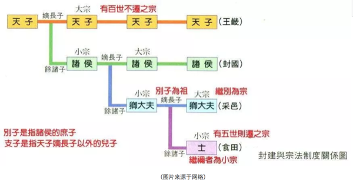
周王朝建立之后，周王室将大量的土地册封给了王室成员，这些成员成为了小宗。但是这种册封只是发给小宗一张支票，需要他们自己去受封地兑现。兑现的形式只有一种——抢。（谁说的中华民族自古以来爱好和平？）西周初年册封的故事一般是诸侯从周天子处拿到册封的命令，率领自己的族人，有时周天子会将自己治下的一些臣民交给他们，诸侯率领着这支大军开赴自己的领地并将这片土地上的原住民或驱逐、或奴役或同化。诸侯国最初是一个城市国家，诸侯在领地上筑城，这个城市里的人就是《春秋》所言的“国人”，城外的人就是“野人”。
随着人口的繁衍，诸侯会将自己的小宗再次册封为大夫，大夫会率领自己的族人继续上面的故事。经过几代的繁衍，各个诸侯国渐渐从一城即一国的城市国家成长为拥有很多城市的疆土国家。显然，这是一种殖民过程，而宗法制的存在使得殖民地与母国之间存在从属，成为了中国可以形成中央集权国家的基础。希腊文明和罗马文明在扩张之时也开启了殖民过程，但是希腊人殖民形成的子城市对母城市没有从属义务，双方虽然具有共同的文明和起源，但是在法理上却全无义务。所以希腊一直停留在城市国家。因此，封建宗法制使得中国形成了不同于西方的文化和政治体制，构成了中华文化的核心。
宗法制度的核心纽带是血缘，所以宗法制度必然引申出的道德要求是孝道和集体主义，行为规范是尊卑长幼。这种封建道德被儒家总结为“君君臣臣父父子子”“为尊者讳为贤者讳为亲者讳”。在宗法制下，国即是家家即是国，对于父母的孝道即是对于国家的忠诚，对于兄弟的爱护即是国与国之间的外交。而家国不分的体制必然造成了中国人以人治代替法制，以道德代替法律。
宗法制度在一定程度上是一种殖民的有效手段，使得周人在几百年间就可以统治整个中华大地。当周围有大量的土地可供殖民时，下一级的小宗可以通过殖民获得土地和收益。当周围没有足够的土地，而人口依然在繁衍时，宗法制度就迎来了挑战。宗法制度要求大宗将土地分封给小宗，最初只是大宗给小宗开空头支票，小宗从隔壁银行兑现（抢），现在隔壁银行都倒闭了。可是维持宗法制度，大宗还需要开支票，此时只有一个办法——从自家银行提现。这样的结果是大宗的银行大规模倒闭。首先倒闭的是中华大地上最大的大宗——周王室。我们通常认为西周的灭亡是因为烽火戏诸侯和犬戎入侵，实质上，这只是结果。西周真正的灭亡原因是不断的分封。
试想，西周末年，诸侯都已经成为不止一个城市的疆土国家，西周王室却需要其他诸侯帮助抵御入侵，犬戎居然很容易就进入周王都，理由只有一个——周天子的土地封完了。西周末年，郑国建都陕西棫林，位于近畿，此时西周的诸侯已经封到了周天子的家门口。事实上周王室的土地分封一直持续到灭亡，东周时期，在已经没有多少土地的情况下，周襄王为了酬谢晋文公将河内、阳樊两地赐给晋文公，到东周末年，周天子竟然连自己王宫所在地都封了出去（周考王15年，公元前425年，周考王封其弟于河南地，建立周公国，是为西周桓公，这是周王朝最后一次分封），周王室银行彻底破产。
无地可封的窘境使得宗法制度作为一种社会运行制度破产，中国正式进入春秋战国，在文化上产生了诸子百家，实际上此时涌现出了大量的哲学家，究其原因是人们在后宗法时代需要探讨一种新的社会模式，所以诸子百家的出现是一种必然。
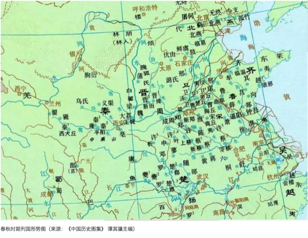
5.24.2 第二章 大争之世
“三家分晋”标志着封建宗法制度彻底覆灭，随后，齐国也换了颜色，一大批新的诸侯登上历史舞台，中华大地进入了新的景象。这些新的诸侯出现之后首要问题是如何不重蹈春秋时期那些诸侯的覆辙。他们急需建立一种新的制度，各国开始了轰轰烈烈的变法。从这个层面而言，战国时期的变法质是一种旧制度自然死亡之后建立全新制度。变法的共同点是实行郡县制，加强中央集权，建立官僚政治。此时中国逐渐形成了现代国家的雏形，最终形成了统一的中央集权制国家——秦朝。（未完待续）
作者：yy 校稿：胜利屯支书、看透 编辑：丫头晚安
5.25 钓鱼？NO，是钓，愚！
最近读了《钓愚》，这本书的两个作者都拿过诺奖，但如果你去看豆瓣评论会发现这本书得分并不高，一堆人说陈词滥调。根据我对作者之一罗伯特·希勒教授公开课的理解，确实论述存在跳跃度，很多地方没讲清楚就转下一个话题了，少了思维连贯性单看案例的确有点陈旧，需要阅读期间需要不断反刍才能体会他的想法。也许可以说这是作者没写好，但不是所有的概念知识都可以浓缩后当快餐接受的，有些书伴随阅历增加是能读出不同东西的。我个人非常钦佩作者的实践精神，希勒教授为了搞清楚广告宣传真伪，可是实打实地吃了高级猫粮。
在我看来，这两位行为经济大师写这本书其实野心挺大的，他们是打算给行为经济学打造一个：泛化模型。
泛化？模型？
行为经济学的书到今天多如牛毛，影响力原则、启动效应、风险厌恶等五花八门的概念似乎是个无尽的列表。这就好比你到了菜市场，能看到苹果、梨，也能看到白菜、萝卜，但是：
1、为什么你会考虑去菜市场找水果蔬菜？
2、菜市场究竟包括多少水果蔬菜？《钓愚》的核心观点就是行为经济学的菜市场存在一个广泛的本质原则去包含商品：欺骗平衡。
这个模型并不构建在理性人模型上，而是更一般的构建在市场形成原则上。设想一笔交易如果能达成，双方必然是都满意的，在这里，理性人模型认为满意是双方利益最大化，欺骗平衡模型则认为利益最大化可能只存在于一方，只有骗术持续不下去时才会回归到平衡。获利空间更广泛存在于信息不对称与非理性行为之中，这产生了浮华，也就是根本不必要的繁荣，人们会被诱导去想得到觉得自己应该得到的东西而不是真正想要的东西。这个获利机会如果不被商家A发现，也会被商家B发现，但消费者经常处于劣势。
凯恩斯与马克思都预测经济发展后人们的工作时间会不断缩短，然后有大把闲暇时光去发展个人兴趣，但今天的现实确是人们更忙了，压力更大了，去追求一些营造出来但不需要的东西与消费，例如教育投资、健康投资、房地产投资，甚至是投资本身。欺骗平衡也是看不见的手，但不是自发行为，而是被个体主导诱发行为，而个体行为整体会导致市场失灵，或者说市场失灵本身也是市场自由发展必然会出现的一个结果。
为了解释清楚这个一般性原理，两位作者分别从政治竞选、金融产品设计、日常消费、大宗低频消费、广告营销等方面展开论述。如果只看案例部分，可能会觉得这些都是已知的东西，但放到欺骗平衡里看，这些都是信息不对称与非理性导致的，都隐含了欺骗成分。
信息不对称欺骗很多时候是通过构建专业性来体现的，但很多时候所谓的专业性只是营利包装出的一个手段，对真实经济发展并无作用。同时利于专业术语混淆优质与劣质产品也是危机的一个源泉，大众总是盲目信任专家的。对于公众而言，他们更多感知的是自己的生活与周围的变化，而钓愚者则在某种程度掌握群体的倾向性，政治家会营造选我就是选你自己的印象而其实其考虑更多的是捐助者的利益。
至于非理性，除了感性地讲故事外，制造错觉也是非理性的一种，后者像魔术师一样让你觉得自己做出了理性选择，但最终却是庞氏结构或根本就是自我欺骗才能实现。真正推动社会发展的是创新，但并不是所有的创新都可以推动发展，在“钓愚”技术上的创新除了制造贫富差距外并无益处。在这里，我觉得作者没讲清楚的是骗局的本质，我觉得是可持续性。很多行为与策略初期你无法判断究竟是真的好策略还是钓愚，但骗局最终都是持续不下去的。利用行为经济学现象可以设计流行的产品，但无法制造经典，不过流行产品会被下一个流行产品替代而让人根本察觉不到上当受骗。
很多人总觉得自己是商业天才，钓愚顾客其实也是满足了他们的需求，但这类需求本来就是不应该存在的，属于内耗与泡沫。这类游戏是不能持续运转的，而矛盾累积的终点往往是灾难。
这些人的“才能”只是能造成社会的分化而并不能解决眼下的问题。另一些人利用自己的权威背书而不知道你口中的1%会被大众放大成5%，这里面4%的泡沫就是击鼓传花。操纵人心者不都是野心家，但有所图谋的野心家都会操纵人心而且只能靠他们自律或法律来限制，市场上永远无法根除钓愚者也没有必要，但放任钓愚者的后果就是接纳市场的不完美。即不承认市场的缺陷，又使用欺骗平衡营私利，这样的人一定要防。
不过在欺骗与否问题上是存在模糊地带的，可持续与否很难预判，另一个重要原因则是行业自身传统导致的营收模型故意模糊了界限。举例来说：
很多服务体验性质行业例如保健品、旅游、金融等佣金或营销占售价比例是远高于生活必需品的，一方面必需品关系民生法律相对健全，另一方面则是这类行业的收益模式就是从两成人手里赚一半的利润，然后再从另外八成人手里赚另一半来防止有价无市，那么这里面用到的价格歧视就不好说是欺骗还是合理定价，但诱导行为是一定存在的。
行业壁垒也是超额收益的一个来源，很多行业搞出一堆认证考试但应试的知识仅仅就是为了把投机者隔离在行业外而不是应用需要，甚至全国统一的考试都存在这个问题，日常工作所需的专业知识其实是很少的，入职培训就可以覆盖，但考试这种壁垒的存在目的并非保证能力，而是做出区分，这里面的误导性也是存在的。不过这类制度设计又是保障一定公平性的体现，如果没有更会是群魔乱舞，当年出家可以免赋税的时候，大量农户剃个头就出家然后国家经济出问题历史上也不是没有案例。
这种对欺骗定义的模糊性或后滞性是这个理论的一个缺陷，但我觉得不妨碍太多，总比死守自由市场理性人那套漏洞跟筛子差不多也不乏模糊后滞解释的理论好。如果尤金·法玛说的都对，我们的历史不必如此坎坷。
传统经济学家在考虑行为经济学现象时通常会用外部性来简单解释，但欺骗平衡的论点在于这种行为是市场内生的，从日常交易到外贸，从经济到政治，从决策到执行都是普遍存在的，跟外部性关系不大，单纯就是人性。
那么如何应对欺骗平衡呢？
监管：监管可能起作用，但需要监管水平等同于行业钓愚水平就必须给狙击者等同待遇，就是说要识别骗局，那就要提供给骗子反水的薪酬，否则钓愚者总是会比监管者聪明而钻空子。
道德：行业协会的道德要求也属于自律行为。
制度设计与法律：书中提到如果想避免选举中政客只关系捐助者利益，可以考虑让给每个选民一张50美元代金券，之后选民的自由捐助不可以超过100美元，这样竞选经费的筹集问题也就民主化了，只是需要纳税人来埋单，但如果这样可以规避财阀对政治的控制也没啥不好的，政治献金又不是白给，预期收益大于支出才会有捐助。
如果是经济稳定的社会，默许政治献金基本意味着默认贫富差距的加大，长期不利于社会稳定。对于日常生活中的商家钓愚，作者的建议很简单，那就是保持专注与警惕，只关心你需要的而不是别人强加给你的需要。
总体来说，这本书非常符合我想总结的商人的把戏，我只是隐约感觉到一些共性但没能像欺骗平衡这样简单地总结出来。如果你读这本书只看到了陈词滥调，那么希望能坐下来仔细思考下欺骗平衡的衍生性，个人、家庭、政府、行业等不同层次上都有体现，配合可持续性的欺骗欺骗标准与独立思考，相信以后就不用费事去看大多数的行为经济学的文章了，一体多面而已。
5.26 专利往事
所有小学老师在开学第一课时都会例行公事地问长大了做什么，应该说这个问题的答案基本取决于六点半的儿童动画里播什么，我那个时候沉迷于机器猫（后来才知道真名多啦A梦），所以毫不犹豫地说发明家。
性格这东西会伴随年龄增长发生变化，但自己吹过的牛皮含着泪也得吹破了才罢休，早年容易钻牛角尖的，为此吃了数不尽的亏。我的表姐曾戏言，别人是不撞南墙心不死，我是直到撞死心也不死。所以一年级这个许诺一直困扰到我高中毕业，期间我参与了无数科技创新素质拓展的活动，现在想起来可能一半原因是我音体美都是负分滚的料，另一半则是想圆了一年级的许诺。
大学刚入学时，我听说学院里有个老师拥有100多项专利，这立刻让我重燃了中二之魂。某天下午我蹑手蹑脚推开办公室的门，此时张老师正在拿烧杯烧开水泡茶。
换个角度来看，眼前这个毛头小子不过是个想写专利混点素质发展分的大学生，所以张老师胡侃了半天后告诉我，如果我能提出十个别人没想到的点子，那么下次就可以讨论下如何写专利的事。
十个？开玩笑，我的随身笔记本里从小学阶段累积的各种不靠谱想法怎么也有三位数，所以我回到宿舍精挑细选了二十个，第二天高高兴兴又去敲门了。
二十个全被否定了，这并不意外，虽然想法可以发专利但幻想是不算数的，我还没来得及感受挫败的感觉就被办公室外树阴遮盖留下的影子吸引了，然后我当场提出了第二十一个想法：高效率太阳能供电器。
想法很简单，光是普照大地的，但太阳能电池板本身即使做成黑的也存在反光的可能，所以我的想法就是利用光纤把光引到一个暗室里，然后暗室是全封闭的内壁贴上太阳能电池板，这样无论如何光都逃不出去，再不济也能发热来集中能量。如果光纤探头足够多或者使用团聚结构，那么接收面就从平面变成了曲面，同时立体结构的暗室要比摆在外面平铺的维护成本低很多，主要就是清理下光纤探头。
现在看这个想法里面科学成分少的可怜，连可行性都不大，几乎都是一厢情愿，应用场景也很模糊，不过张老师想了下没找到可以充分反驳的理由，就给了我个模版说照着写个说明书吧。
写说明书才是痛苦的，倒不是没写过，而是一查资料就发现自己连PN结等太阳能电池的基本原理都不知道，对工程上的技术参数更是两眼一抹黑，我是拿着高中知识来混的，大学第一学期也就多个半吊子高数背景，完全用不上。而且，那时候我还没有个人电脑，学校机房里的电脑各种乱七八糟的问题，同时那时候我资料检索的效率很低，关键词找不准还不会进行组合，写个文档也是晕头转向。
最麻烦的还是示意图，前面说过我音体美不及格，自己画都难看，而ps我到今天都不会。当时是用windows里的画图给出的示意图，画光纤团聚的蘑菇头结构时感觉眼都快瞎了。然而当时毅力还是有的，一通胡折腾后勉强张老师同意试一下。
提交专利申请是在南校区，原来的山东工业大学，建筑十分老派，当时提交了申请后啥感觉也没有，不兴奋也不失落，因为没工夫考虑这些事，大一的考试季到了。只要你足够忙，目标一个接一个，其实是不会有什么成就感或挫败感的，有那功夫感时伤春，不如多做些事。
大一寒假，我到省科技馆闲逛，发现他们有模块式的太阳能电池板很适合原型机，回家后我又去买了个铅蓄电池并把之前的一个手工灯罩打上了密密麻麻的孔用来放光纤，然而只要你的原型机不真正工作，这些都是徒劳，我的瓶颈很简单，是买不到光纤。如果那时的我有现在的知识面，估计结果会很不一样。
因为原型机没有做出来，所以张老师失去了兴趣，但专利却申请到了，是实用新型的专利。张老师说如果能有原型机是可以尝试发明专利的。虽然我是第一发明人，但带有田力普签名的专利原件一直都在张老师那边，因为山大自愿给张老师出专利申请费。
几年之后，专利事务所联系我说山大不愿意继续为一个原型机都没有的专利出钱维护了，我作为一个没收入的穷学生一年一千多的专利费也出不起，所以这个专利权利就算权利失效了。你现在可以在谷歌上找到这个专利，说明书是事务所润色过的，图也被重新画过了，其实有点偏离了我最初的意思，不过也有一次引用，专利发布不久后还被日本人翻译成了日文版。
我其实是先申请的专利后了解的专利制度，专利并不是通过授权阻止技术流动，相反，通过专利发布的技术是有利于技术流动的，你只要付费就可以用到，比自己琢磨效率高多了而且专利保护期过后技术就完全公开了。同时，真正关键的技术反而属于技术秘密而采用最原始的保密方法来维护技术独占性，例如可口可口的配方，一旦你申请大家就都知道细节了，能买到的技术都不贵。
与之类似的是开源软件协议，所有技术遇到过的坑都要重新走是没必要的，开源给出了知识累进的可能。另外，开源跟盈利并不冲突，这是商业模式的问题，自己锁死自己是很多人赖以生存的思考方式，虽有保护作用但没有必要，这个世界足够多样。
其实后来我也参与过其他专利的项目，名下确实也有另外的实用新型与发明专利，不过我参与度没那么高。我至少没有食言，算是圆了小学以来发明家的口号，虽然不是什么成功经验，但这堵心里的南墙最终算是撞出了痕迹。我很容易满足，现在已经不纠结了，撞过，挺痛。
有的人你看了一辈子却忽视了一辈子，有的人你只看了一眼却影响了你的一生，有的人热情的为你而快乐却被你冷落，有的人让你拥有短暂的快乐却得到你思绪的连锁，有的人一相情愿了N年却被你拒绝了N年，有的人一个无心的表情却成了永恒的思念，这就是人生。
最近陆续看到了其他国内外使用光纤引光做室内照明的报道，老实说只是我当年专利里的一小部分，而且我查了下他们的专利申请都在我之后，但比我之前也有人提出过。不过我依然觉得他们很厉害，因为这是我当年没有办到的且他们找到了很好的应用方向，我也并不清楚里面是否会有技术难题。光纤采光其实最大的问题在于晚上没有自然光，不过城市夜间光污染在光纤联动下也可以成为一种低能耗基础设施与资源，甚至有可能与太阳能电池板联动，白天发电，晚上导环境光。不过，愉悦感还是有的，就好像看到你的思想旱死在自己的田里但在另一片土地上生根发芽，虽然别人其实是独立想出来的。两个生活经历千差万别的人能在某个时刻想到一起也是挺有意思的事，不过教育让这事变得不那么困难，因为当所有人的理论基础近似，想法不会差太多。很多时候你说服一个人就相当于说服一群人，只要他们想法是类似的，很多时候这个人首先就是你自己。现代教育是标准化的，也容易一熊熊一窝，不要放弃质疑。
专利总是会涉及经济问题，这个没必要规避，我在专利上即没掏过钱也没赚过钱，申请人一直都是山东大学而我是发明人，涉及专利的经营我根本没接触过。这里我讲另一个小故事，我在加拿大的博后导师是SPME技术的发明人，H指数过百，滑大的一个特色是专利权归个人而不是学校，所以他赚了不少钱，即使原始专利过期了他还有后续的专利保护原始想法的延展。老先生给很多人印象就是在各种场合推广自己的技术，商人型学者，但你跟他聊会发现他的生活习惯这么多年一直都没因为经济条件改善而改变过，他那辆破车是我坐过最旧的车，比我年龄还要大，虽然他重视自己的技术但对其他领域及学科整体发展的的认识也很有深度。商人只是他的一面且他做的并不好，有化妆品公司用SPME分离到了一些开花过程中天然香味物质而赚了大钱，他也就是卖了几根纤维，专注技术不过多涉及应用即是优势也是劣势。现在他其实更想得到学术认可，毕竟2001年分析化学副主编评论了过去十年六项先进分析技术，SPME就在其中，而其余的陆续都拿炸药奖了。
时代在进步，十几年前的信息流动与今日相比根本不值一提，一个人想在正确的时间做正确的事，就要预先储备好技能与知识，想法不值钱，把想法变成现实更重要。做科研后我发现很多人都喜欢藏着自己的想法怕被别人知道，这是一种无奈的生存之道，但永远不要过分寄希望于眼前，你能想到的，别人也能想到。别人可以抢你的想法，但抢不了你的人，而且抢想法这事从一开始就代表他认输了。你所要做的就是有勇气在别人否定掉二十个想法后提出第二十一个，有这样的自信才可能在学术圈里活下去。恶心人的事到处都有，与其跟他们纠结，不如无视，这个世界值得思考的东西太多了。
每个人都能提出自己的“高效率太阳能供电器”，看你想不想了，这点自知愚钝的我从来都没怀疑过。
作者：yufree 编辑：竹而乐
5.27 美国工厂
这部纪录片想必很多人都看过了，影片开头提到了通用汽车公司工厂的关闭，那么通用汽车真的到了要关工厂的节⻣眼上了吗？最近 vox 讨论了一下这个话题，有很多有意思的观点在这里分析下。
市场是有周期但无法预测的，不过周期可以看成一种累积问题-清算-再累积问题的循环，在经济发展中，这个累积的问题通常是债务。不过公司制的一个好处就是除了发行必须还钱的债券外，你还可以发行股票，股票上市后也会受供求影响。上世纪二十年代大萧条后，美国监管还没到今天的程度，所以很多公司就利用股票供求关系来做市。
上市公司可通过代理人直接从市面上回购自己公司的股票，市面流通股票变少价格就会上升，提高股价后公司悄悄卖掉，一进一出，什么业绩都不需要就赚到了钱。
这种空手套白狼的玩法在大萧条之后玩的飞起，不久美国人就把回购自己股票算成内部交易搞成了违法行为，——上世纪30年代后在美国自己公司买自己股票是违法的。
那么问题来了，最近不还有新闻说大公司在回购股票，难道是明目张胆违法？
上世纪80年代，美国遇到了滞胀，上台的里根总统换了证监会主席，新主席上任后就把回购股票的限制去除了。原因也是有的，就是刺激投资，当股票可以回购之后投资人就更乐于投资，因为股价会被回购所支持。同时，公司的管理层也从对员工服务转成了对股东服务，因为股东们也很聪明地把管理层奖金跟股价绑定，然后从那时起，管理层的必修课就成了每年搞回购了。一般来说一家公司如果盈利，多出来的钱会有三个去向：再投资、涨工资与股东分红。伴随美国制造业的转移，再投资对美国工业界就成了赔本买卖（投资海外目前还是赚）；工人工资在70年代前确实同生产率上升同步上涨，但70年代后到今天美国工人阶级的实质收入其实没变化，这多出来的钱其实都去搞了回购与管理层奖金。看下美国的贫富差距，近些年也一直走高，完全没有停下来的意思。
现在的政府一上台就减税，开始工人们很高兴以为要涨工资，但今年的国会报告却发现税是实打实减了，但工人工资却几乎没变，反倒是去年股票回购创了历史新高。与之对比的是德国大众与日本丰田，CEO的工资都不如通用的一半高，回购比例最高时也就大概跟通用最低时一样，但通用的市场份额却从曾经的市场第一掉到了第四，而大众与丰田反而经营良好。同时，通用也关掉了一些工厂，其中就有《美国工厂》里曹德旺买的那家。说到这里你可能会说回购就是肥了少数人而瘦了大多数，应该重新取缔，但事情没那么简单。
回购本质是服务投资人的，如果投资人本来就是工人自己，那么所谓回购就是左手掏钱放到右手，要么是分红、要么是工资。然而投资人往往要到市场上找陌生人融资，有些是金融大鳄但也有散户，机构与被动投资的兴起让散户也可以相对高效地投资股票。这就是金融学家所谓的普惠金融，所有人都会从市面上经济发展最好的上市公司的利润中得到回报，如果你工资不涨但股票一直分红，那么也算是从社会经济大发展中受益。
很多公司现在也在去投资化，这样就可以不用听华尔街的指挥而更好为员工与客户而不是股东运转。很多人斥责资本的恶意收购与对管理层的控制，员工持股与参与决策也越来越多，很多公司甚至干脆不上市。不过，相应的这部分超出行业平均的收益就不可能让其他人来染指。
在达成金融普惠之前，可能更先出现的会是社会分化。
上市公司一般是所有公司里经营比较好的一批，经营好的公司股票在二级市场固然吃香，但大头赚到肯定不是人数占优的那部分。普通人确实可以通过被动投资有所收益但不会太多。道理很简单，如果所有非上市公司的人都能得到上市公司的发展福利，那也是左手转右手，左手你分红的收益是你右手工资因为竞争落败给上市公司所减少的，通常后者减少的更多。所以在我看来把所有人都变成投资人的想法只是提出了一种可能性且对个人而言也说得通，但终极目标是达不到的，除非你利用国际分工去压榨发展中国家，遗憾的是现在还就是这么干的，不过压榨是压了，受益总是少数人。
美国在经历了08年金融危机与量化宽松后的就业率确实一直在走高，不过仔细看看会发现这些就业率通常是低端劳动岗位，雇佣率高了但企业家的工资总支出并未增。《美国工厂》里曹德旺的新工厂创造了新的就业，但工资并不如通用时代的工资，但被解雇吓怕了的工人自然也会接受。这里我们不看曹德旺的中国背景，假设来一个名为“不通用”的美国玻璃公司，开同样的工资也会雇佣到人。也就是说，金融危机里失业恐惧实质上降低了制造业的整体用人成本，因此带来的收益去哪了？大概率还是投资人。
投资人里吃肉的还是少数。在不能回购股票的时代，企业CEO与工人收入差距是12倍，现在已经过百倍了。同时，这个问题不是美国特色，欧洲也有，全球的工人阶级其实是金融危机的最大受害者与体验者，反倒是金融从业人员很快就从政府救助里活过来了。想到这里，发现那句全世界无产者联合起来似乎还真是有一定远见。当然，我还没提技术进步后的去人工化与全球范围内年轻人兼职或好听点叫斜杠青年的趋势，企业通过无薪实习与外包可以最大程度精简运行费用与福利支出，但副作用就是分配的不平等更严重了。
在《穷忙》 这本书里，作者看到美国企业会淘汰劳动技能不够的工人，但因为劳动技能高的工人也会摸鱼，所以干脆都发最低工资，这导致人员的高流动率，人员高流动率反过来降低效率，进而进入恶性循环，然后自动化大潮一来，企业就合理升级，留下一批负资产工人给社会。企业逐利天经地义，但演化成少数人配合机器就自然形成分配问题。解决方法何在？
债务、生活恶习及工作不稳定的个体接受了现状后，慈善对改善他们的境遇作用不大，而这些东西在贫富差距大的地方特别常见，国内的三和大神与美国铁锈带的失业工人都实在面对这个问题，这不是先养肥几个富人等他们做慈善就能解决的，这种自发机制及其缓慢。
把人搞穷再施舍与从开始就让更多人享受经济发展是两种发展策略，后者很多人觉得在苏联解体后就失败了，但这是不同历史阶段的事，大锅饭在初级发展阶段是不可取的，但发展的后期特别是技术不断取代人工的今天，让更多人享受技术带来的改变而不是原地打转是必要的，让贫富差距缩小可以让我们回答一个很超现实的问题：在粮食可以满足所有人基本食用需求的今天，为什么有些人还吃不上饭而有些人还在浪费？
给懒汉多发工资是浪费，给富人更多资产也许资金利用率更高，但当下问题是更高的资金利用率只是让富人更富而穷人还是挣扎在边缘。美剧《无耻之徒》里塑造了一个失业工人的形象，他酗酒吸毒坑蒙拐骗，但其实他对生活有希望，在一个小店里工作三周就成了明星员工，然后第四周就被裁掉，因为小店在网购大潮下生存不下去。技术趋势没有道德属性，它一定程度加剧了螺丝钉社会的整体脆弱性，知识精英无法体会那种付不了账单的感受但这种感受不会因为没人说就不存在。绝大多数人都是上了车就不去想挤不上车的状态，但你不想不代表上不了车的人就消失了，你不会知道下次再见时的场景。没有哪种可持续的游戏规则或系统可以单向只让少数人获益。
政府的直接补助可能会比分类甄别更加节省成本。当前很多国家在试点政府直接的经济补助，例如直接给所有人无差别发钱，这反倒看到了一些积极效果，而这与提高底层工人工资其实本质一样，很多人因此可以开始自己的小生意与教育，同时无差别补助的行政成本非常低，政府可以不用费事去排查谁符合条件，而其实这部分行政的财政开支比无差别发钱多发的那部分还要大。指望少数富人剥削后的慈善基金会不如直接从游戏规则上让所有人的分配更有效一些，有人质疑这会让富人没动力投资，但却没看到从个人债务中缓过来的更多人所释放的创造力。你给百万富翁一所大学他能修几个学分?你给一百个交不起学费的人免掉学费他们能成就多少?关于这个话题可能永远都不会有一个简单的答案，说到底我们没有可观测的平行宇宙来对比，但至少要对绝对的价值判断保持怀疑。
对个人而言，有稳定的工作，然后从最优秀的公司发展中分碗汤是不错的。但这种投资形式的副作用会让企业管理者放弃实质发展而着重去玩股票回购这类数字游戏，另外脱离实际的股价往往是泡沫的源头。如果你发现一个高收益的路子，那么公开后的直接后果就是所有钱都涌过来堆泡沫，股价、房价、互联网概念、加密货币、艺术品等的价格疯狂都是这种对利益的追逐，然而也总会因为人多后风险开始上升而最终破灭。所谓铁饭碗无所谓就两种，一种是不可替代性，例如中东的石油，只要你的车子明天还要跑就不能忽略；另一种是高难度有门槛的行业，例如医生等需要定期培训且又吃经验的持证上岗行业。其余的都是些左手换右手的把戏，只不过可能是你的左手换到别人的右手。保持乐观是重要的，但乐观到对很多问题视而不见或仅仅认为过往三五十年的经验以后还行得通就是愚蠢了，危机也许是周期的，但每次都可能是不同的起因，以前的小⻆色现在可能成为主⻆。
毕竟，问题如果不解决，它自己不会主动消失，只会积累。
作者：yufree 校稿：广播站王站长 编辑：元宝大人